Model Post-Training¶
Bu kitabın temel formülü Agent = LLM + Context + Tools'tur. Bu bölüm, LLM denen o "beyni" optimize etmeye odaklanıyor: post-training yoluyla modelin context'i ve araçları daha iyi kullanmasını sağlayarak Agent sisteminin bütününün yeteneğini yükseltmek. Bölüm 6'nın sonunda belirtildiği gibi, değerlendirme sistemi ile simülasyon ortamı post-training'in iki temel taşıdır: değerlendirme ortamı eğitime bir alıştırma sahası sunar, değerlendirme metrikleri ise eğitimin hedefini tanımlar. Bu bölüm işte o iki temel taşın üzerine kuruluyor ve model ağırlıklarının gerçekten nasıl değiştirileceğini, yeteneğin parametrelere nasıl çökeltileceğini tartışıyor.
Bu bölüm, pekiştirmeli öğrenme ya da model eğitimi konusunda hiçbir arka planı olmayan okurlar için yazıldı. Gradyanları veya policy optimizasyonunu bildiğinizi varsaymıyoruz; bunun yerine "bir model nasıl eğitilir" sorusunun kendisinden başlayıp her adımın amacını, çalışma ilkesini ve çözdüğü problemi açık açık anlatıyoruz. Bu bölümü bitirdiğinizde şunlara yanıt verebilmelisiniz: Bir modelin yeteneği kaç adımda dövülür, her adım ne yapar, neden bu sıraya uyulması zorunludur ve kendi projenizde hangi adıma emek harcamalısınız?
Önce en önemli haritayı kuralım: modern bir modelin yeteneği üç aşamada dövülür. Bu üç aşama birbirine kenetlidir, hiçbiri eksik olamaz:
- Pre-training (ön eğitim): Devasa miktarda internet metni üzerinde "bir sonraki token'ı tahmin etme" eğitimi. Bu adım modele dil kurallarını, dünya bilgisini ve temel akıl yürütmeyi öğretir; kütüphanedeki bütün kitapları okumuş bir insan gibi — çok bilgili, ama henüz soruları düzgün yanıtlayamıyor. En pahalı adım budur (rahatlıkla on milyonlarca dolar) ve yeteneğin temelini atar.
- SFT (Supervised Fine-Tuning, denetimli ince ayar — yani modeli etiketlenmiş "girdi—çıktı" çiftleriyle eğitmek; öğretmenin standart cevabı verip öğrencinin ona bakarak öğrenmesi gibi): Birkaç binden birkaç on bine kadar "soru—standart yanıt" gösterim verisiyle modele "hangi formatta, hangi üslupta, hangi akışla yanıt vereceğini" öğretir. Bu adım, çok bilgili modeli talimatları anlayan ve düzenli çıktı veren bir asistana dönüştürür. Ucuz, hızlı ve kararlıdır; bugün konuşlandırılan neredeyse bütün modellerin geçtiği bir adımdır.
- RL (Reinforcement Learning, pekiştirmeli öğrenme — yani modelin defalarca denemesine izin verip sonucun iyi ya da kötü olmasına göre ödül ve ceza vererek davranışını iyileştirmek; köpek yavrusu eğitmeye benzer: doğru yaptığında ödül var, yanlış yaptığında yok): Modele artık standart cevap gösterilmez, kendi başına denemesine izin verilir; iyi giden davranışların olasılığı yükseltilir, kötü gidenlerinki düşürülür. Bu adım modele daha önce görmediği durumlarda da makul kararlar vermeyi öğretir — aynı zamanda bu bölümde en çok yer tutan ve en fazla mühendislik ustalığı isteyen adımdır.
Sezgisel bir benzetme: pre-training "on bin kitap okumaktır" (bilgi biriktirme), SFT "öğretmenin standart çözümü elinden tutarak göstermesidir" (gösterimi taklit etme), RL ise "kendin soru çözüp doğruya yanlışa göre defalarca cilalamandır" (deneme-yanılmayla ilerleme). Üçünün ilişkisi "birini seç" değil, bir üretim hattıdır — önce oku, sonra gösterimi izle, en sonunda sahaya çık.
Bu bölümde baştan sona uzanan iki ana eksen var; önce onları aklınızda tutun, sonraki bütün içerik onlara hizmet ediyor:
- Birinci eksen: SFT ezberler, RL genelleştirir. Aynı görev ve aynı bütçe altında SFT, eğitim verisindeki yanıtları ezberlemeye eğilimlidir; konuşlandırma ortamı eğitimdekinden farklı olduğu anda kolayca işlevsizleşir. RL ise aktarılabilir bir strateji öğrenmeye eğilimlidir ve daha önce görmediği durumlar karşısında daha kararlı kalır. Bu bir slogan değil, ölçülebilir bir olgudur; bu bölüm onu bir dizi kontrollü deneyle defalarca doğrulayacak. Bu farkın altında yatan nedenini Bölüm 7.1 ayrı bir kesim ayırarak enine boyuna anlatıyor.
- İkinci eksen: veri ve ortam, algoritmadan daha önemlidir. Bu, sektörün en sezgi karşıtı ve aynı zamanda en değerli dersidir. Hazır RL algoritmalarını (PPO, GRPO vb.) nasıl kullanacağınızı bilmeniz yeter; başarıyı ya da başarısızlığı asıl belirleyen iki şeydir: simülasyon ortamı (modelin alıştırma yaptığı saha yeterince gerçekçi mi) ve eğitim verisi (gösterimlerin ve ödül sinyallerinin kalitesi yeterince yüksek mi). Pek çok senaryoda, SFT verisinin kalitesi yerinde olduğu sürece RL yapmanıza hiç gerek kalmaz. Bu bölüm dikkatinizi sürekli olarak "hangi algoritmayı ayarlasam" sorusundan "veriyi ve ortamı doğru kurdum mu" sorusuna geri çekecek.
Okuma rehberi: Bu bölümün içeriği okurun arka planına göre iki yola ayrılıyor:
- Agent uygulama geliştiricileri (modeli kendisi eğitmek zorunda olmayanlar): Önce açılıştaki "Pre-training, SFT, RL: üç aşamalı panorama" kesimini okuyup genel resmi kurun; ardından hemen arkasından gelen iki
[isteğe bağlı okuma]kesimini (klasik RL ve pre-training arka planı) atlayıp SFT kesiminden devam edebilirsiniz. "SFT ile RL arasındaki temel fark" ve "Ne zaman SFT, ne zaman RL seçilmeli" karar çerçevelerine, bir de "veri ve ortam algoritmadan daha önemlidir" yargısına odaklanın — bu kavrayışlar Harness engineering'deki tasarım kararlarınızı etkileyecek (ne zaman prompt ile çözülür, ne zaman ince ayar yapmaya değer).- Model eğitimi mühendisleri: Baştan sona sırayla okuyun; iki
[isteğe bağlı okuma]kesimi pekiştirmeli öğrenme ve pre-training için eksiksiz arka plan sunuyor, sonraki deneyler ise yeniden üretilebilir eğitim reçeteleri veriyor.
Pre-training, SFT, RL: Üç Aşamalı Panorama¶
Giriş, üç aşamanın haritasını verdi; bu kesim her adımın mekanizmasını enine boyuna anlatıyor. Üç aşamanın kullandığı veri, optimizasyon hedefi ve maliyet birbirinden farklıdır; benzerliklerini ve farklarını anlamak bütün bölümü kavramanın anahtarıdır. Önce Tablo 7-1 genel bir görünüm veriyor, ardından maddeler tek tek açılıyor.
Tablo 7-1 Model Yeteneğinin Dövüldüğü Üç Aşama
| Aşama | Hangi veri kullanılır | Optimizasyon hedefi | Ne öğrenilir | Tipik maliyet |
|---|---|---|---|---|
| Pre-training | Devasa miktarda ham internet metni | Bir sonraki token'ı tahmin etmek | Dil kuralları, dünya bilgisi, temel akıl yürütme | Aşırı yüksek (milyonlarca–on milyonlarca dolar) |
| SFT | Birkaç bin–birkaç on bin "girdi—çıktı" gösterim çifti | Bir sonraki token'ı tahmin etmek (loss yalnızca yanıt üzerinde hesaplanır) | Talimat takibi, çıktı formatı, üslup, akış protokolü | Düşük (birkaç saat–birkaç gün) |
| RL | Görev + ödül fonksiyonu (standart cevap yok) | Beklenen ödülü maksimize etmek | Aktarılabilir karar stratejisi, keşfedilerek bulunan yeni çözümler | Yüksek (çoğu zaman SFT'nin onlarca–yüzlerce katı) |
Pre-training Ne Yapar: Bir Sonraki Token'ı Tahmin Etmek¶
Modern büyük modellerin bütün "zekası", şaşırtıcı derecede basit tek bir görevin üzerine kuruludur: bir sonraki token'ı tahmin etmek (Next Token Prediction, NTP).
Modele bir metnin ilk yarısını gösterirsiniz, o da bir sonraki token'ın ne olduğunu tahmin eder. Örneğin girdi 中国的首都是 ("Çin'in başkenti") olduğunda modelin 北京 ("Pekin") token'ına yüksek bir olasılık vermesi beklenir. Model her tahmininde kendi öngörüsünü gerçek bir sonraki token ile karşılaştırır; aradaki fark (loss, yani kayıp adı verilir) ne kadar büyükse parametrelerini o kadar sert ayarlar ki bir dahaki sefere benzer context içinde daha isabetli tahmin etsin. Bunu trilyonlarca token'lık internet metni üzerinde tekrar tekrar yapan model; dil bilgisini, olguları, mantığı, hatta temel akıl yürütmeyi öğrenmek zorunda kalır — çünkü uçsuz bucaksız bağlamlar içinde bir sonraki token'ı sürekli doğru bilmenin kestirme yolu yoktur, metindeki düzenlilikleri gerçekten "sindirmek" gerekir.
Aklınızda tutmanız gereken kilit bir nokta var; SFT ve RL boyunca da peşinizi bırakmayacak: modelin çıktısı özünde bir olasılık dağılımıdır. Önceki metin verildiğinde model, sözlüğündeki her olası token'a bir olasılık atar. "Eğitim" dediğimiz şey nihayetinde bu olasılık dağılımını ayarlamaktan ibarettir — istediğimiz token'ların olasılığını yükseltmek, istemediklerimizinkini düşürmek. Üç aşamanın farkı yalnızca "neyin istendiğinde" ve "istenenin hangi sinyalle tanımlandığındadır".
Pre-training'den sonra model çok bilgilidir ama kullanışlı değildir: ona bir soru sorarsınız, yanıt vermek yerine yeni sorular yazmayı sürdürebilir — çünkü internet metinlerinde bir sorunun ardından çoğu zaman başka bir soru gelir. "Soru sorulduğunda yanıt verilir" protokolünü henüz öğrenmemiştir.
SFT'nin Özü: Verisi Değiştirilmiş "Bir Sonraki Token'ı Tahmin Etme"¶
Bu bölümde aşılması gereken ilk kilit kavrayış şudur: SFT, matematiksel olarak pre-training ile aynı görevdir — ikisi de bir sonraki token'ı tahmin eder ve aynı loss fonksiyonunu minimize eder. Pek çok yeni başlayan SFT'yi bambaşka bir yöntem sanır; öyle değildir. SFT ile pre-training arasında yalnızca iki fark vardır:
- Veri farklıdır. Pre-training ham internet metnini kullanır (yapısız, içinde her şey var); SFT ise elle özenle hazırlanmış "girdi—çıktı" çiftlerini kullanır ve formatı tek biçimlidir: "kullanıcı sorusu → ideal yanıt". Model bu gösterimler üzerinde "bir sonraki token'ı tahmin etme"ye devam eder ve böylece "soru sorulduğunda yanıt nasıl kurgulanır" protokolünü öğrenmiş olur.
- Loss yalnızca "yanıt" üzerinde hesaplanır (loss masking, kayıp maskeleme). Bir SFT örneği soru ve etiketlenmiş yanıt olmak üzere iki parçadan oluşur. Modelin "nasıl soru sorulur"u öğrenmesini istemeyiz, yalnızca "nasıl yanıt verilir"i öğrenmesini isteriz; bu yüzden loss hesaplanırken sorunun token'ları maskelenir ve gradyan yalnızca yanıt kısmından geri yayılır. Mühendislik açısından SFT ile pre-training arasındaki tek esaslı fark budur.
Bunu kavradığınızda "SFT ezberler" iddiası kendiliğinden yerine oturur: SFT'nin optimizasyon hedefi, etiketlenmiş yanıttaki her token'ın olasılığını olabildiğince yükseltmektir — açık söylemek gerekirse "bu standart cevabı ezberlemektir". Aynı soru verildiğinde model, gösterimi harfi harfine yeniden üretmek üzere eğitilmiştir. Hedefi net, formatı sabit görevlerde bu son derece verimlidir (birkaç bin örnek sonuç vermeye yeter), ama yetenek sınırı da gösterim verisine çakılıp kalır: gösterimde bulunmayan durumları hiç öğrenmemiştir; gösterimdeki yanıt artık geçerli değilse bile (ortam değiştiyse) onu ezberden okumayı sürdürür.
SFT'nin özü tek cümlede: son derece yüksek bir örneklem verimliliğiyle, kararlı bir "girdi→çıktı" eşlemesini ve protokolü parametrelere kalıcı olarak yazar. Kalıcılaştırdığı şey "format, üslup, akış" türünden protokole ait bilgidir (nasıl söylenir, nasıl yapılır), büyük miktarda olgusal bilgi (ne bilindiği) değil — ikincisi pre-training'e ya da RAG'a kalır (bölümün sonunda bu ayrıma döneceğiz).
Eğitim maliyeti: LoRA ile parametre-verimli ince ayar. Yukarıdaki SFT de sonraki RL de model parametrelerini güncellemeyi gerektirir, oysa tam parametreli ince ayarın VRAM ihtiyacı çok yüksektir (milyarlarca parametrenin hepsi için gradyan ve optimizer durumu saklanmalıdır). LoRA (Low-Rank Adaptation, düşük ranklı uyarlama) en yaygın tasarruf yöntemidir: orijinal büyük ağırlık matrislerine dokunmaz, yalnızca yanlarına görevi öğrenecek küçücük bir "yama" (düşük ranklı matris) asar; parametre sayısı orijinalin yalnızca %1–5'i kadardır ama tam parametreli ince ayara yakın bir sonuç verir. Orijinal ağırlıklar dondurulduğu için LoRA'nın temel modelin mevcut yeteneklerinde yarattığı sarsıntı da daha küçüktür, catastrophic forgetting riski daha düşüktür. Doğrulanmış birkaç pratik ders1: LoRA'yı bütün ana ağırlık matrislerine (özellikle parametrenin en büyük payını tutan MLP katmanlarına) uygulamak zorunludur, yalnızca attention katmanlarına eklerseniz puan kaybedersiniz; en iyi öğrenme oranı, tam parametreli ince ayarınkinin yaklaşık 10 katıdır (hem SFT hem RL için geçerli, son derece kullanışlı bir aktarım kuralı); SFT'de orta-yüksek rank (64–256) kullanılır, RL'de ise her turun taşıdığı bilgi çok az olduğu için küçük rank (8–32), hatta rank=1 bile yeter. Konuşlandırmada tek bir çıkarım sunucusu aynı anda birden fazla LoRA adapter yükleyip çok kiracılı hizmet verebilir. Bu kitap LoRA'yı bütün post-training yöntemlerini kesen bir mühendislik varsayılanı olarak alıyor ve ayrıca açmıyor.
Neden Önce SFT Sonra RL, Tersi Değil¶
Üç aşamanın sırası keyfi değildir. Pre-training'in en başta gelmesi tartışmasızdır — dil ve bilgi temeli olmadan sonrasının lafı bile edilemez. Asıl açıklanması gereken şudur: SFT neden RL'den önce gelmek zorunda?
Yanıt, RL'in çalışma biçiminde saklıdır. RL standart cevaba bakmaz; yanıtı modelin kendisinin üretmesini ister, sonra yanıtın iyi ya da kötü olmasına göre ödül veya ceza verir. Ama iyi mi kötü mü olduğuna karar verebilmek için önce modelin çıktısını ayrıştırabilmek gerekir: görev bir JSON parçası ya da bir tool call üretmeyi gerektiriyorsa ve modelin kustuğu şey formatı darmadağın bir metin yığınıysa, ödül fonksiyonunun hesaplayacak hiçbir şeyi kalmaz ("başarılı mı, başarısız mı" bile ayırt edilemez), dolayısıyla RL'in de öğreneceği bir şey olmaz.
Bu yüzden burada SFT'ye düşen rol "önce derdini düzgün anlatmayı öğretmektir": az sayıda gösterimle çıktı formatını kararlı ve güvenilir biçimde ayrıştırılabilir hale getirir; ancak o zaman RL'in puanlayabileceği bir başlangıç noktası doğar. Sektörün en sağlam iki aşamalı paradigması olan "önce SFT, sonra RL" işte budur. Tersi, yani önce RL sonra SFT, işe yaramaz — kararlı bir çıktı yoksa ödül sinyali baştan sona gürültüdür. Çin resminden ödünç alınmış bir ifadeyle: SFT önce "biçimi" (formatı, yapıyı) ayağa kaldırır, RL ise ardından "ruhun" (stratejinin, genelleştirmenin) peşine düşer; yani önce biçim, sonra ruh.
Önemli bir sınır koşulu: "önce SFT şart" ilkesi "küçük ölçekli bir temel model + katı yapılandırılmış çıktı" kurgusunda geçerlidir (Deney 7-11'de göreceğiz: Llama-3.2-Vision-11B ölçeğindeki bir model SFT'den geçmeden doğrudan RL'e sokulduğunda tamamen başarısız oluyor). Ama temel model yeterince güçlüyse daha ilk andan geçer not alacak çıktılar üretebilir ve SFT atlanabilir — DeepSeek-R1-Zero, güçlü bir temel modelin doğrudan RL ile başarıya ulaşabileceğini, kendiliğinden reflection (kendini değerlendirme) ve uzun zincirli düşünme sergileyebileceğini kanıtladı. Bedeli, çıktının okunabilirliğinin düşük olması ve Çince ile İngilizcenin birbirine karışmasıdır; bu yüzden DeepSeek sonunda R1'de "cold start SFT"i geri ekleyip "biçimi" yeniden sağlama aldı. R1'in Zero'dan cold start'a gidip gelişi, "önce biçim, sonra ruh" ilkesinin en iyi dipnotudur.
SFT ile RL Arasındaki Temel Fark (Bu Bölümün En Önemli Tablosu)¶
Şimdiye kadar tekrar tekrar "SFT ezberler, RL genelleştirir" dedik; şimdi bunun altında yatan nedeni bir kerede eksiksiz anlatalım. İkisi arasındaki bütün farklar tek bir kaynaktan doğar: optimizasyon hedeflerinin farklı olması.
- SFT, "standart cevaba ne kadar benzediğini" optimize eder. Hedef, etiketlenmiş cevabın olasılığını maksimize etmektir (maksimum olabilirlik). Verilen bir soru için tek bir "doğru" çıktı vardır: gösterim cevabı. Model bu tek çıktıya yaklaşmaya çekilir ve öğrendiği şey "şu girdiyi gördüğünde şu çıktıyı ver" biçiminde sabit bir eşlemedir. Bu yüzden ezberler: eğitimde J/Q/K'nın hepsi 10 sayıldığında "J/Q/K görünce 10 kullan"ı kafasına kazır; testte J 11'e dönüştüğünde yine 10 kullanır ve yanılır.
- RL, "sonucun iyi olup olmadığını" optimize eder. Hedef, beklenen ödülü maksimize etmektir. Verilen bir soru için yüksek ödül alabilen her çıktı iyidir; tek bir doğru yol yoktur. Model birden çok yolu kendi keşfeder, hangisi iyi sonuç veriyorsa onu pekiştirir ve öğrendiği şey "hangi süreç doğru sonuca götürür" biçiminde çok daha genel bir stratejidir: J 11'e dönüştüğünde aynı stratejiyle baştan hesaplar, bellekteki cevabı yapıştırmaz. İşte bu genelleştirmedir.
Tablo 7-2 SFT ile RL'in Temel Karşılaştırması
| Boyut | SFT (denetimli ince ayar) | RL (pekiştirmeli öğrenme) |
|---|---|---|
| Optimizasyon hedefi | Etiketlenmiş cevabın olasılığını maksimize etmek (maksimum olabilirlik) | Beklenen ödülü maksimize etmek |
| Eğitim sinyali | Tek bir standart cevap (her token denetlenir) | Kendi ürettiği birden çok yanıt + ödül (her yanıt için tek bir başarı/başarısızlık sinyali) |
| Veri biçimi | "Girdi—çıktı" gösterim çiftleri | Görev + ödül fonksiyonu (standart cevap gerekmez) |
| Öğrenilen şey | Sabit "girdi→çıktı" eşlemesi (ezber) | Aktarılabilir karar stratejisi (genelleştirme) |
| Dağılım kayması altında | Ortam değişir değişmez eski cevabı yapıştırır, performans düşer | Aynı stratejiyle yeniden çözer, daha kararlı kalır |
| Örneklem verimliliği | Yüksek (birkaç bin örnek sonuç verir) | Düşük (çoğu zaman SFT'nin onlarca–yüzlerce katı) |
| Eğitim kararlılığı | Yüksek, hızlı yakınsar | Düşük, salınıma yatkın, dikkatli ayar ister |
| En uygun olduğu yer | Format/üslup/akış kalıcılaştırma, elde yüksek kaliteli gösterim var, ortam kararlı | Yeni senaryolara genelleştirmek gerekiyor, en iyi stratejiyi keşfetmek gerekiyor, etiketleme maliyeti aşırı yüksek |
Bir de daha derinde yatan, ama bilmeye değer bir mekanizma var: mode-seeking (tepe arama). RL'in neden "birkaç iyi stratejiye yakınsadığını" açıklar. Modelin bir soruya verebileceği bütün olası yanıtlar bir olasılık dağılımı oluşturur ve bu dağılımın çok sayıda "tepesi" olabilir (her tepe, makul bir yanıt verme biçimi ailesidir). SFT'nin kullandığı maksimum olabilirlik mass-covering (kütleyi kaplayan) niteliktedir — gösterimde geçen bütün modları kapsamaya uğraşır, bazılarının kalitesi vasat olsa bile onlara da olasılık payı ayırır ("herkese biraz"). RL ise (özellikle KL kısıtlı policy optimizasyonu; matematiksel formu ters KL ıraksamasına karşılık gelir, ilerideki RLHF kesiminde ayrıntılandırılacak) mode-seeking'tir — ödülü en yüksek birkaç tepeyi bulmaya eğilimlidir, olasılığı oraya yığar ve geri kalanını gözünü kırpmadan atar ("kazanan hepsini alır"). RL'den geçmiş modellerin yanıtlarının daha "kesin" olmasının, yüksek kaliteli stratejilerde yoğunlaşmasının nedeni tam olarak budur; RL'in çeşitliliği kolayca feda etmesinin nedeni de. Bu mass-covering ve mode-seeking ikilisini aklınızda tutun; KL ıraksaması kesiminde, kuru görünen ama aslında kritik olan bir tasarım tercihini açıklamak için kullanılacaklar. RL'in tavanı neden SFT'ninkinden yüksek? — Çünkü RL "çevrimiçi"dir. Bu, SFT ile RL arasındaki bir kat daha derin farktır ve RL'in bunca pahalı olmasına değmesinin temel nedenidir. SFT bir çevrimdışı (offline) yöntemdir: yalnızca sabit bir gösterim verisinden öğrenebilir, o verinin dışındaki dünyayı asla göremez. RL ise bir çevrimiçi (online) yöntemdir: modelin sahaya inip yanıtı kendisinin üretmesini, sonra geri bildirime göre kendini düzeltmesini sağlar; dener ve denedikçe öğrenir. ("Çevrimiçi/çevrimdışı" ile daha katı olan "on-policy / off-policy" terimlerini Bölüm 7.8 resmen ayıracak, burada önce sezgiyi kuruyoruz.) "Çevrimiçi" olmak, SFT'nin doğası gereği elde edemeyeceği üç avantaj getirir ve bunlar birlikte tavanı yükseltir:
- Birincisi, çevrimdışının tavanı veridir, çevrimiçinin tavanı görevdir. SFT'nin ulaşabileceği en iyi sonuç gösterimi "kusursuzca yeniden üretmektir" — dolayısıyla tavanı gösterimi yapanın seviyesidir; olsa olsa ona yaklaşır, aşması neredeyse imkânsızdır. 60 puanlık bir öğretmenin etiketlediği veriden 90 puanlık bir öğrenci çıkmaz. RL gösterime bakmaz, yalnızca sonuç ödülüne bakar: daha yüksek ödül getiren her davranış pekiştirilir, kimse onu göstermemiş olsa bile. Böylece RL, gösterimlerde hiç bulunmayan daha iyi stratejileri kendisi keşfedebilir — bölümün ilerisindeki Deney 7-13'ün SimpleVLA'sında modelin kendi icat ettiği "pushcut" (itip kaydırma) hareketi insan gösterimlerinde hiç görülmemişti ve bu, "gösterimi aşmanın" doğrudan kanıtıdır. RL'in tavanını görevin kendisi belirler (ödülün neyi tanıyabildiği), verinin içinde tesadüfen ne bulunduğu değil.
- İkincisi, "doğrulamak" "üretmekten" kolaydır; RL'in yükselebilmesinin asıl nedeni budur. SFT için birinin önce iyi cevabı yazıp gösterim olarak koyması gerekir; RL içinse bir cevabın iyi olup olmadığına karar verebilmek yeter (bir ödül vermek). Pek çok görevde "doğru mu yanlış mı" demek, "doğru cevabı yazmaktan" çok daha kolaydır — matematik sorusunun cevabı anahtarla karşılaştırılabilir, kod testlerden geçirilebilir, teorem ispatları bir ispat doğrulayıcısıyla denetlenebilir. "İyiyi tanımak" "iyiyi yapmaktan" kolay olduğu sürece RL, eldeki her gösterimciden daha güçlü bir model eğitebilir: model gelişigüzel dener, ortam iyileri ayıklayıp pekiştirmeyi üstlenir. Bu "doğrulama—üretim asimetrisi", RLVR gibi doğrulanabilir ödül yöntemlerinin gücünün de kaynağıdır.
- Üçüncüsü, çevrimiçi olmak modeli kendi yürüyeceği yolda çalıştırır ve ona kendi hatalarından çıkmayı öğretir. Çevrimdışı taklidin kovaryat kayması (covariate shift) adında klasik bir kusuru vardır: öğrenci kendi başına yürüdüğünde gösterimden sapar ve veride hiç bulunmayan durumlara girer; bu durumlardan doğru yola nasıl döneceğini hiç öğrenmediği için hata trajectory boyunca gitgide büyür (teorik olarak saf taklidin hatası, trajectory uzunluğu T ile kabaca \(T^2\) oranında büyür; çevrimiçi veriyle eğitim ise bunu yaklaşık \(T\) düzeyine bastırabilir). Çevrimiçi yöntemler tam tersini yapar — model, eğitim sırasında zaten konuşlandırıldığında yürüyeceği dağılımın üzerinde yürür ve her adımdaki geri bildirim tam da o anki gerçek zayıflığına isabet eder; veri her zaman "tazedir", çevrimdışı veri gibi başkasının (öğretmenin) davranışını anlatıp model ilerledikçe giderek alakasızlaşmaz. Bölümün ilerisindeki On-Policy Distillation'ın (Bölüm 7.12) bu kadar güçlü olmasının özü, bu "çevrimiçi olma" avantajını SFT'nin "yoğun denetim" avantajıyla birleştirmesidir.
Bir benzetme: SFT, başkasının çizdiği haritanın üzerinden kopya çekmektir; en iyi ihtimalle harita kadar iyi olur. RL ise elinde pusulayla (ödülle) kendi yolunu aramaktır; haritanın dışına çıkma şansı vardır. "Önce SFT ile zemini at, sonra RL ile yükseğe tırman" reçetesinin ana akım haline gelmesinin nedeni de budur.
Bu panorama elinizdeyken sonraki her kesim haritada kendi yerini bulacak. Hemen ardından gelen iki [isteğe bağlı okuma] kesimi — "Klasik RL Agent'larından Modern Agent'lara" ve "Model Pre-training'inin Temelleri" — daha derine inmek isteyen okurlar için pekiştirmeli öğrenme ve pre-training arka planını tamamlıyor; doğrudan post-training'e girişmek isteyen okurlar bunları atlayıp SFT kesiminden başlayabilir.
Klasik RL Agent'larından Modern Agent'lara [isteğe bağlı okuma]¶
Agent ile Ortamın Etkileşimi¶
Pekiştirmeli öğrenmenin (Reinforcement Learning, RL) özü, en yüksek kümülatif ödülü (Cumulative Reward) elde etmek için mevcut duruma bakarak hangi eylemin seçileceğini öğrenmektir. Satranç öğrenen bir yapay zekayı düşünün: attığı her hamle bir eylemdir, oyunu kazanmak pozitif ödül, kaybetmek negatif ödül getirir; kümülatif ödül ise bütün partinin toplam kazancıdır. Agent ile ortam sürekli etkileşir: her adımda Agent mevcut durumu gözlemler, bir eylem seçer, ortam yeni bir durum üretip bir ödül verir.
Bu etkileşimi daha somut kavramak için aşağıdaki şekil standart RL döngüsünü gösteriyor: Agent her zaman adımında ortamın durumunu gözlemler ve bir eylem üretir, ortam da buna göre bir ödül verip yeni bir duruma geçer.
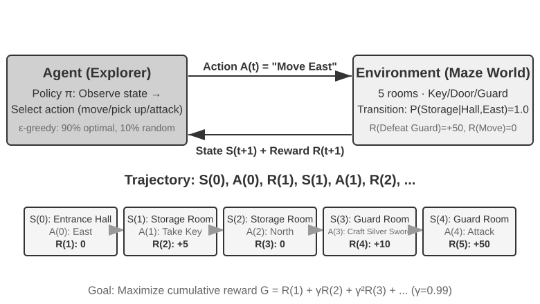
Etkileşim bir trajectory üretir — yani "durum → eylem → ödül → yeni durum → eylem → ödül..." dizisinin eksiksiz kaydını; bir policy'nin iyi mi kötü mü olduğu nihayetinde trajectory'lerin kalitesinde görünür. Değer fonksiyonu (Value Function) şu soruyu yanıtlar: "Şu anda bu durumdaysam ve mevcut policy'yi izleyerek hareket etmeyi sürdürürsem, sonunda toplam ne kadar ödül biriktiririm?" Bu, deneyimli bir satranç oyuncusunun bir konuma bakınca son hamleye kadar hesaplamaya gerek duymadan sezgisiyle partinin kazanma olasılığını kestirmesine benzer. (Buradaki "mevcut policy" yerine "en iyi policy" konduğunda elde edilen şey optimal değer fonksiyonudur; bölümün ilerisinde Bellman optimallik denklemi anlatılırken kullanılacak.) Agent ile ortam arasındaki sınır yalın bir ilkeye uyar: Agent'ın keyfince değiştiremediği her şey ortama aittir.
Pekiştirmeli öğrenmeyi denetimli öğrenmeden (doğru cevabın etiketlenmesini gerektirir) ve denetimsiz öğrenmeden (verideki gizli örüntüleri bulur) ayıran iki özgün nitelik vardır: deneme-yanılma araması (Agent hangi eylemlerin iyi olduğunu kendi yoklamak zorundadır, doğru cevabı söyleyen bir öğretmen yoktur) ve gecikmeli ödül (bir eylemin etkisi ancak birkaç adım sonra görünür olabilir; örneğin iyi bir satranç hamlesinin değeri ancak oyunun sonunda anlaşılır). Bu da beraberinde özgün bir keşif ile yararlanma arasındaki dengeyi (Exploration-Exploitation Tradeoff) getirir: hep bildik yoldan gidilirse yeni bir şey öğrenilmez, hep rastgele denenirse hedefe hiç varılmaz.
Bir pekiştirmeli öğrenme sistemi beş temel öğe içerir:
- Action Space (eylem alanı): Agent'ın gerçekleştirebileceği bütün eylemlerin kümesini tanımlar. Eylemler ayrık olabilir (satrançta "hangi hamle yapılacak" gibi, seçenek sayısı sonludur) ya da sürekli olabilir (bir robotun "eklemi kaç derece döndüreceği" gibi, sürekli bir sayısal değerdir).
- Policy (politika): Agent'ın davranış kuralı; verilen bir durumda ne yapılması gerektiğini belirler. Bir policy çok basit olabilir (bir arama tablosu: A durumunu görünce X eylemini yürüt) ya da çok karmaşık olabilir (derin bir sinir ağı).
- Ödül sinyali: Ortamın verdiği anlık geri bildirim. Ancak Agent'ın hedefi anlık değil uzun vadeli ödülü maksimize etmektir — bu ayrım hayati önemdedir; tıpkı yatırımda bugünün yükselişine düşüşüne değil uzun vadeli getiriye bakmak gerektiği gibi.
- Değer fonksiyonu: Belirli bir durumdan yola çıkıldığında gelecekte toplam ne kadar kümülatif ödül elde edileceğini kestirir ve anlık geri bildirim yokken Agent'ın akıllıca karar vermesine yardım eder. Son altmış yıllık RL araştırmasının en önemli kavrayışlarından biri, değer kestiriminin merkezî konumudur.
- Ortam modeli (isteğe bağlı): Ortamın bir eyleme vereceği tepkiyi öngörür. Ortam modeli kullanan yöntemlere model tabanlı yöntemler denir (önce ortamın nasıl değişeceğini öngörmeyi öğrenir, sonra buna göre plan yapar); kullanmayanlara ise modelsiz yöntemler denir (ortamı öngörmeye çalışmaz, doğrudan deneyimden öğrenir).
Tablo 7-3, çeşitli Agent sistemlerinin temel bileşenlerini karşılaştırıyor; Agent kavramının ne kadar genel olduğunu ortaya koyuyor ve okurun geleneksel RL Agent'ları ile modern LLM Agent'ları arasındaki eylem alanı farkını görmesine yardım ediyor.
Tablo 7-3 Farklı Agent Sistemlerinin Temel Öğelerinin Karşılaştırması
| Agent türü | Ortam | Eylem alanı | Ödül sinyali |
|---|---|---|---|
| Yeni doğmuş ceylan yavrusu | Arazi, yerçekimi, vücut duruşu | Sürekli ve yüksek boyutlu (kas gruplarının kasılması) | Denge (+), düşme (-) |
| Robot süpürge | Oda düzeni, pil seviyesi | Ayrık (yön, süpürme, şarj) | Temizlenen alan (+), pilin tükenmesi (-) |
| Satranç büyükustası | Tahta durumu, süre sınırı | Ayrık ve sonlu (kurallı hamleler) | Kazanma (+1), kaybetme (-1) |
| Müşteri hizmetleri Agent'ı | Konuşma geçmişi, bilgi tabanı | Açık uçlu (düşünme, konuşma, API çağrısı) | Sorunun çözülmesi (+), işlem süresi (-) |
| Kod asistanı Agent'ı | Gereksinim dokümanı, kod tabanı | Açık uçlu (düşünme, arama, düzenleme, yürütme) | Testin geçmesi (+), bug eklenmesi (-) |
Tablo önemli bir içgörüyü ortaya koyuyor: geleneksel RL Agent'larının (satranç, robotik) eylem alanı kapalıdır; LLM tabanlı modern Agent'ların (müşteri hizmetleri, kod asistanı) eylem alanı ise açıktır, neredeyse sınırsızdır ve bu Agent'lar yeteneklerini artırmak için "içsel düşünme" denen özel eylemden yararlanabilirler.
İki Agent Paradigması: MDP'den LLM+RL'e¶
İkisi arasındaki en temel fark eylem alanındadır: MDP eylem alanının sonlu ve kapalı olduğunu varsayar (yukarı/aşağı/al/bırak), oysa LLM'in eylem alanı açık uçlu ve bileşimsel olarak patlayan doğal dil dizilerinden oluşur. Bu fark, iki paradigmanın algoritma tasarımı, örneklem verimliliği ve genelleştirme yeteneği bakımından temelden ayrışmasını belirler. Aşağıda ikisi ayrı ayrı açılıyor.
Geleneksel paradigma: MDP ve Q-learning.
MDP (Markov Decision Process, Markov karar süreci) pekiştirmeli öğrenmenin matematiksel çerçevesidir ve durum, eylem, ödül gibi temel öğeleri tanımlar. Çekirdek varsayımı Markov özelliğidir: gelecek yalnızca mevcut duruma bağlıdır, daha öncesindeki geçmişle ilgisi yoktur. Bir benzetmeyle: satrançta en iyi hamleye karar vermek için mevcut tahta konumuna bakmak yeter, önceki hamlelerin nasıl oynandığını gözden geçirmek gerekmez. Bu varsayım problemi basitleştirir, ama geçmişe bağımlılığı modelleme yeteneğini de kısıtlar.
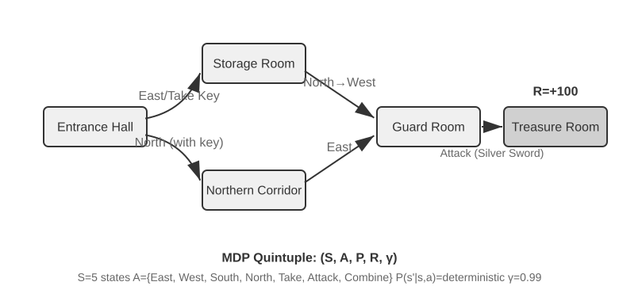
Geleneksel RL Agent'larının kilit özelliği kapalı eylem alanıdır: Agent'ın gerçekleştirebileceği bütün hareketler önceden tanımlanmış sonlu bir küme oluşturur. Klasik tahta oyunu Agent'ları en tipik örnektir: Go'da 361 taş koyma konumu çok kalabalıktır ama tümüyle belirli ve sonludur; satrançta farklı taşların hareket kuralları hesaba katılsa da eylemler yine sayılabilir; Atari oyunlarında ise yalnızca birkaç ya da on küsur ayrık eylem vardır. Robot Agent'ları ise sürekli ama sınırlı bir eylem alanını temsil eder: eklem açısı, hız ve kavrama kuvveti sürekli değerlerdir, ama hepsinin net fiziksel sınırları vardır (azami dönme açısı, azami tork, hız limiti) ve boyut sayısını robotun serbestlik derecesi belirler.
Bu kapalılık hesaplama açısından avantaj sağlar: bütün eylemler sayılıp tek tek değerlendirilebilir, bu da dinamik programlamayı ve Monte Carlo ağaç aramasını kolaylaştırır; eylem-değer fonksiyonu bir tabloyla ya da basit bir fonksiyonla yaklaşık olarak temsil edilebilir. Ama aynı kapalılık ifade ve genelleştirme yeteneğini de kısıtlar. Geleneksel RL Agent'ı sıfırdan başlar ve tamamen deneme-yanılmayla öğrenir: rastgele bir policy'den yola çıkar, deneyim toplar, değer fonksiyonunu ya da policy'yi günceller ve bunu yakınsayana dek tekrarlar.
Bu çerçevedeki en temel ve en önemli algoritmalardan biri Q-learning'dir. Her "durum-eylem" ikilisi için bir değer kestirimi tutar: s durumunda a eylemi yapılıp sonrasında hep en iyi policy izlenirse toplam ne kadar ödül alınır? Sezgisel olarak bir eylemin iyi olup olmadığı, getirdiği anlık kazanca ve bir de "sizi götürdüğü sonraki durumun ne kadar iyi olduğuna" bağlıdır.
Bu sezgiyi denkleme dökerseniz, RL ders kitaplarının ünlü Bellman denkleminin (Bellman equation) çekirdek özyineleme bağıntısını elde edersiniz: bir eylemin gerçek değeri = bu adımda alınan anlık ödül + sonraki duruma varıldığında elde edilebilecek azami gelecek değer:
Burada \(r\) anlık ödül, \(s'\) ise eylem yürütüldükten sonra varılan bir sonraki durumdur (sezgiyi kolaylaştırmak için deterministik biçimde yazıldı; rastgele ortamlarda bir sonraki durum \(s'\) üzerinden beklenen değer alınmalıdır), \(\gamma \in [0, 1)\) ise iskonto çarpanıdır (discount factor) — Agent'ın geleceğe ne kadar ağırlık verdiğini belirler: \(\gamma\) 1'e ne kadar yakınsa uzun vadeli getiri o kadar önemsenir, 0'a yaklaştıkça yalnızca bugüne bakılır. Metinde defalarca geçen "kümülatif ödül" tam olarak her adımın ödülünün \(\gamma\) ile kademeli iskonto edilip toplanmasıdır: \(\sum_{t} \gamma^{t} r_t\). Algoritma her eylemden sonra eski kestirimi "gerçekte olan sonuca" doğru azıcık kaydırır — "tek adımlık gerçek sonuçla eski kestirimi düzeltme" paradigmasına zamansal fark öğrenmesi (Temporal-Difference Learning, TD learning) denir; binlerce, on binlerce deneme-yanılmanın ardından kestirim gerçek değere yaklaşır.
Aşağıdaki iki şekil sırasıyla Q-learning'in ızgara dünyasındaki keşif sürecini ve Q değerlerinin adım adım yakınsamasını gösteriyor.
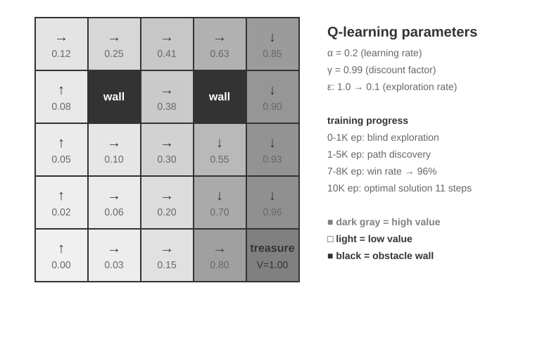
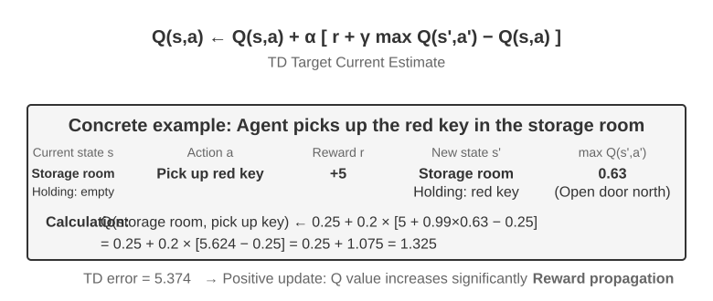
Q-learning özel bir off-policy yöntemdir — herhangi bir policy'nin (rastgele keşif dahil) ürettiği veriyi kullanarak en iyi policy'yi öğrenebilir. On-policy / off-policy'nin kesin tanımı ve bunların LLM post-training'indeki karşılıkları için ilerideki "Pekiştirmeli Öğrenme Algoritmalarının Karşılaştırması" kesimine bakın.
Deney 7-1 ★: Q-learning'in Hazine Avı Oyunundaki Performansı
Q-learning'in özelliklerini ve sınırlarını doğrulamak için bir hazine avı oyunu ortamı tasarladık. Bu ortam birkaç kilit zorluk içeriyor: gizli mekanikler, Agent'ın anahtarlarla kapılar arasındaki eşleşmeyi, silahların etkisini ve eşya birleştirme kurallarını kendi başına keşfetmesini gerektiriyor; çok adımlı bağımlılık, görevin tamamlanması için doğru eylem dizisinin şart olması demek (en iyi çözüm 11 adım); seyrek ödül ise yalnızca kritik eylemlerin ve nihai zaferin kayda değer ödül vermesi, aradaki adımların çoğunun hiçbir geri bildirim almaması anlamına geliyor.
Q-learning Agent'ı standart parametre yapılandırmasını ve ε-açgözlü keşif stratejisini kullanıyor (çoğu zaman o anki en iyi eylemi seçer, arada bir rastgele dener, eğitim ilerledikçe rastgele keşfin oranını kademeli olarak azaltır).
Öğrenme eğrisi tipik davranışı sergiliyor (episode, oyunun baştan sona bir turu demek; açılıştan bitirmeye ya da kaybetmeye kadar bir kez sayılır): - İlk 1.000 episode: %0 kazanma oranı, Q tablosunda yalnızca 124 durum, Agent körlemesine keşif yapıyor - İlk 5.000 episode: hâlâ istikrarlı bir galibiyet yok, Q tablosunda 133 durum - 7.000-8.000 episode: kazanma oranı %34'ten kademeli olarak %96'ya çıkıyor - 10.000 episode: %100 kazanma oranı, Q tablosunda 145 durum, 11 adımlık en iyi çözüm bulunuyor
Eğitimin tamamı 10 saniyeden kısa sürüyor (simülasyon verimliliği son derece yüksek), ama neredeyse 10.000 eksiksiz deneme gerektiriyor. Bu, Q-learning'in temel özelliğini gösteriyor: eksiksiz yolun tesadüfen bulunabilmesi için çok sayıda rastgele keşif gerekir, değer sinyali çok yavaş yayılır ve tekrar tekrar pekiştirilmesi şarttır. Saf sembolik öğrenme, önsel bilgi yokken durum uzayını yalnızca kaba kuvvetle tarayabilir.
Oyun simülatöründe 10.000 turluk deneme-yanılma yalnızca 10 saniye sürer, maliyeti yok denecek kadar azdır. Ama gerçek dünyadaki Agent senaryolarında — her telefon aramasının bir bedeli, her tarayıcı işleminin bir gecikmesi vardır, her hatalı karar geri dönüşsüz sonuçlar doğurabilir — 10.000 deneme-yanılma kesinlikle kabul edilemez. Modern Agent'ların LLM tabanlı yöntemlere yönelmesinin nedeni tam da budur: pre-training'de birikmiş bilgiden yararlanıp çok az etkileşimde etkili kararlar vermek.
MDP'nin üç temel sınırı vardır: örneklem verimliliğinin düşük olması (basit bir görevi öğrenmek için bile devasa sayıda etkileşim gerekir), genelleştirme yeteneğinin zayıf olması (bir ortamda öğrenilen bilgiyi başka bir ortama taşımak çok zordur) ve önsel bilgiden yararlanamaması (her yeni görev sıfırdan öğrenilmek zorundadır). Doğal dil ya da yüksek boyutlu görü gibi karmaşık durum uzaylarıyla karşılaşıldığında bu sınırlar iyice belirginleşir.
Modern paradigma: LLM+RL tabanlı Agent'lar.
Büyük dil modelleri bambaşka bir Agent paradigması getirdi ve Agent'ların kurulma biçimini — özellikle de eylem alanı tasarımını — kökten değiştirdi.
Geleneksel RL'in Agent'ı geri bildirimi yalnızca ortamı değiştirerek alabilir: bir hamle daha yapmak, labirentte bir adım daha atmak. Ama LLM bambaşka bir eylem türü getirdi: içsel düşünme. Düşünmek dış dünyayı değiştirmez, ama nihai eylemin kalitesini belirgin biçimde iyileştirir. Bu dönüşüm her şeyi değiştirdi: Agent'ın eylem alanı artık yalnızca "ne yapılacağı" değil, "ne kadar süre ve ne düşünüleceği" de.
En önemli yenilik, düşünmenin (Thinking) özel bir eylem olarak eylem alanına dahil edilmesidir. Geleneksel RL'de Agent yalnızca ortamın durumunu değiştiren dışsal eylemler yapabilir (hareket etmek, saldırmak, almak); LLM Agent'ında ise içsel düşünme eylem alanının çekirdek bileşenlerinden biri haline gelir — dış ortamı doğrudan değiştirmez, anlık ödülü yoktur, sayısı neredeyse sınırsızdır ve maliyeti de düşüktür.
Geleneksel RL bu tür eylemlerle baş etmekte zorlanır; nedeni keşif uzayının aşırı büyük ve yapısız olmasıdır: sıfırdan öğrenen bir Agent, gözü bağlı halde çölde hazine arayan biri gibidir, ancak rastgele savrulabilir. LLM ise farklıdır. Devasa metin üzerinde yapılan pre-training sayesinde insanlığın biriktirdiği düşünme kurallarını çoktan içselleştirmiştir: matematik sorusu çözerken "koşulları belirle → formülü hatırla → adım adım hesapla" akışını, kod yazarken "gereksinimi anla → yapıyı tasarla → ayrıntıyı gerçekle" akışını izler. Bu, LLM'in düşünmesinin yapılı bir yol boyunca ilerlemesini sağlar ve arama uzayını muazzam ölçüde daraltır. Bu yüzden ek bir RL eğitimi olmasa bile pre-training'den geçmiş bir LLM temel mantığa sahip bir düşünce zinciri (Chain of Thought, CoT) üretebilir. Bu temel mantık, pre-training derlemindeki uçsuz bucaksız insan düşünme süreçlerinden gelir (matematik çözümleri, kod yorumları, tartışma yanıtları vb.); model, next-token prediction yoluyla "bir sonraki adımın nasıl bir akıl yürütme biçimi olması gerektiğini" örtük olarak öğrenmiştir.
RL post-training'i ise dışsal ödüller aracılığıyla LLM'e bu kuralları belirli görevlerde daha verimli kullanmayı öğretir. Dilin yapısı da örtük bir içsel ödül sunar: mantığı tutarlı bir düşünce zincirinin (örneğin "yabancı parayı dolara çevirmek gerektiği için ilk adım kuru sorgulamaktır") üretilme olasılığı yüksektir, mantığı dağınık olanınki ise (örneğin "para çevirmek gerektiği için önce hava durumuna bakalım") son derece düşüktür; bu da modeli doğal olarak makul yolları tercih etmeye yöneltir.
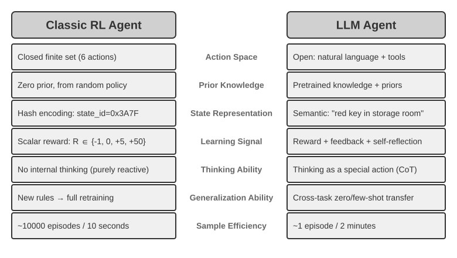
Dilin içsel kurallarına dayanan bu düşünme yeteneği, LLM Agent'ının daha önce hiç görmediği talimatları anlamasını (zero-shot genelleştirme) ve çok az örnekle yeni görevlerde ustalaşmasını (few-shot uyarlama) sağlar — bu, geleneksel MDP Agent'ının mecburen çok sayıda deneme-yanılmaya dayanan paradigmasından tümüyle farklıdır. Ayrıca yeni paradigma bileşimsel genelleştirme (bilinen kavramları yeniden birleştirerek yeni durumlarla baş etme), in-context learning (prompt ve örneklerle hızlı uyarlanma) ve çok modlu anlama (görme, dil, eylem gibi modaliteleri doğal biçimde bütünleştirme) gibi yeteneklere de sahiptir. Şuna dikkat etmek gerekir: in-context learning'in etkisi (zero-shot genelleştirme, few-shot uyarlama) ile içsel mekanizması iki ayrı şeydir — Bölüm 2'de çözümlendiği gibi, attention mekanizmasının çalışma biçimi akıl yürütmekten çok retrieval'a benzer; ama bu, onun göreve uyarlanma konusunda güçlü pratik sonuçlar üretmesine engel değildir.
Eylem alanının kapalıdan açığa evrilmesi, yapay zeka Agent paradigmasındaki köklü dönüşümü yansıtır. İçsel düşünmenin yanı sıra araç parametrelerinin çeşitliliği (doğal dil sorguları, program kodu, karmaşık JSON, çok modlu içerik) fiilî eylem alanını neredeyse sınırsız kılar — bir kod yorumlayıcısı teorik olarak hesaplanabilir her görevi yürütebilir, bir arama aracı bütün internetin bilgi uzayını tarayabilir. Bu hem yeni fırsatlar (Agent daha önce hiç görülmemiş görevleri ele alabilir, temel araçları birleştirerek karmaşık problemleri çözebilir) hem de yeni zorluklar (açık bir ortamda ödül fonksiyonu nasıl tanımlanıp optimize edilir, sınırsız bir eylem alanında verimli arama nasıl yapılır) getirir.
Tool calling ve uzun zincirli düşünme için optimize edilmiş Kimi K3 gibi modeller, LLM+RL paradigmasının tipik yönünü gösterir: büyük ölçekli dil pre-training'inin üzerine, post-training yoluyla problem ayrıştırma, tool calling ve kendi kendini düzeltme yetenekleri pekiştirilir. OpenVLA (ayrıntısı Bölüm 9'da) ise LLM çağının VLA (görme-dil-eylem) mimari paradigmasını sergiler: görme kodlayıcısı ortam gözlemlerini işler, dil modeli talimatı anlayıp akıl yürütür, eylem çözücüsü kontrol sinyallerini üretir; böylece dille koşullanan kontrol ve görevler arası genelleştirme sağlanır. Bir noktayı netleştirelim: OpenVLA'nın kendisi bir milyona yakın robot gösterim trajectory'si üzerinde taklit öğrenmesiyle (davranış klonlama) eğitilmiştir, yani niteliği itibarıyla RL değil SFT'dir; RL'i robotiğe gerçekten sokan ve bu tür bir VLA mimarisinin üzerine ödülle ek optimizasyon yapan asıl örnek, bölümün ilerisindeki Deney 7-13'ün SimpleVLA-RL'idir.
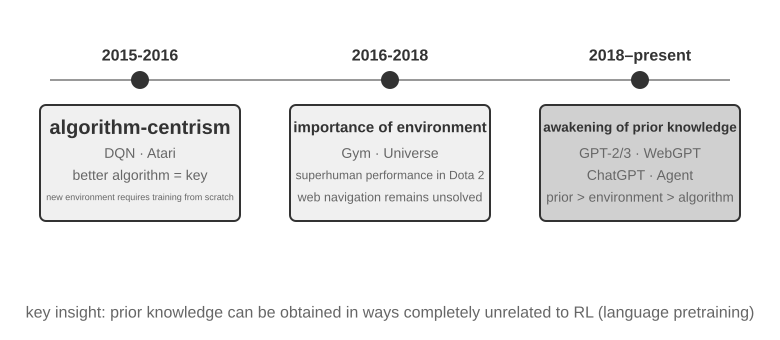
OpenAI'ın keşif yolculuğu (Princeton Üniversitesi'nde yardımcı doçent ve ReAct makalesinin yazarı olan Shunyu Yao, The Second Half metninde ayrıntılı olarak kayda geçirmiştir) kavrayış düzeyindeki evrimi ortaya koyar. Birinci aşama (2015-2016), algoritma merkezcilik: daha iyi algoritmanın anahtar olduğuna inanılıyordu; Atari gibi standart ortamlarda ilerleme kaydedildi, ama ortam değiştiği anda eğitime sıfırdan başlamak gerekiyordu. İkinci aşama (2016-2018), ortamın önemi: Gym çeşitli görevleri standartlaştırdı, Universe ile World of Bits bütün interneti RL'in eğitim ortamına dönüştürmeye çalıştı, Dota 2 ise belirli ve karmaşık bir ortamda insanüstü performansın peşine düştü. Düşünce netti, ama genel amaçlı bilgisayar kullanımı ve web gezinimi bir türlü aşılamadı.
Üçüncü aşama (2018'den bugüne), önsel bilginin uyanışı: GPT-2/GPT-3 dil pre-training'inin muazzam gücünü gösterdi; WebGPT ve ChatGPT bu önsel bilginin kullanışlı Agent'lara dönüştürülebileceğini kanıtladı. En önemli bulgu şuydu: önsel bilgi, RL ile hiçbir ilgisi olmayan bir yoldan da elde edilebilir. Bu, sezgiye aykırı bir gerçek: onlarca yıl boyunca RL araştırmacılarının öncelik sıralaması tümüyle tersine dönmüş olabilir — algoritma > ortam > önsel bilgi değil, önsel bilgi > ortam > algoritma.
Deney 7-2 ★★: Geleneksel RL ile LLM Agent'ının Karşılaştırmalı İncelenmesi
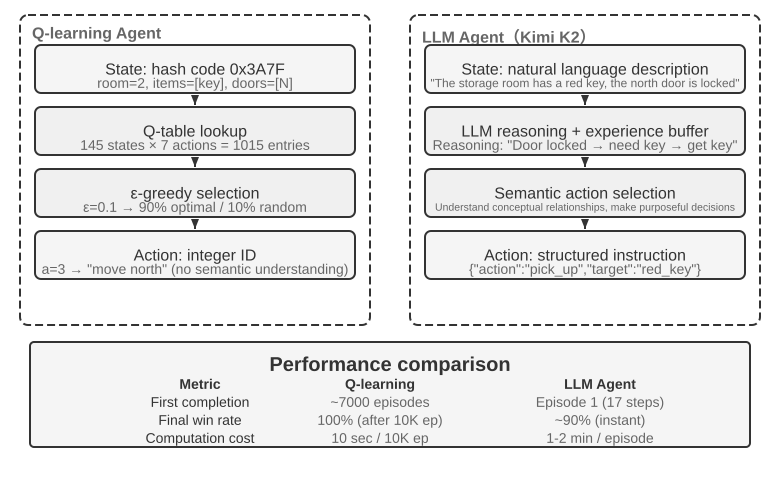
Aynı hazine avı oyununda Q-learning ile LLM Agent'ı (Kimi K3, en fazla 50 deneyim tutan bir tampon bellekle) karşılaştırıldı. Sonuç çarpıcı: LLM Agent'ı daha ilk partide 18 adımda oyunu bitirdi.
Erken evre (amaçlı keşif): Paslı kılıcı aldı ("silah, elin boş olmasından her zaman iyidir"), haritayı sistemli biçimde taradı; kuzey kapısının kilitli olduğunu görünce "anahtar bulmam gerekiyor" diye akıl yürüttü, kilere yöneldi ve sırayla kırmızı anahtarı ve sihirli kristali ele geçirdi. Orta evre (mekanikleri kavrama ve kendiliğinden birleştirme): "anahtar otomatik kullanılır" kuralını kavradı, paslı kılıcın muhafızla baş etmeye yetmeyeceğini önceden kestirdi ve 8. adımda kendiliğinden gümüş kılıcı birleştirdi. Geç evre (yürütme ve hata düzeltme): gümüş kılıçla kuzeye ilerledi, 13. adımda güçlü muhafızı yendi; arada bir iki geçersiz deneme oldu (kılıcı boşa sallamak, geri çekilmek) ve sonunda 18. adımda ejderha hazinesini aldı.
Bu, anlamsal kavrayış ile sembolik eşleme arasındaki temel farkı ortaya koyuyor. LLM Agent'ı oyunun kavramsal yapısını kavradı; attığı her adımın bir amacı ve mantıksal dayanağı vardı. Q-learning içinse "kapı", "anahtar", "kılıç" yalnızca anlamsız sembol dizileridir; aralarındaki ilişkiyi ancak çok sayıda istatistiksel öğrenmeyle yavaş yavaş keşfedebilir.
Hesaplama maliyeti ilginç bir paradoks yaratıyor: Q-learning 10.000 partiyi 10 saniyede oynarken LLM Agent'ının tek bir partisi 1-2 dakika sürüyor. Ama gerçek görevlerde her etkileşimin zaman, para ve risk maliyeti saf hesaplama maliyetini kat kat aşar; bu yüzden yalnızca GPU süresine bakmak adil değildir. Daha kritik içgörü şudur: LLM Agent'ının başarısı daha iyi bir "öğrenme algoritmasına" sahip olmasından değil, devasa bir önsel bilgiyi yanında taşımasından gelir. Oyunun kuralları değiştiğinde Q-learning'in tümüyle yeniden eğitilmesi gerekirken LLM Agent'ı akıl yürüterek doğrudan uyum sağlayabilir. Buradan pratik bir tasarım ilkesi çıkar: simülasyon maliyetinin düşük olduğu ve çok sayıda tekrarın mümkün olduğu senaryolarda geleneksel RL hâlâ değerlidir; etkileşim maliyetinin yüksek olduğu ve hızlı uyum gereken gerçek senaryolarda ise LLM Agent'ının örneklem verimliliği daha kullanışlıdır.
Context uyarlaması, dışsal ürünlerin güncellenmesi ve parametre güncellemesinin nasıl birlikte çalıştığına gelince: Bölüm 1 kavramsal haritayı zaten verdi, bu bölümün sonundaki "eksiksiz manzara" da konuya geri dönecek. Bu bölümün ana ekseni bunlardan post-training'dir — dışsal kurallarla eksiksiz ifade edilmesi zor olan yetenekleri model parametrelerine yazmak.
Model Pre-training'inin Temelleri [isteğe bağlı okuma]¶
Post-training tekniklerinin neden işe yaradığını anlamak için önce pre-training'in neyi kurduğunu bilmek gerekir. Post-training (SFT ve RL) özünde, pre-training'in kurduğu temsil uzayı içinde yapılan bir optimizasyondur — pre-training'in attığı bilgi yapısı, post-training'in tavanını belirler. Bu yüzden pre-training'in çekirdek halkalarını üç deneyle inceliyoruz: küçük ölçekli bir dil modelini sıfırdan eğitmek, görme yeteneğini eklemek ve yeni bir dilin bilgisini enjekte etmek. Bu kesimdeki üç deney destekleyici içeriktir; okurun pre-training (yani modelin dilin temel düzenliliklerini ve dünya bilgisini öğrenmesi için büyük ölçekli veri üzerinde yapılan ilk eğitim) konusunda sezgi kazanmasına yardım eder — pre-training akışına zaten aşina olan okurlar atlayabilir.
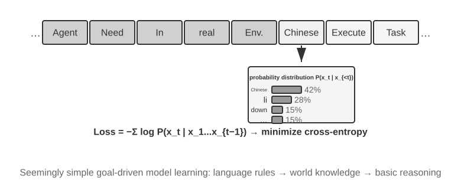
Dil modeli eğitimi "tokenization — pre-training — post-training" biçiminde üç aşamalı bir akış izler. Tokenization (token'lara ayırma) metni ayrık birimlere böler; örneğin 我喜欢编程 ("programlamayı seviyorum") ifadesi 我 / 喜欢 / 编 / 程 olmak üzere dört token'a bölünebilir — bu token'lar, modelin metni işlerken kullandığı en küçük birimdir. Pre-training'in görevi kavramsal olarak çok basittir: modele bir metnin ilk yarısı gösterilir ve bir sonraki token'ın ne olduğunu tahmin etmesi istenir. Model, kendi tahmini ile doğru cevap arasındaki farka bakarak (bu farka loss, yani kayıp denir; loss ne kadar küçükse tahmin o kadar isabetlidir) parametrelerini sürekli ayarlar. Devasa metin üzerinde tekrar tekrar eğitildikten sonra model yavaş yavaş dil kurallarını, dünya bilgisini ve temel akıl yürütme yeteneğini öğrenir. Pre-training tamamlandığında model akıcı metin üretebilir, ama çıktısı yapıdan yoksundur ve talimatları izlemekte zorlanır. Post-training ise SFT (etiketlenmiş girdi-çıktı çiftleriyle eğitim) ve tercih optimizasyonu (örneğin DPO; modele insanların daha çok tercih ettiği yanıtları üretmeyi öğretir) yoluyla onu kullanışlı bir asistana dönüştürür.
Deney 7-3 ★★: LLM'i Sıfırdan Eğitmek — Algoritma İyileştirmesinin Gücü
MiniMind 2 (yüz milyon parametre) örneği üzerinde, tüketici sınıfı bir GPU'da eksiksiz eğitim akışı tamamlandı. İki algoritma optimizasyonu (QK Norm ve Muon optimizer) devreye alınarak yakınsama hızı 3 kat arttı, üretim kalitesi belirgin biçimde iyileşti — gerçekleştirme maliyeti son derece düşük: toplam eğitim yaklaşık 14 saat, maliyet yaklaşık 34 dolar.
Eğitim aşamalarının etkileri: pre-training'den sonra model "dünyanın en yüksek dağı" gibi olgusal soruları yanıtlayabiliyor, ama formatı düzensiz; SFT'den sonra talimat takibi ve çıktı formatı belirgin biçimde iyileşiyor, cevabı beklenen biçimde kurgulayabiliyor; tercih optimizasyonu ise olgusal hataları ve yapay ifadeleri daha da azaltıyor. Yüz milyon parametreli modelin sınırları hâlâ belirgin (karmaşık sorularda kolayca yanılıyor), ama çıkarılan ders şu: sabit ve küçük bir bütçe altında algoritma iyileştirmesi, salt ölçek yığmaktan daha çok fiyat/performans getirir.
Deney 7-4 ★★: Kendi VLM'inizi Eğitmek
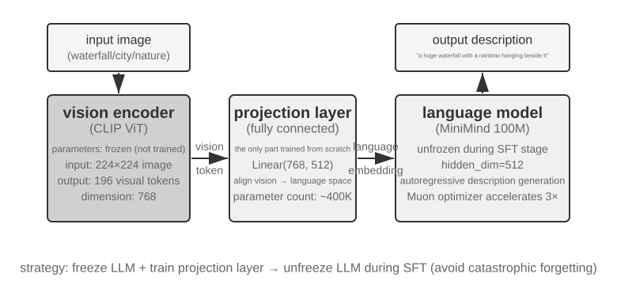
VLM, görsel algıyı ve dil anlayışını tek bir modelde birleştirir; temel zorluk modaliteler arası hizalamadır — "görüleni" ile "söyleneni" birbirine karşılık getirmek. Mimari üç bileşenden oluşur: görme kodlayıcısı (örneğin CLIP; parametreleri sabittir) görüntünün anlamsal özniteliklerini çıkarır; projeksiyon katmanı (hafiftir ve sıfırdan eğitilen tek parçadır) görsel öznitelikler ile dil modeli arasında "tercüman" rolü oynar, görsel öznitelikleri dil modelinin anlayabileceği temsil uzayına eşler; dil modeli ise betimleyici metni üretir. Eğitimde "LLM'i dondur, yalnızca projeksiyon katmanını eğit" stratejisi kullanılır; böylece catastrophic forgetting (yani yeni bir beceri öğrenirken eskisini unutmak) önlenir. Pre-training hizalaması tamamlandıktan sonra LLM'in dondurulması kaldırılır ve yüksek kaliteli görüntü-betimleme çiftleriyle SFT yapılır; betimlemelerin ayrıntı düzeyi ve doğruluğu belirgin biçimde iyileşir.
Bu deney, çok modlu model eğitiminin temel paradigmasını ortaya koyuyor: tek modlu pre-training kazanımlarını yeniden kullanıp hafif bir projeksiyon katmanı eğiterek modaliteler arası hizalamayı sağlamak — verimli ve ölçeklenebilir bir yol, ama projeksiyon katmanının ifade gücü sınırlı olduğundan modaliteler arası derin kavrayışta darboğaza dönüşebilir. Aynı "görme kodlayıcısı + projeksiyon katmanı + LLM" iskeleti bir adım daha ileri götürülüp modelin eylem üretmesi sağlandığında, Bölüm 9'da açılacak olan VLA (görme-dil-eylem) modeli ortaya çıkar.
Deney 7-5 ★★: Pre-training'e Devam Ederek Yeni Bir Dil Öğrenmek
Mistral 7B v0.3 temel alındı (ağırlıklı olarak İngilizce ile pre-training'den geçmiştir, Korece anlama yeteneği neredeyse yoktur) ve Korece Vikipedi üzerinden pre-training'e devam edilerek Korece yeteneği enjekte edildi — yani pre-training'i tamamlanmış bir modelin üzerinde yeni dilin verisiyle denetimsiz eğitimi sürdürmek. Model genel dil modelleme yeteneğine zaten sahip olduğu için yalnızca yeni veri dağılımına uyum sağlaması yeter ve maliyet sıfırdan eğitimin çok altında kalır. Kilit mühendislik noktası, catastrophic forgetting'i hafifletmek için karma veri kullanmaktır (yaklaşık %80 Korece + %20 İngilizce): hedef dilin payı fazla yüksek olursa özgün dil geriler, fazla düşük olursa öğrenme verimi yetersiz kalır. Son olarak Korece talimat verisiyle SFT yapılarak kullanışlı bir Korece diyalog yeteneği elde edildi. Bu deneyin sonucu, bölümün sonundaki eksiksiz manzarada bir kez daha kullanılacak: modele büyük miktarda yeni alan bilgisi ezberletmenin yolu SFT değil, pre-training'e devam etmektir.
Üç pre-training deneyi ortak bir kuralı ortaya koyuyor: bütçe kısıtlıyken algoritma iyileştirmesi ve mimari yenilik, salt ölçek büyütmekten daha çok fiyat/performans getirir. Daha da önemlisi, pre-training'in modele kazandırdığı şey betimleyici bilgi ve dil modelleme yeteneğidir; yapılandırılmış talimat takibi ve göreve yönelik davranış eksiktir — SFT'nin doldurması gereken boşluk tam olarak budur.
Pre-training'in temel yetenekleri elde edildikten sonraki adım, post-training yoluyla genel amaçlı modeli kullanışlı bir Agent'a dönüştürmektir. Post-training'in ilk aşaması denetimli ince ayardır (SFT).
SFT (Denetimli İnce Ayar)¶
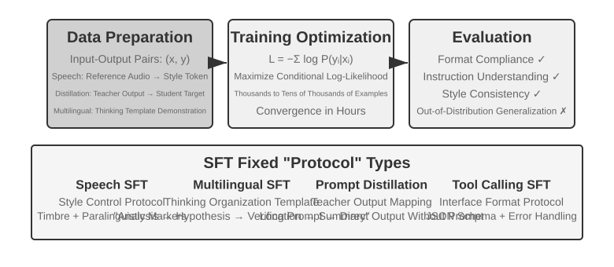
Bölüm 7.1, SFT'nin özünü zaten enine boyuna anlattı (verisi değiştirilmiş ve loss'u yalnızca yanıt üzerinde hesaplanan bir "bir sonraki token'ı tahmin etme"). Bu kesim ise dört deneyle, "kararlı eşlemeyi ve protokolü parametrelere yazan" bu mekanizmanın farklı görevlerde tam olarak neyi kalıcılaştırdığına bakıyor. SFT'nin çekirdek değeri yeni bilgi enjekte etmek değil, protokolü kalıcılaştırmaktır: eşleme ilişkilerini, etkileşim formatını ve üslup normlarını parametrelere yazar; böylece çıkarım sırasında uzun uzadıya prompt vermeye gerek kalmadan beklenen çıktı üretilebilir. Genellikle birkaç binden birkaç on bine kadar yüksek kaliteli örnek, temel diyalog yeteneğini ve talimat takibini kurmaya yeter.
Bu verimliliğin bedeli, eğitim dağılımına güçlü bağımlılıktır: SFT genelleştirmekten çok ezberlemeye eğilimlidir ve test sırasında eğitimde görülmemiş bir durumla karşılaşıldığında performans çoğunlukla belirgin biçimde düşer. Sonraki deneyler bu "protokolü kalıcılaştırma" sürecini farklı açılardan gösterecek.
SFT'ye girişmeden önce kaçınılmaz bir uygulama sorusu var: SFT verisi nereden gelir? Sektörün yanıtı temelde üç yoldur. İnsan uzman gösterimleri — kalite tavanı en yüksek olan, ama pahalı ve yavaş olan yol; formatı ve üslubu tanımlayan "tohum veri" için uygundur. Öğretmen modelin üretmesi — yani sentetik veri; güçlü bir modele toplu halde "girdi—çıktı" çiftleri ürettirilir, süzüldükten sonra öğrenciye damıtılır (Deney 7-8 ve 7-9 bu yolu izler). Modelin kendini yukarı çekmesi — model aynı soru için birden çok aday örnekler, bir doğrulayıcıyla doğru olanları ayıklar ve onlarla dönüp kendini eğitir; buna rejection sampling ile ince ayar denir, ayrıntısı Deney 7-9'da. Üç yol sıklıkla birlikte kullanılır: önce az sayıda insan tohumuyla format oturtulur, sonra öğretmen modelle ölçek büyütülür, en sonunda rejection sampling ile kalite eşitlenir. Hangi yol izlenirse izlensin kurgu akışı aşağı yukarı aynıdır: önce görev dağılımı ve çıktı şeması tanımlanır, sonra toplu halde adaylar üretilir, ardından kural doğrulaması, format denetimi ve elle örnek denetimiyle kalite süzgeci uygulanır, en sonunda tekrarlar ayıklanır, oranlar dengelenir ve çeşitlilik güvenceye alınır. Miktarda açgözlü olmaya gerek yok — birkaç binden birkaç on bine kadar yüksek kaliteli örnek protokolü kalıcılaştırmaya genellikle yeter; yüz bin kirli veri yığmaktansa on bin temiz veriyi özenle işlemek daha iyidir: verideki her gürültüyü SFT sadakatle parametrelere yazar.
Deney 7-6 ★★★: Ses SFT'si — "Ses Kopyalama"dan "Paralinguistik Modellemeye"
[genişletilmiş deney]Orpheus (bağlam prompt'lu voice cloning) ve Sesame (paralinguistik işaret modellemesi) örnekleri üzerinden, "ses üslubunun ve ifade alışkanlıklarının" parametrelere nasıl yazıldığı gösteriliyor. İkisinin yaklaşımı farklı:
- Orpheus: Ses dalga biçimini bir token dizisine sıkıştırır; aynı konuşmacıya ait referans sesi başa ekleyerek modele "bu kişinin sesiyle konuşmayı" öğretir ve cümleler arası tını tutarlılığı sağlar.
- Sesame: Gülme, iç çekme gibi paralinguistik olguları
<laugh>,<sigh>gibi özel işaretlere soyutlar ve modele "işareti görünce karşılık gelen sesi çıkarmayı" öğretir.İfade odaklı görevlerde SFT'nin kalıcılaştırdığı şey üslup kontrolü protokolü ve yapılandırılmış ifade alışkanlıklarıdır; olgusal bilgi ya da karmaşık düşünme değil. Belirleyici olan, eğitim verisinin çeşitliliği ve etiketleme kalitesidir. Yaygın başarısızlık örüntüleri: eğitim verisindeki konuşmacı sayısının çok az olması yüzünden herkesin aynı ağızdan konuşur gibi çıkması; işaretlerde overfitting (yani modelin eğitim örneklerinin ayrıntılarını ezberleyip yeni durumlarda daha da kötü performans göstermesi) sonucu "mekanik gülüş" üretilmesi.
Deney 7-7 ★★★: Çok Dilli Düşünme — Modelin İstenen Dilde Düşünmesini Sağlamak
[genişletilmiş deney]Düşünen modellerin çoğu yalnızca İngilizce "düşünebilir": hangi dilde soru sorarsanız sorun, modelin içindeki düşünce zinciri neredeyse hep İngilizcedir, çünkü eğitim verisindeki yüksek kaliteli düşünme gösterimleri temelde İngilizce yazılmıştır. Bu deneyin hedefi çok basit: modelin belirtilen dilde düşünebilmesini sağlamak.
Yöntem, gpt-oss-20b üzerinde SFT yapmaktır: sistem talimatına
reasoning language: German(ya da başka bir dil) satırı eklenir, ardından İngilizce, İspanyolca, Fransızca gibi birkaç dildeki düşünme örnekleriyle eğitim yapılır. Eğitim verisinde hiç Çince yoktur, ama eğitim bittikten sonra reasoning language yalnızca Chinese olarak ayarlandığında model Çince olarak eksiksiz bir düşünce zinciri kurabiliyor — bu sıfır örnekli diller arası genelleştirme, deneyin en ilginç bulgusu. Şuna dikkat etmek gerekir: bu, SFT'nin kendi genelleştirme yeteneği değildir. Çok dilli pre-training modelde diller arası paylaşılan bir temsil uzayını zaten kurmuştur; SFT yalnızca pre-training sırasında halihazırda var olan bu diller arası yeteneği etkinleştirmiştir.Deney 7-8 ★★: Prompt Damıtma — Kullanılabilir Yeteneği Daha Küçük Bir Maliyetle Yeniden Üretmek
Gerçek uygulamalarda modelin karmaşık bir görevi tamamlaması için çoğu zaman uzun uzadıya system prompt'lar tasarlamak gerekir (binlerce, hatta on binlerce token) ve bu, her çağrıda gecikmeyi ve maliyeti artırır. Düşünen büyük modeller kullanıldığında içsel düşünme token'ları maliyeti bir kat daha büyütür. Prompt damıtmanın fikri, "uzun prompt + düşünen öğretmen" davranışını "kısa prompt / promptsuz + düşünmeyen öğrenci" içine sıkıştırmaktır. Öğretmen, eksiksiz prompt ve düşünme modu altında yüksek kaliteli yanıtlar üretir; eğitim verisinde yalnızca kullanıcı girdisi ile nihai sonuç tutulur, uzun prompt ve aradaki düşünme süreci atılır. Öğrenci "doğrudan sonucu vermeyi" öğrenir; damıtmadan sonra aynı girdilerde öğretmenin çıktı kalitesine yaklaşır ve uzun prompt ile düşünme token'larını işlemesi gerekmediğinden gecikme ve maliyet belirgin biçimde düşer.
Damıtma iki boyutta yapılabilir: "büyükten küçüğe" (büyük modelin yerine orta veya küçük ölçekli bir model koyarak maliyet ile kalite arasında orta yol bulmak) ve "düşünenden düşünmeyene" (aynı ölçekte açık CoT'yi örtük parametrik bilgiye katlayarak 20-30 kat yanıt hızı kazanmak). İkisi çelişmez, üretim ortamında sık sık birlikte kullanılır. Şuna dikkat edin: damıtma öğretmenin sınırlarını da devralır — öğretmenin uzun kuyruk dağılımında sistematik hataları varsa öğrenci bu hataları bir de sabitleyip yazar; öğretmen doğruluğu güvenceye almak için araçlara dayanıyorsa, salt çıktı damıtması araçların getirdiği sağlamlığı yitirir. Mühendislik dersi: ürün biçimi kararlı, girdi dağılımı öngörülebilir ve maliyet kısıtı belirginken Prompt damıtma çok iyi bir optimizasyon aracıdır; keşif döneminde ya da görev henüz oturmamışken açık düşünmeyi ve düzenlenebilir prompt engineering'i korumak hızlı deneme-yanılmanın çekirdeği olmayı sürdürür.
Deney 7-9 ★★★: Düşünce Zinciri (Chain of Thought, CoT) Damıtma
[genişletilmiş deney]Prompt damıtma düşünme sürecini atar; CoT damıtma ise tam tersini yapar: güçlü öğretmen modelin eksiksiz düşünme trajectory'sini öğrenci modele aktarır. Yeterince güçlü bir öğretmen modelden CoT damıtmasıyla, aynı parametre sayısında öğretmenin yeteneğinin %70-80'i geri kazanılabilir. Sınırdaki yetenek rekorlarını kırma peşinde olmayan ama kendi denetimindeki bir model arayan ekipler için bu, en gerçekçi takipçi stratejisidir. DeepSeek-R1 yayımlanırken eş zamanlı olarak açık kaynak yapılan damıtılmış küçük model serisi (R1'in düşünme trajectory'leriyle Qwen ve Llama serilerine SFT uygulanarak elde edilmiştir) tam olarak bu yolun temsilcisidir.
Arka plan: "düşünce duvarı" olgusu. Bazı kapalı kaynak düşünen modeller (OpenAI o serisi, Gemini serisi gibi) düşünürken içsel bir düşünce zinciri üretir, ama kullanıcının gördüğü şey ham düşünme süreci değildir — üreticiler damıtmayı engelleme, güvenlik ve ürün deneyimi gibi kaygılarla CoT'yi çıktıdan önce genellikle yeniden yazar ya da özetler; en değerli olan ham düşünme süreci API'nin arkasında saklı kalır. Bu deneyde öğretmen olarak açık kaynak düşünen modellerin seçilmesinin nedeni tam da budur: DeepSeek V4, Kimi K3, GLM 5.2 gibi modeller eksiksiz düşünce zincirini doğrudan açığa verdiği için damıtma hem teknik hem de lisans açısından mümkündür (yine de kullanmadan önce modelin lisansının damıtma ürünlerine ilişkin izin maddelerini doğrulamak gerekir).
Burada daha pratik ve daha önemli bir yargı var: post-training yapanların büyük çoğunluğunun kapalı kaynak modellerin düşünce zincirini damıtmasına hiç gerek yok. Bugünün en gelişmiş açık kaynak modelleri ile SOTA kapalı kaynak modeller arasındaki fark sanıldığı kadar büyük değil; öğretmen modelin "öğrenciden belirgin biçimde üstün" olması yeter, "dünya birincisi" olması gerekmez. Post-training yapacağınız model 200B ve altı ölçekteyse, öğretmen olarak açık kaynak SOTA modeli kullanmak fazlasıyla yeterlidir.
Deney tasarımı: Üç adımlı akış. Birinci adım, trajectory toplama: hedef görev dağılımından (matematik, kod vb.) sorular örneklenir, açık kaynak öğretmen modelle eksiksiz "düşünme + cevap" trajectory'leri üretilir ve bir kural doğrulayıcısıyla nihai cevabı yanlış olan trajectory'ler süzülüp atılır — aksi halde hatalı düşünme sürecini de öğrenci taklit eder. Bu adımdaki "aday üret — doğrulayarak süz — yalnızca doğru trajectory'leri bırak" yönteminin özel bir adı vardır: rejection sampling (reddederek örnekleme). Onunla kurgulanan veriyle yapılan SFT'ye ise rejection sampling ile ince ayar (Rejection Sampling Fine-Tuning, RFT) denir. Saf SFT ile RL arasında bir yerde durur: ödül modeli eğitilmez, policy gradient uygulanmaz; yalnızca "birden çok örneklem içinden yanlış olanları reddedip doğru olanları bırakma" yoluyla veri kalitesi yükseltilir. Doğrulanabilir görevlerde fiyat/performansı son derece yüksek bir veri kurgulama aracıdır. İkinci adım, SFT eğitimi: "soru →
<think>düşünme trajectory'si</think>+ nihai cevap" biçimindeki eğitim çiftleriyle küçük bir modele (örneğin 7B ölçeğinde) standart SFT uygulanır. Üçüncü adım, karşılaştırmalı değerlendirme: aynı benchmark üzerinde damıtma öncesi ve sonrası öğrenci modeller ile öğretmen model karşılaştırılıp yeteneğin geri kazanılma oranı ölçülür.Kabul ölçütü: Damıtılmış öğrenci model, matematik/kod benchmark'larında damıtma öncesine göre belirgin biçimde ilerlemeli ve düşünme trajectory'lerinde öğretmene özgü reflection, geri izleme ve hesap doğrulama davranışları görülmelidir. Damıtmanın bedelini de göz ardı etmeyin: öğrenci, öğretmenin sistematik hatalarını ve gereksiz uzun düşünme alışkanlığını devralır (ikincisi için Deney 7-10'daki AdaptThink yaklaşımıyla ikinci bir optimizasyon yapılabilir).
Bu dört deneyin ortak bir özelliği var: "kararlı eşlemeyi ve protokolü parametrelere yazmak". Ses SFT'si üslup kontrolü protokolünü, çok dilli SFT düşünceyi örgütleme şablonunu, damıtma SFT'si ise girdiden çıktıya doğrudan eşlemeyi kalıcılaştırıyor. Ortak yanları hedefin net, formatın açık ve değerlendirme ölçütünün kararlı olmasıdır; bu yüzden SFT son derece yüksek bir örneklem verimliliğiyle kazanç sağlayabiliyor. Ama dağılım değiştiği anda ezber eğilimi performans düşüşü olarak açığa çıkıyor. Bu, Bölüm 7.1'deki "SFT ile RL arasındaki temel fark" kesiminde anlatılan ezber—genelleştirme ayrımının deney düzeyindeki görünümüdür.
Ne Zaman SFT, Ne Zaman RL Seçilmeli¶
Bölüm 7.1 SFT ile RL arasındaki temel farkı netleştirdi; bu kesim ise daha uygulamalı bir soruyu yanıtlıyor: somut bir görev karşısında hangisi kullanılmalı? Aşağıdaki karar çerçevesinin bazı sonuçları ilerideki RL deneylerinde (Deney 7-10 ve Deney 7-11) ayrıca doğrulanacak; okur önce bir ön yargıya varabilir, RL kısmını bitirdikten sonra buraya dönüp karşılaştırabilir.
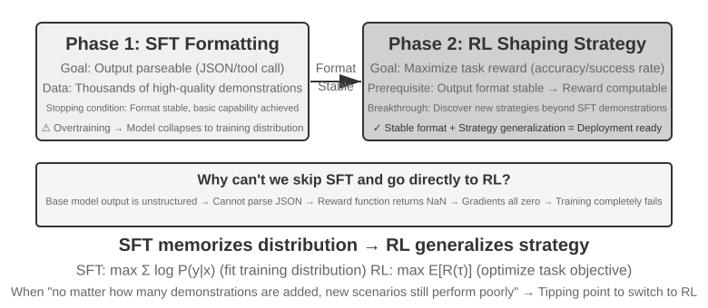
SFT şu senaryolara uygundur: format kalıcılaştırma (JSON çıktısı, konuşma üslubu), elde yüksek kaliteli uzman gösterimlerinin bulunması, eğitim ile konuşlandırma ortamının büyük ölçüde örtüşmesi. RL'in devreye girmek zorunda olduğu senaryolar ise farklıdır: fiilî konuşlandırma ortamı ile eğitim ortamı arasında sistematik bir fark olduğunda (örneğin eğitimde J/Q/K kartlarının hepsi 10 sayılırken konuşlandırmada 11/12/13'e dönüşmesi — kural değişmiştir; ya da eğitimde siyah kart takımları kullanılırken konuşlandırmada kırmızı takımlarla karşılaşılması — görünüm değişmiştir), en iyi stratejinin keşfedilmesi gerektiğinde (uzman gösterimlerinin kendisi de en iyi olmayabilir) ya da etiketleme maliyeti aşırı yüksek olup her yol için gösterim sağlanamadığında RL gerekir.
En sağlam strateji, "önce SFT, sonra RL" biçimindeki iki aşamalı akıştır. SFT'nin başlıca hedefi görev performansını uç noktaya taşımak değil, çıktının format kararlılığını kurmaktır — modelin ayrıştırılabilir JSON ve doğru araç arayüzü çağrıları üretebilmesini güvenceye almak. Ancak çıktı formatı kararlı hale geldikten sonra RL'in ödül sinyali güvenilir biçimde hesaplanabilir. SFT'den geçmemiş bir temel modelin üzerinde doğrudan RL yapmak, çıktı formatının darmadağın olması ve ödülün hesaplanamaması yüzünden çoğu zaman başarısızlıkla sonuçlanır — ama bu sonucun sınır koşulları vardır: "küçük ölçekli temel model + katı yapılandırılmış çıktı gereksinimi" kurgusundan gelir (ilerideki Deney 7-11 gibi). DeepSeek-R1-Zero, yeterince güçlü bir temel modelin SFT'yi atlayıp doğrudan RL ile başarıya ulaşabileceğini, reflection ve uzun zincirli düşünme yeteneklerinin kendiliğinden belirebileceğini kanıtladı — bedeli, çıktının okunabilirliğinin düşük olması ve birden çok dilin birbirine karışmasıydı; DeepSeek'in sonunda R1'e "cold start SFT"i geri eklemesinin nedeni tam olarak budur. R1'in Zero'dan cold start'a bu gidiş gelişi, "önce biçim, sonra ruh" ilkesinin en iyi örneğidir: RL "ruhu" (stratejiyi ve akıl yürütme yeteneğini) kendi başına yetiştirebilir, ama "biçim" (format ve okunabilirlik) yine de en hızlı ve en sağlam biçimde SFT ile ayağa kaldırılır.
İkisinin de bir bedeli var: SFT'nin örneklem verimliliği yüksek, yakınsaması hızlıdır ama genelleştirmesi kısıtlıdır; RL aktarılabilir stratejiler öğrenebilir ama örneklem verimliliği düşük ve eğitimi kararsızdır. Pratik bir ölçüt şudur: "gösterim verisini ne kadar artırırsanız artırın yeni senaryodaki performans bir türlü yükselmiyorsa", RL'e geçmenin eşiğine gelmişsiniz demektir — sorunun kökeni gösterim sayısında değil, SFT'nin optimizasyon hedefinin kendisindedir.
Pratikte karar verirken şu sırayı izleyebilirsiniz:
- Önce şunu sorun: post-training gerekiyor mu? Sorun Harness engineering ile (prompt optimizasyonu, araç tasarımı, context yönetimi) çözülebiliyorsa modeli eğitmeye gerek yoktur. Agent uygulamalarının çoğu buraya düşer.
- Eğitim gerekiyorsa: önce SFT'yi deneyin. Çıktı formatını kalıcılaştırmak (JSON schema, API çağrı formatı), protokole ait bilgiyi kalıcılaştırmak (terimlerin kullanımı, çıktı formatı, akış alışkanlıkları; yani "nasıl söylenir, nasıl yapılır") ve üslubu tekleştirmek (ton, uzunluk) için uygundur. Ancak dikkat: SFT büyük miktarda olgusal bilgiyi ("ne bilindiğini") enjekte etmeye uygun değildir — bunun için pre-training'e devam etmek ya da işi RAG'a bırakmak gerekir (ayrıntısı bölümün sonundaki "eksiksiz manzara" kesiminde). SFT'nin maliyeti düşüktür ve hızlı sonuç verir.
- SFT yetmiyorsa: RL ekleyin. Yeni senaryolara genelleştirme gerektiğinde, en iyi stratejinin keşfedilmesi gerektiğinde ya da etiketleme maliyetinin aşırı yüksek olduğu durumlarda uygundur. Mutlaka önce SFT ile çıktı formatını kararlı hale getirin, RL'i onun üzerine kurun.
Tek Turlu Pekiştirmeli Öğrenme: Ezber ile Genelleştirmenin Karşılaştırılması¶
"Tek tur", görevin tek bir etkileşimde tamamlanması demektir: model girdiyi alır, çıktıyı üretir, ödülü kazanır ve adımlar arası bir durum tutmasına gerek kalmaz. Bu sadeleştirilmiş kurgu, çok turlu etkileşimin karmaşıklığına takılmadan SFT ile RL'in öğrenme mekanizmalarındaki temel farka odaklanmamızı sağlar. Tek turlu senaryo net bir kontrollü deney ortamı sunar: aynı görev, aynı temel model, aynı hesaplama bütçesi; tek değişken eğitim yöntemidir. İlk deney, RL'in "ne zaman düşünmek gerekir" biçimindeki üst-stratejiyi nasıl öğrendiğini gösteriyor; ikinci deney ise aritmetik akıl yürütme gerektiren bir kart oyunuyla "SFT ezberler, RL genelleştirir" iddiasını sistemli biçimde niceliyor.
Deneylere geçmeden önce, sonraki deneylerde geçen terimleri anlayabilmek adına RL algoritmalarına dair asgari bir sezgi kuralım (eksiksiz formüller ve karşılaştırma, bölümün ilerisindeki "Pekiştirmeli Öğrenme Algoritmalarının Karşılaştırması" kesimine bırakıldı). Bu bölümdeki RL eğitimlerinin çoğu policy gradient temellidir: modele aynı soru için birkaç yanıt ürettirilir, ödülü yüksek olan yanıtların ortaya çıkma olasılığı yükseltilir, ödülü düşük olanlarınki düşürülür — "ödülün yüksek olduğu yöne çok, düşük olduğu yöne az git". Tek seferlik güncellemenin fazla büyük olup modeli yoldan çıkarmaması için ana akım PPO algoritması her adımdaki güncelleme genliğini kırpar (ilerideki deneylerde geçen "değer ağı olan PPO" bunu kasteder; değer ağı bir taban çizgisi kestirip daha ince bir avantaj hesabı çıkarmaya yarar). Bir diğer algoritma olan GRPO ise değer ağı eğitmez; onun yerine "aynı sorunun birden çok yanıtını birbiriyle karşılaştırarak" her birinin göreli iyiliğini belirler. Bu sezgiyi aklınızda tutmanız sonraki iki deneyi anlamaya yeter.
Deney 7-10 ★★: AdaptThink — "Ne Zaman Düşünmemek Gerektiğini" Öğrenmek
Büyük düşünen modeller (OpenAI o1, DeepSeek-R1 gibi) her soru için uzun uzadıya düşünce zinciri üretir ve basit sorularda gereksiz maliyet doğurur. Deney önce bir sezgiyi doğruladı: NoThinking modu (
<think></think>ile düşünmeyi atlamak) basit sorularda eşit, hatta daha iyi performans veriyor; Thinking'in üstünlüğü ancak zor sorular karşısında ortaya çıkıyor.AdaptThink, modele modu kendiliğinden seçmeyi RL ile öğretiyor. İki çekirdek bileşeni var:
- Kısıtlı optimizasyon hedefi: NoThinking'i teşvik ederken genel performansın düşmemesini güvenceye alır.
- Önem örneklemesi stratejisi: Thinking/NoThinking örneklerini dengeler ve başlangıçtaki modelin neredeyse hep Thinking'i seçmesinden doğan cold start sorununu çözer (burada özellikle eğitimin ilk döneminde modelin neredeyse yalnızca Thinking örnekleri üretmesi, NoThinking dalından çok az örnek gelmesi ve bu yüzden öğrenmenin başlayamaması kastediliyor. Bu, daha önce DeepSeek-R1'in az sayıda gösterim verisiyle yaptığı "cold start SFT"ten farklı bir bağlamdaki kullanımdır).
Burada geçen "önem örneklemesi", istatistikte sık kullanılan bir yöntemdir: örneklem dağılımı belirli bir örnek türüne kaydığında, örneklere ağırlık vererek dağılımı "düzeltir" ve öğrenme sinyalinin bütün sınıfları adilce kapsamasını sağlar. Kitabın ilerisinde tartışılan PPO, DAPO gibi RL algoritmaları bu fikri tekrar tekrar kullanır.
Değerlendirme sonuçları: birden çok matematik benchmark'ında yanıt uzunluğu %45-64 azaldı, doğruluk oranı ise düşmek bir yana yükseldi. Model, sorunun özelliklerine göre seçim yapmayı öğrendi: yapısı net ve basit sorulara doğrudan cevap veriyor, çok adımlı çıkarım gerektiren zor sorularda eksiksiz düşünce zincirini koruyor ve daha önce görmediği görev türleri karşısında bile zorluk düzeyini doğru kestirebiliyor.
Prompt damıtma ile birbirini tamamlayarak bir "hızlı-yavaş çift sistem" oluşturuyor: damıtma, düşünme gerektiren görevlerin oranını düşürüyor; AdaptThink ise kalan görevlerde tetikleme stratejisini optimize ediyor. İkisi birlikte düşünme verimini en üst düzeye çıkarıyor.
Deney 7-11 ★★: GeneralPoints — Tek Turlu RL'de "Ezber ile Genelleştirme" Karşılaştırması
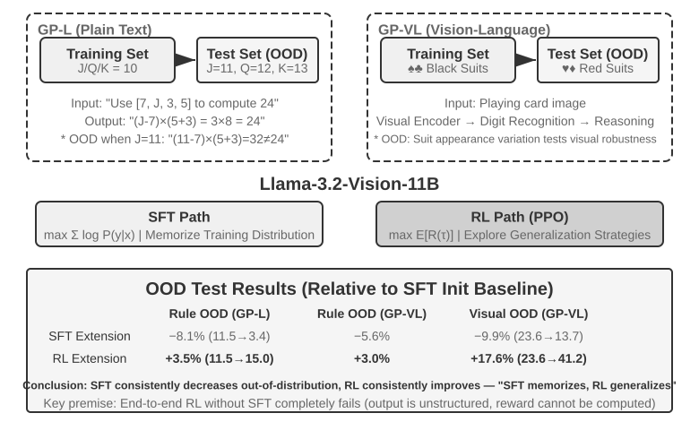
GeneralPoints, Chu ve arkadaşlarının (2025, SFT Memorizes, RL Generalizes, arXiv:2501.17161) önerdiği ve özellikle modelin genelleştirme yeteneğini değerlendirmek için tasarlanmış aritmetik düşünme kart oyunudur. Görevin hedefi "24" oyununa benzer: dört kartın üzerindeki sayıları toplama, çıkarma, çarpma ve bölme işlemleriyle, her sayıyı tam olarak bir kez kullanarak 24 hedef sayısına ulaştırmak. Deneyde salt metin tabanlı GP-L ve görüntü tabanlı GP-VL olmak üzere iki varyant tasarlandı; böylece kural genelleştirmesini ve görsel genelleştirmeyi aynı çerçeve içinde ayrı ayrı inceleyebiliyoruz.
Kural varyantı: Eğitimde J/Q/K'nın hepsi 10 sayılır, testte ise sırasıyla 11/12/13 sayılır; böylece test kümesinde eğitimde görülmemiş sayı bileşimlerinin (11, 12, 13 içeren işlemlerin) bulunması güvenceye alınır ve genelleştirme yeteneği katı biçimde ölçülür. Görsel varyant: Eğitimde siyah kart takımları (♠♣), testte kırmızı kart takımları (♥♦) kullanılır ve görsel görünüm değiştiğinde sağlamlık değerlendirilir. Llama-3.2-Vision-11B temel alınıp standart post-training akışı izlendi: önce SFT ile başlatılıp temel talimat takibi yeteneği kazandırıldı, ardından aynı hesaplama bütçesi altında SFT ve RL eğitimi ayrı ayrı genişletildi (RL kısmında değer ağı olan PPO algoritması kullanıldı); tek bir kuralın (J/Q/K=10) verisiyle eğitim yapıldı ve dağılım içi (ID) ile dağılım dışı (OOD) test kümelerinde değerlendirildi.
Sonuçlar temel farkı net biçimde ortaya koyuyor. Kural OOD'si: RL, GP-L'de +%3,5 kazandırdı (%11,5→%15,0); SFT ise %8,1 düştü (%11,5→%3,4). GP-VL'de RL +%3,0, SFT ise %5,6 düşüş gösterdi. Görsel OOD: RL, GP-VL'de +%17,6 kazandırdı (%23,6→%41,2); SFT %9,9 düştü (%23,6→%13,7).
Görsel tanıma doğruluğu izlendiğinde şu görüldü: RL, sonuç odaklı optimizasyon yoluyla alttaki görme kodlayıcısını iyileştirdi ve bu iyileşme genel performans artışıyla yüksek oranda ilişkiliydi; SFT ise düşünme sürecindeki token örüntülerine aşırı uyum sağladığından görsel token'ları öğrenmeyi ihmal etti ve tanıma doğruluğu tersine düştü.
Deney ayrıca SFT'nin RL için gerekliliğini de ortaya koydu: bu deneyin kurgusunda (Llama-3.2-Vision-11B ölçeğinde bir temel model, üstüne katı yapılandırılmış çıktı gereksinimi) SFT'siz doğrudan uçtan uca RL tamamen başarısız oldu — temel model yapılandırılmış çıktı üretemedi, dolayısıyla ödül hiç hesaplanamadı. Bunun evrensel bir kural değil, belirli bir kurguya ait bir sonuç olduğuna dikkat edin: yeterince güçlü bir temel model SFT'yi atlayıp doğrudan RL ile başarıya ulaşabilir (yukarıdaki DeepSeek-R1-Zero tartışmasına bakın). Dikkate değer bir başka bulgu da doğrulama yinelemesi arttıkça genelleştirmenin iyileşmesidir: 10 yinelemede +%5,99'a karşı 1 yinelemede +%0,48; bu da düşünme anındaki hesaplama ölçeklemesinin RL genelleştirmesinin anahtarı olduğunu gösteriyor.
SFT dağılım kayması altında neden çöküyor da RL tersine daha iyi oluyor? SFT'nin öğrendiği şey "şu girdiyi gördüğünde şu cevabı ver" eşlemesidir: eğitimde J/Q/K'nın hepsi 10 olduğu için model "J/Q/K görünce 10 say" biçiminde sabit bir örüntüyü ezberler; testte J=11 olduğunda hâlâ 10 üzerinden hesaplar ve doğal olarak yanılır. RL'in öğrendiği ise "hangi hesaplama süreci doğru cevaba götürür" biçiminde çok daha genel bir stratejidir: J 11'e dönüştüğünde RL modeli aynı stratejiyle baştan hesaplar, bellekteki cevabı yapıştırmaz. "Ezber" ile "genelleştirme" arasındaki temel fark tam olarak budur.
Bu deneyin çekirdek katkısı, "SFT ezberler, RL genelleştirir" olgusunu sistemli biçimde nicelemesi, bu kuralın hem salt dil hem de görme-dil modalitelerinde geçerli olduğunu kanıtlaması ve SFT ile RL arasındaki tamamlayıcılığı ortaya koymasıdır: SFT format kararlılığını sağlar, RL bunun üzerinde ezber sınırını aşar; ikisi de vazgeçilmezdir. Bu "önce biçim, sonra ruh" eğitim paradigması — Çin resminin terimiyle, önce dış biçimi (formatı, yapıyı) doğru çizmek, sonra içsel ruhun (genelleştirmenin, stratejinin) peşine düşmek — sonraki çok turlu ve çok modlu görevler için metodolojik zemini kurmuştur.
RLHF: İnsan Tercihlerinden Ödül Modeline¶
Buraya kadarki deneylerin ortak bir öncülü vardı: görevin doğrusu yanlışı doğrulanabiliyordu — işlem doğru mu, format kurallara uygun mu; bunları bir kural doğrulayıcısı puanlayabiliyordu. Ama bugün konuşlandırılmış diyalog modellerinin "terbiyeli ve güvenli bir asistan gibi" davranması, daha erken olgunlaşmış başka bir hatta dayanıyor: RLHF (Reinforcement Learning from Human Feedback, insan geri bildirimine dayalı pekiştirmeli öğrenme). RLHF'i anlamak, hem ChatGPT gibi ürünlerin diyalog kalitesinin ve güvenlik alignment'ının nereden geldiğini anlamak, hem de ilerideki algoritmalarda geçen KL cezası ve reward hacking gibi kavramları anlamanın önkoşuludur.
InstructGPT'nin üç aşamalı boru hattı. OpenAI'ın InstructGPT'si2 bugün hâlâ kullanılan standart akışı kurdu:
- SFT: İnsan gösterimlerinden oluşan "talimat—yanıt" çiftleriyle pre-training'den geçmiş modele ince ayar yapılır ve temel talimat takibi yeteneği kurulur — yani yukarıdaki "SFT (Denetimli İnce Ayar)" kesiminde tartışılan içerik.
- Ödül modelinin (Reward Model, RM) eğitilmesi: Aynı prompt için modele birden çok yanıt ürettirilir; insan etiketleyiciler bunları ikişer ikişer karşılaştırıp hangisini daha çok tercih ettiklerini işaretler. Bu tercih çiftleriyle bir puanlama modeli eğitilir; eğitim hedefi Bradley-Terry modeline dayanır:
$\(\mathcal{L}_{\text{RM}} = -\log \sigma\big(r(x, y_w) - r(x, y_l)\big)\)$
Burada \(y_w\) tercih edilen yanıt, \(y_l\) reddedilen yanıt, \(\sigma\) ise sigmoid fonksiyonudur. Sezgisi son derece basit: RM, tercih edilen yanıta daha yüksek puan versin. Puan yerine karşılaştırma toplanmasının nedeni, insanların mutlak puan vermekte tutarlı olamamasıdır ("bu yanıt 7,3 puan eder" diye tutarlı etiketleme neredeyse imkânsızdır), oysa "A mı B mi daha iyi" yargısı çok daha güvenilirdir. "Ödül modeli" rolünü aklınızda tutun — bu bölümün gizli bir eksenidir: burada insan tercihlerinden öğrenilmiş bir puanlayıcıdır; Bölüm 7.10'da ödül tasarımı anlatılırken çeşitli varyantlarını göreceksiniz (yalnızca nihai sonuca bakan ORM, adım adım puanlayan PRM, gerekçesini doğal dille anlatan üretici ödül modeli) ve bir de özel bir durumla karşılaşacaksınız: doğru ile yanlış kurallarla doğrudan belirlenebildiğinde "ödül modeli" doğrudan deterministik bir kod parçasına indirgenir (aşağıda anlatılacak olan RLVR budur). Hepsi aynı soruyu yanıtlar: ödül nereden gelir. 3. RM puanlarıyla PPO yapılması: RM'in verdiği puan ödül sinyali olarak alınıp SFT modeline PPO eğitimi uygulanır (PPO'nun mekanizması bir sonraki kesimde) ve modele, RM'in "insanların daha çok beğeneceğini" düşündüğü yanıtları üretmek öğretilir.
KL cezası: çıkış noktasından fazla uzaklaşma (KL ıraksamasını enine boyuna anlatalım). RLHF'te modelin fiilen optimize ettiği ödül genellikle RM puanının kendisi değil, ondan bir ceza terimi çıkarılmış halidir:
Bu tek formülde yeni başlayanların sık sorduğu dört soru gizli; hepsini tek tek açalım.
(1) KL ıraksaması nedir, ceza nereye ekleniyor? KL ıraksaması (Kullback-Leibler Divergence) iki olasılık dağılımı arasındaki farkı ölçer: iki dağılım birbirine ne kadar benziyorsa KL o kadar küçüktür, tamamen aynılarsa 0 olur; benzemedikçe KL büyür. Buradaki iki dağılım, mevcut policy \(\pi_\theta\) (eğitilmekte olan model) ile referans policy \(\pi_{\text{ref}}\) (eğitimin başlangıç noktası, genellikle o SFT modelidir) tarafından aynı önceki metin için verilen "bir sonraki token olasılık dağılımıdır". \(\beta\) cezanın şiddetini denetler — eğitim betiklerinde sık görülen kl_coef hiperparametresi budur. Mühendislik açısından bu ceza token bazında tek tek hesaplanıp ödüle eklenir (per-token KL): model her token ürettiğinde, o konumda referans modelle arasındaki olasılık farkına bakılır; sapma ne kadar büyükse o adımın ödülünden o kadar çok kesilir. Yani KL ayrı bir loss terimi değildir; ödül sinyalinin içine karıştırılır ve ardından PPO/GRPO'nun avantaj hesabından geçer — etkisini gösterdiği tam yer burasıdır.
(2) Sıralama neden "önce mevcut policy, sonra referans policy"? KL ıraksaması simetrik değildir, \(\mathrm{KL}(P\|Q)\neq\mathrm{KL}(Q\|P)\); dolayısıyla sıralama gelişigüzel yazılmaz. Burada \(\mathrm{KL}(\pi_\theta\|\pi_{\text{ref}})\) biçiminde — mevcut policy önde — yazılmıştır ve matematikte buna ters KL (reverse KL) denir. Cezalandırdığı durum, "\(\pi_\theta\)'nın bir noktaya yüksek olasılık verdiği, oysa \(\pi_{\text{ref}}\)'in orada neredeyse sıfır verdiği" durumdur; yani modelin, referans modelin gidilmemesi gerektiğini düşündüğü yerlere kaçmasını cezalandırır. İstediğimiz şey tam olarak budur: referans model (SFT modeli) "insan gibi konuşan, formatı düzgün" güvenli bölgeyi temsil eder; ters KL, mevcut policy'yi bu güvenli bölgenin yakınında tutar ve savrulmasına izin vermez. Tersine düz KL \(\mathrm{KL}(\pi_{\text{ref}}\|\pi_\theta)\) kullanılsaydı, cezalandırılan şey "referans modelde bulunup mevcut modelin atladığı" modlar olurdu — bu da modeli referans modelin bütün ifade biçimlerini kapsamaya zorlardı ki RLHF'in amacı hiç de bu değildir.
(3) Neden böyle tasarlandı? — mode-seeking'in kökeni. Ters KL'in belirleyici bir karakteri vardır: mode-seeking (tepe arayan) olması. Bölüm 7.1'de bunun tohumu atılmıştı — ters KL, modelin yalnızca ödülü yüksek birkaç "tepeyi" tutup geri kalan modları gözünü kırpmadan atmasına izin verir; SFT'nin maksimum olabilirliği (mass-covering, kütleyi kaplayan) gibi herkese biraz dağıtması gerekmez. RLHF'e taşıdığımızda istediğimiz etki tam olarak budur: RM'in beğendiği yüksek puanlı yanıt biçimlerinden bir ikisini seçip kararlı biçimde üretmek, bütün olası yanıtları tek tek öğrenmek değil. RL sonrası modellerin neden daha "kesin" konuştuğunu ve çeşitliliğinin neden düştüğünü de bu açıklar. Ters KL'in mode-seeking niteliği ile modeli referans dağılımın yakınında tutması, birlikte RLHF'in kararlılığının sırrını oluşturur.
(4) Eklenmezse ne olur? Sezgisi tek cümlede: çıkış noktasından fazla uzaklaşma, yoksa ödül modelinin puanı güvenilmez olur. RM, referans policy'nin yakınındaki çıktı dağılımı üzerinde eğitilmiştir; model bir kez RM'in hiç görmediği bir dağılıma doğru optimize edildiğinde RM'in verdiği puan dayanaksız bir dışdeğerlemeye dönüşür ve yüksek puan artık yüksek kalite anlamına gelmez. Bu yüzden KL cezası aynı anda iki şeyi önler: reward hacking (modelin görevi gerçekten iyi yapmak yerine ödüldeki açıkları kullanarak puan şişirmesi, bir sonraki paragrafa bakın) ve dağılım çöküşü (çıktının tekrara, anlamsız karakter yığınlarına benzer uç biçimlere gerilemesi). Doğrulanabilir ödüllü RLVR eğitiminde bile KL düzenlileştirmesi, eğitimi kararlı tutmak için çoğu zaman korunur (DAPO ve Open-Reasoner-Zero gibi az sayıda çalışma bunu bilerek çıkarmıştır — DeepSeek-R1-Zero'nun GRPO'sunun ise KL terimini hâlâ açıkça içerdiğine dikkat edin).
Ödül modeli "aşırı optimize edilebilir". RM sonuçta insan tercihlerinin yalnızca bir vekil göstergesidir (proxy). Goodhart yasası şunu söyler: bir gösterge bir kez optimizasyon hedefine dönüştüğünde artık iyi bir gösterge değildir — vekil gösterge uç noktaya itildiğinde gerçek hedefle olan ilişkisi bozulur. OpenAI'ın araştırması3 bu ödül modeli aşırı optimizasyonu (reward model over-optimization) olgusunu sistemli biçimde ölçtü: RL eğitimi ilerledikçe vekil ödül (RM puanı) tek yönlü olarak yükselirken gerçek kalite (insan değerlendirmesi) önce yükseliyor sonra düşüyor. Modelin giderek öğrendiği şey "daha iyi yanıt vermek" değil, "RM'e yüksek puan verdirmektir" — uzun, yaltaklanan, titiz görünen içi boş laflar. Bu, RLHF bağlamında reward hacking'in somut biçimidir; KL cezası ile erken durdurma en sık kullanılan hafifletme araçlarıdır. Bölümün sonundaki "yaygın tuzaklar" kesimindeki reward hacking sorunu da aynı kaynaktan gelir.
DPO: açık ödül modelini atlamak. DPO'nun (Direct Preference Optimization, doğrudan tercih optimizasyonu)4 çıkış noktası şudur: madem "RM eğit + PPO" bileşiminin nihai etkisi "tercih edilen yanıtın olasılığını yükseltmek, reddedilen yanıtınkini bastırmak ve bu arada referans modelden fazla uzaklaşmamak"tır, o halde açık RM'i atlayıp tercih çiftlerini doğrudan örtük ödüllü bir sınıflandırma loss'una dönüştürmek daha iyidir — matematiksel olarak bunun KL kısıtlı çevrimdışı tercih optimizasyonuna denk olduğu kanıtlanabilir; ödül modeli örtük biçimde policy'nin kendi içine saklanmıştır. DPO eğitimi SFT kadar basittir: çevrimiçi örnekleme gerekmez, değer ağı gerekmez, ayrıca RM bakımı gerekmez. Bedeli, tamamen çevrimdışı olmasıdır — tercih verisinin dışındaki yeni davranışları keşfedemez ve performans tavanını tercih verisinin kalitesi ile kapsamı belirler.
RLHF ile RLVR'ın ilişkisi. Özetlersek, iki hattın farkı ödülün nereden geldiğidir: RLHF'in ödülü öğrenilmiş RM'den gelir (arkasında insan tercih verisi vardır); RLVR'ın (Reinforcement Learning with Verifiable Rewards, doğrulanabilir ödüllü pekiştirmeli öğrenme) ödülü ise kural doğrulayıcısından gelir (test geçti mi, cevap doğru mu). Agent görevlerinin çoğu tam da doğrulanabilir niteliktedir — bu bölümün ana ekseninin RLVR olmasının nedeni de budur. Ama ikisi birbirinin alternatifi değildir: fiilen konuşlandırılan modellerde ikisi üst üste kullanılır; RLHF diyalog kalitesi ile güvenlik alignment'ından, RLVR ise akıl yürütme ve Agent yeteneklerinden sorumludur. İlerideki "ödül paradigmasının evrimi" tartışmasında ele alınan üretici ödül modeli, iki hattın birleştiği yer olarak görülebilir — eğitilebilir bir ödül modeliyle, kuralların kapsayamadığı açık uçlu görevleri karşılamak.
Pekiştirmeli Öğrenme Algoritmalarının Karşılaştırması¶
Önceki tek turlu deneyler RL'in genelleme üstünlüğünü kanıtladı, bir önceki bölüm de RLHF'in tercih optimizasyonu hattını tanıttı. Ancak bu çalışmaların kullandığı somut algoritmalar birbirinden farklıdır ve mevcut seçeneklerin yalnızca bir bölümüdür. Daha karmaşık çok turlu görevlere geçmeden önce, yaygın algoritmaların özelliklerini ve uygun oldukları senaryoları sistemli biçimde gözden geçirmekte fayda var.
Okuyucu formüllerin içinde kaybolmadan önce en önemli şeyi söyleyelim. Bu bölümde epeyce algoritma adı ve formül sıralanıyor, ama bu bölümün ikinci ana hattını unutmayın: sanayide, hazır RL algoritmalarını (PPO, GRPO vb.) nasıl kullanacağınızı bilmeniz ve doğru olanı seçebilmeniz yeterlidir; başarıyı ya da başarısızlığı asıl belirleyen, algoritmanın kendisi değil veri ve ortamdır. Bu algoritmalar çoktan veRL, TRL gibi olgun çerçevelerin içine paketlendi; onları çağırmak çoğu zaman birkaç satır yapılandırma değiştirmek demek. Dolayısıyla bu bölümün amacı size türetme yaptırmak değil, "hangi senaryoda hangi algoritma" diye bir seçim haritası kurmanızı sağlamak; formül kısımları (eğitim mühendislerine yönelik) anlaşılmıyorsa atlanabilir, sonrasını okumayı etkilemez. Sonraki bölüm "veri ve ortam neden algoritmadan daha önemli" sorusunu doğrudan yanıtlıyor.
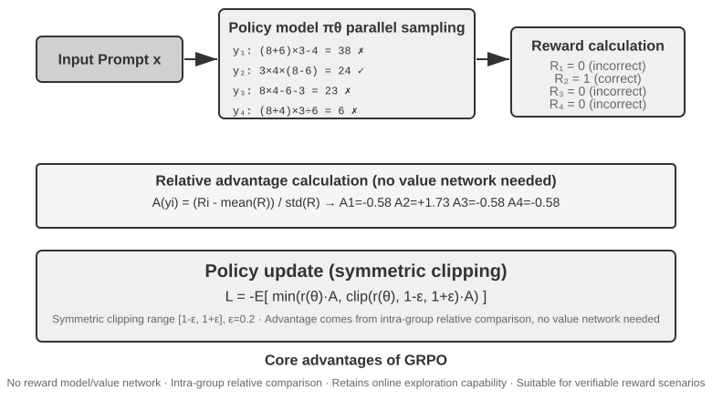
Modern LLM Agent'larının RL senaryosu ile geleneksel RL arasında özsel bir fark var — Agent'ın çok turlu diyalogda kullanıcı niyetini anlaması, araç çağırması, yapılandırılmış çıktı üretmesi ve uzun zincirli düşünme yürütmesi gerekiyor. Bu çok hedefli, çok aşamalı karar verme, "doğru algoritmayı seçmeyi" bir ölçüde önemli kılıyor; ama etkisi, veri ve ortamın etkisinin çok gerisinde kalıyor.
Uygulama yolu açısından RL algoritmaları çevrimiçi keşif yöntemleri (ortamla etkileşerek yeni politikalar keşfeder) ve çevrimdışı optimizasyon yöntemleri (mevcut veriye dayanarak optimize eder; daha kararlı ve doğrudandır) diye ikiye ayrılır. Burada, önceden söz verdiğimiz bir çift kesin terimi de verelim: On-Policy (iz üstü) yöntemler yalnızca mevcut politikanın kendisinin yeni örneklediği veriyle kendini günceller; Off-Policy (iz dışı) yöntemler ise başka politikaların (ya da politikanın eski sürümlerinin) ürettiği veriyle öğrenebilir (önceki Q-learning örneğinde olduğu gibi). Bu ölçüte göre bu bölümde ele alınan yöntemleri hizalayalım: SFT iz dışı bir taklit öğrenmesidir — veri modelin kendisinden değil, öğretmenden ya da insan gösterimlerinden gelir; PPO ve GRPO'nun LLM eğitiminde kullanılan standart biçimleri iz üstüdür — her turda, mevcut modelin yeni örneklediği rollout'larla (yani modele görevi baştan sona bir kez koşturup tam bir trajectory ürettirerek) güncelleme yapılır; DPO ise çevrimdışı tercih optimizasyonudur, ne çevrimiçi örnekleme yapar ne de kelimenin katı anlamıyla politika yinelemesi.
Bu algoritmaların çoğu aynı policy gradient (politika gradyanı) fikri üzerine kuruludur: politika parametreleri \(\theta\)'yı "beklenen getiriyi artıracak yönde" ayarlamak. En temel biçimi (REINFORCE) şöyledir:
Burada \(\pi_\theta(a\mid s)\) politikadır (\(s\) durumunda \(a\) eylemini seçme olasılığı), \(G\) ise bu trajectory'nin (ya da o adımdan sonrasının) kümülatif getirisidir — getiri ne kadar yüksekse, o eylemi üretme olasılığı o kadar pekiştirilir. Ağırlık olarak doğrudan tüm trajectory'nin getirisi \(G\)'yi kullanmak yansız olsa da varyansı çok yüksektir; bu yüzden bir taban çizgisi \(b\) eklenir ve varyansı düşürmek için ağırlık olarak advantage (avantaj) \(\hat{A}=G-b\) kullanılır (bu eylem ortalamadan ne kadar iyi). Sıradaki PPO ve GRPO, özünde "avantaj \(\hat{A}\) nasıl kararlı biçimde kestirilir ve kullanılır" sorusuna verilmiş iki tür iyileştirmedir.
PPO, her güncellemenin büyüklüğünü "kırpma" ile sınırlar ve politikanın tek adımda yoldan çıkmasını önler:
Burada \(\rho\) yeni ve eski politikanın olasılık oranıdır; \(\epsilon\) (örneğin 0,2) tek adımda yapılabilecek ayarlamanın büyüklüğünü sınırlar. İleride anlatılan "Clip-Higher" tam da bu \(1+\epsilon\) üst sınırını gevşetir.
GRPO ise value network'ten (değer ağı — PPO'da ek olarak eğitilen, trajectory'deki her adım için ayrı ayrı değer fonksiyonunu kestirip böylece daha ince avantaj hesaplamayı sağlayan yardımcı bir sinir ağı) vazgeçer ve avantajı "grup içi göreli karşılaştırma" ile kestirir: aynı soru için \(N\) trajectory örnekleyip \(r_1,\dots,r_N\) getirilerini elde eder, sonra her birinin avantajını grup içindeki göreli performansı olarak tanımlar:
Yani "grup ortalamasından iyiyse pozitif, kötüyse negatif" — value network gerekmez; maliyetinin daha düşük olmasının nedeni tam olarak budur. Bir not düşmek gerekiyor: yukarıdaki formülde KL düzenlileştirme terimi atlanmıştır; gerçek eğitimde genellikle bir önceki bölümde tanıtılan per-token KL cezası da eklenir ve politika, referans modelin yakınında tutulur.
Tablo 7-4 yaygın yöntemlerin temel özelliklerini özetliyor. Okurken, sık sık birbirine karıştırılan iki şeyi ayırt etmeye dikkat edin: ödül nereden geliyor (kural doğrulayıcı, öğrenilmiş bir reward model, yoksa insan tercih verisi mi) ve hangi algoritmayla optimize ediliyor. PPO ve GRPO ödülün kaynağı konusunda seçici değildir — hem kural doğrulayıcıya (RLVR) hem de reward model'e (RLHF) bağlanabilirler; asıl farkları avantaj kestirim biçimindedir (value network mi, grup içi göreli taban çizgisi mi).
Tablo 7-4 Post-training ve Çıkarım Zamanı Optimizasyon Yöntemlerinin Karşılaştırması
| Yöntem | Tür | Temel fikir | Avantajı | Dezavantajı | Uygun senaryo |
|---|---|---|---|---|---|
| REINFORCE | Çevrimiçi RL algoritması | Politikayı, tüm trajectory'nin nihai ödülüyle günceller | Uygulaması basit | Varyansı yüksek, eğitim kararsız | Teorik referans; ham biçimi doğrudan pek kullanılmaz, ama taban çizgili türevleri (RLOO, REINFORCE++ vb.) bugünün yaygın seçeneklerinden biridir; GRPO özünde grup içi taban çizgili REINFORCE'tur |
| PPO | Çevrimiçi RL algoritması | Her güncellemenin büyüklüğünü sınırlar, politikanın "yoldan çıkmasını" önler | Kararlıdır; value network daha ince taneli credit assignment sağlar | Value network'ü ayrıca eğitmek ve saklamak gerekir, hiperparametrelere duyarlıdır | Çok turlu Agent, uzun trajectory'de credit assignment |
| GRPO | Çevrimiçi RL algoritması | Aynı soru için birden çok trajectory örnekler, grup içinde "hangisi daha iyi" diye göreli karşılaştırma yapar | Value network gerekmez, maliyeti düşük | Avantaj tüm yanıta eşit dağıtılır, credit assignment kaba kalır; grup içi ödüllerin ayırt edici olmasına bağımlıdır | Tek turlu / kısa trajectory'li görevler, ödülün ayırt ediciliğinin iyi olduğu senaryolar |
| DPO | Çevrimdışı tercih optimizasyonu | Tercih çiftlerini doğrudan örtük ödüllü bir sınıflandırma kaybına dönüştürür | Son derece yalın ve verimli, çevrimiçi örnekleme gerektirmez | Yeni politikalar keşfedemez; çevrimdışı tercih verisinin kalitesi ve kapsamıyla sınırlıdır | Elde yüksek kaliteli tercih verisi bulunan senaryolar |
| KTO | Çevrimdışı tercih optimizasyonu | Tek bir örneğe yalnızca "iyi/kötü" etiketi vermek yeterlidir | Etiketleme maliyeti çok düşük | Sinyal kaba | Etiketleme kaynağının son derece kısıtlı olduğu senaryolar |
| Best-of-N | Çıkarım zamanı yöntemi | Çıkarım sırasında N çıktı üretip en iyisini seçer | Modeli değiştirmez, uygulaması basit | Çıkarım maliyeti kat kat artar, yetenek parametrelere yerleşmez | Erken aşamada kaliteyi hızla yükseltmek; RL için kazanç üst sınırı kestirimi sağlar |
Bu bölümdeki deneylere dönüp her birinin kullandığı algoritmayı açıkça belirtelim: GeneralPoints ile V-IRL (Deney 7-11, 7-12) aynı araştırmadan geliyor ve value network'lü PPO kullanıyor; AdaptThink (Deney 7-10) özel bir kısıtlı optimizasyon hedefi artı önem örneklemesi kullanıyor; ilerideki ReTool (Deney 7-15) veRL üzerine uyarlanmış PPO kullanıyor (eğitim verisi DAPO-Math-17k kümesinden alınmış, ama optimizasyon algoritması yine PPO); SimpleVLA (Deney 7-13) ile RLVP (Deney 7-14) ise GRPO tabanlı. Çok turlu senaryolarda credit assignment problemi daha karmaşıktır ve farklı algoritmaların kendine göre artıları eksileri vardır.
Pratikte seçim yolu: güvenilir bir ödül sinyali ve hesaplama kaynağı varsa → GRPO (yalın) ya da PPO (esnek; uzun trajectory'de credit assignment daha ince); yüksek kaliteli tercih verisi varsa → DPO/KTO (düşük maliyet); erken keşif aşamasındaysanız → Best-of-N ile hızlı başlangıç.
Bu tabloyu gördükten sonra "peki ben hangi algoritmayı ince ayarlamalıyım" diye düşünebilirsiniz. Yanıt şaşırtıcı olabilir: çoğu durumda hangisi olursa olsun fark etmez — önce algoritmaya takılmayın. Sonraki bölüm tam olarak bunu anlatıyor.
Veri ve Ortam: Algoritmadan Daha Önemli Olan Şey¶
Bu, bölümün size en çok akılda kalmasını istediğim kısmı ve bu bölümün ikinci ana hattının doğrudan ifadesi. Şimdiye kadar algoritmalara epeyce yer ayırdık, ama sanayinin ön cephesindeki deneyim tam tersini söylüyor: algoritmanın önemi, üç daha temel unsurun çok gerisinde kalır — simülasyon ortamının gerçekliği (fidelity), eğitim verisinin kalitesi ve temel modelin yeteneği. Hazır algoritmaları kullanmayı bilmeniz yeterli; farkı asıl açan şey, ortamın ve verinin ne kadar iyi kurulduğudur. Bu, aynı zamanda Bölüm 6'nın sonucunu (değerlendirme ve simülasyon ortamları post-training'in temel taşıdır) ve Bölüm 7.2'de anlatılan OpenAI'nin bilişsel dönüşünü yankılıyor — onlarca yıllık RL araştırması öncelikleri ters çevirmişti; gerçek sıralama şudur: önsel (temel model) > ortam > algoritma.
Ortam: Modelin Alıştırma Sahası¶
RL'in özü "deneme yanılmayla öğrenmek"tir ve deneme yanılmanın bir sahası olması gerekir — işte bu, simülasyon ortamıdır (simulation environment). Model ortamda görevleri defalarca koşar, geri bildirim alır, politikasını ayarlar. Ortamın gerçekliği (gerçek dağıtım senaryosuna ne kadar benzediği), eğitilen politikanın kullanılabilir olup olmayacağını doğrudan belirler:
- Ortam çarpıksa, politika kesin çöpe gider. Simülasyondaki müşteri temsilcisi hep sabit bir kalıpla yanıt veriyorsa ve hata mesajları üretim ortamıyla örtüşmüyorsa, model yalnızca simülasyonda işe yarayan bir "sınav taktiği" öğrenir ve canlıya çıkar çıkmaz açık verir. Bu, RL projelerinin en sık görülen kaza biçimidir — algoritma kötü olduğu için değil, alıştırma sahası sınav salonuyla aynı yer olmadığı için.
- Yüksek gerçeklikli bir ortam kurmak, çoğu zaman eğitimin kendisinden daha pahalı ve daha zordur. Büyük ölçekte paralel çalışabilen, yeniden üretilebilir, geri bildirimi gerçekçi bir ortam, genellikle modeli ayarlamaktan çok daha fazla mühendislik yatırımı gerektirir. Bu bölümün ilerisindeki araç çağırma deneylerinde (AWorld'ün MCP sandbox'ı, ReTool'un kod yorumlayıcı sandbox'ı) ortam kurmak için bu kadar emek harcanmasının nedeni tam olarak şudur: gerçek API'lerin hız sınırları vardır, hesap kapatabilirler, yan etkileri vardır; doğrudan eğitim için kullanılmaları mümkün değildir. Önce kararlı, denetlenebilir ve yeniden oynatılabilir bir "gölge dünya" inşa etmeniz gerekir.
- Ortamın diğer yarısı ödül fonksiyonudur. Ortam yalnızca "dünyanın nasıl değiştiğini" simüle etmekle kalmaz, "iş iyi yapıldı mı" sorusuna da karar verebilmelidir; ödül sinyalinin kaynağı budur. Ödül tasarımı ortam mühendisliğinin bir parçasıdır ve sonraki bölümde ayrıntısıyla ele alınacaktır.
Tek cümleyle: algoritma ayarlamaya girişmeden önce kendinize sorun — benim simülasyon ortamım gerçekten gerçek dünyaya benziyor mu? Bu sorunun yanıtı, PPO mu GRPO mu sorusundan çok daha önemlidir.
Ortam Kurulamıyorsa Ne Yapmalı: Ortamı Modele Oynatmak¶
Ama daha köklü bir sorun daha var: birçok senaryoda yüksek gerçeklikli ortam "pahalı" değil, kurulması büsbütün imkânsız olur — gerçek API'lerin yan etkileri vardır, gelişigüzel çağrılamaz; gerçek kullanıcılar deneme yanılma malzemesi yapılamaz; fiziksel dünya ise hiç ileri sarılamaz. Kullanılabilir bir "gölge dünya" bile kurulamıyorsa, RL yapmak imkânsız mı demektir? Giderek yaygınlaşan bir fikir şu: ortamı modelle simüle etmek — bir LLM'e ortamı oynatıp Agent'ın etkileşim için ihtiyaç duyduğu geri bildirimi ürettirmek. Bu hattın iki düzeyi var.
Birinci düzey: model araç çağrılarının dönüş değerlerini sentezler. Örnek olarak ZeroSearch'ü (2025) alalım11: "arama yapabilen bir model" eğitmek genellikle gerçek bir arama motoru gerektirir, oysa arama API'lerinin maliyeti ve hız sınırı vardır, dönen sonuçlar da denetlenebilir değildir. ZeroSearch bunun yerine arama motorunu bir LLM'e oynatır: öğrenci model bir arama query'si gönderir, bu "simüle motor" da geri döndürülecek retrieval sonuçlarını üretir. Daha da hoş olanı, müfredat tipi bir tasarım kullanmasıdır — eğitimin başında simüle motor yüksek kaliteli, güçlü ilişkili dokümanlar döndürür; eğitim ilerledikçe kademeli olarak gürültü karıştırılır ve dönen sonuçların kalitesi düşürülür, böylece öğrenci gerçek bir arama motorunun o kusurlu sonuçlarından işe yarar bilgi çıkarmayı öğrenmek zorunda kalır. Sonuçta, eğitim boyunca hiç gerçek arama motoru görmemiş model, doğrudan gerçek aramaya bağlandığında yine de iyi performans gösterir.
İkinci düzey: model tüm ortam dinamiğini simüle eder. Yalnızca tek bir aracın dönüş değeri değil, "eylem yürütüldükten sonra dünyanın nasıl bir hâl alacağı" da modele bırakılabilir. DreamGym (2025)12, ortam dinamiğini akıl yürütme tarzı bir "deneyim modeline" damıtır: mevcut durum ve Agent'ın eylemi verildiğinde, adım adım akıl yürüterek durum geçişini ve geri bildirim sinyallerini üretir; böylece gerçek ortama hiç erişmeden çevrimiçi RL için toplu halde rollout sentezlenebilir. Müşteri hizmetleri ve satış türü Agent'ların eğitiminde kullanıcıyı bir LLM'in oynaması (kullanıcı simülatörü) yaygındır; τ-bench ailesi değerlendirmeleri de tam olarak bu fikir üzerine kuruludur — aynı model simülatörü hem sınav salonu hem alıştırma sahası olabilir.
Ama bu yolun riskini de açıkça söylemek gerekir: simülatörün dünya bilgisi eğitimin tavanıdır ve simülatörün sistematik sapmalarını politika olduğu gibi devralır. Simüle edilen müşteri temsilcisi gerçek kullanıcılardan daha sabırlıysa, simüle edilen arama motoru hiç çöp sonuç döndürmüyorsa, öğrencinin öğrendiği şey yalnızca "modelin oynadığı dünyada" geçerli bir politika olur; daha kötüsü, RL simülatörün açıklarını etkin biçimde arayıp kullanır, yani reward hacking yapar. Bu yüzden mühendislikte sağlam yaklaşım karıştırmaktır: etkileşim hacminin büyük kısmını model simülasyonuna yaptırın, buna gerçek ortam etkileşimlerini ekleyin ve gerçek ortam etkileşimlerini kullanarak simülatörün sapmasını düzenli aralıklarla kalibre edin.
Veri: En Kritik Halka ve Kalite Her Şeyden Üstün¶
Ortam alıştırma sahasıysa, veri de ders kitabıdır ve üç unsur içinde en kritik halkadır. Buradaki "veri", SFT aşamasında gösterim örneklerini (girdi—çıktı çiftleri), RL aşamasında ise görev dağılımını ve ödül sinyalini kastediyor. Hangi aşama olursa olsun, değişmez bir kural var:
Veri kalitesi algoritmadan üstündür. Algoritma ne kadar zarif olursa olsun, içine kirli veri, kapsamı eksik veri, sistematik sapmalı veri verirseniz öğreneceği şey de ancak kirli bir politika olur. SFT, verideki gürültüyü ve önyargıyı harfi harfine parametrelere kazır; RL ise sapmalı ödüle doğru var gücüyle optimize eder ve yanlış yönde gitgide uzaklaşır (reward hacking'in yatağı budur). Garbage in, garbage out post-training'de tüm çıplaklığıyla kendini gösterir.
Bir adım daha ileri gidersek, birçok ekibin kafasında netleşmemiş ama son derece para tasarrufu sağlayan bir tespit var:
Birçok senaryoda, SFT'nin veri kalitesi yerindeyse RL yapmanıza hiç gerek yoktur. RL hem pahalı hem kararsızdır (çoğu zaman SFT'nin onlarca ila yüzlerce katı maliyet), buna rağmen herkes işe hemen RL ile başlamak ister. Ama görev dağılımınız öngörülebilirse ve yeterince çeşitli, yeterince yüksek kaliteli gösterim verisi toplayabiliyorsanız, sağlam bir SFT çoğu zaman gereksinimi karşılar. RL'in gerçekten yeri doldurulamaz olduğu senaryolar sınırlıdır (bkz. Bölüm 7.5): dağıtım sırasındaki dağılımın sistematik olarak kayması, uzman gösterimlerinin kendisinin en iyi olmaması ya da etiketleme maliyetinin her yol için ayrı gösterim sağlanamayacak kadar yüksek olması. Önce SFT verisini iyi yapın, sonra RL'e gerçekten ihtiyaç olup olmadığına karar verin — bu sıra size çok büyük miktarda işlem gücü ve zaman kazandırır.
İkna edici bir sektör örneği Anthropic. 2025'ten önce post-training reçetesi esasen iki parçadan oluşuyordu: çok büyük miktarda yüksek kaliteli veriyle SFT ve buna ek olarak RLAIF (Constitutional AI içindeki "AI geri bildirimine dayalı pekiştirmeli öğrenme"; Bai ve arkadaşları, 2022; bir "anayasa" ile modele kendi yanıtlarını puanlatarak alignment yapar) — ve bugün kod ile reasoning için standart haline gelmiş RLVR'e (doğrulanabilir ödüllü pekiştirmeli öğrenme) pek yaslanmıyordu. Buna rağmen o dönemki Coding modellerinin kalitesi çoktan çok iyiydi. Bunun nedeni büyük ölçüde algoritma değil, hem SFT hem RLAIF tarafında veri kalitesini en uç noktaya taşımış olmasıydı — bu da yukarıdaki tespiti doğruluyor: SFT verisi yeterince iyi olduğunda, hiç de gösterişli olmayan bir reçete de birinci sınıf model eğitebilir; karmaşık doğrulanabilir ödüllü RL şart olmayabilir. Elbette bu, RL'in işe yaramadığı anlamına gelmiyor: 2025'ten bu yana Anthropic de RL yatırımını gözle görülür biçimde artırdı — veri temeli sağlam atıldıktan sonra RL, yetenek tavanını bir kademe daha yukarı çekebiliyor. Veri nereye kadar gidebileceğinizi belirler, RL ise ne kadar daha yükselebileceğinizi.
Veri kalitesi somut olarak ne demek? En az üç boyut: kapsam (dağıtım sırasında karşılaşılacak çeşitli durumları, özellikle uzun kuyruk ve sınır durumlarını kapsıyor mu), çeşitlilik (gösterimlerdeki konuşucular, üsluplar, çözüm yolları yeterince zengin mi; değilse model tek bir moda çöker — örneğin Deney 7-6'daki "herkes aynı ağızdan konuşuyor" durumu) ve etiketleme doğruluğu (gösterim yanıtının kendisi doğru mu; özellikle düşünce zinciri damıtmasında hatalı düşünme süreçleri öğrenci tarafından olduğu gibi taklit edilir — bu yüzden Deney 7-9'da önce kural doğrulayıcıyla yanıtı yanlış olan trajectory'ler eleniyor). Bu üç noktanın yatırım-getiri oranı, genellikle daha gösterişli bir algoritmaya geçmekten çok daha yüksektir.
Operasyon düzeyine indiğimizde, rejection sampling (reddederek örnekleme) "etiketleme doğruluğunu" sonuna kadar zorlamanın standart hamlesidir ve akışı sabittir: her prompt için k aday örnekle (pratikte k çoğunlukla 4 ila 16 alınır) → kural doğrulayıcı, birim testler veya referans yanıtla doğru/yanlış kararı ver (otomatik doğrulayıcısı olmayan görevlerde bunun yerine bir reward model ya da güçlü bir modelle puanlama kullanılabilir) → yalnızca elemeyi geçen trajectory'leri sakla, tekrarları temizle ve aynı prompt için saklanan sayıyı sınırla ki veri birkaç kolay soruya çökmesin → elde kalan veriyle bir tur SFT yap. Model güçlendikten sonra yeniden örnekleyip yeniden eleyebilir, böyle yineleyebilirsiniz — STaR, RFT gibi kendini yukarı çeken (bootstrapping) yöntemlerin çekirdek döngüsü tam olarak budur. Bu yaklaşım, "veri kalitesi algoritmadan üstündür" sloganını yürütülebilir bir boru hattına çevirir: yeni bir algoritma gerekmez, güvenilir bir doğrulayıcı ve yeterli örnekleme bütçesi yeter.
Rejection sampling esas olarak verilmiş sorular üzerinde yanıt eler; bir adım ötesi ise Agent'a soru dağılımının kendisini değiştirtmektir. Autodata'nın Agentic Self-Instruct yaklaşımında bir ana Agent dört rolü koordine eder: challenger görevleri üretir, zayıf çözücü ile güçlü çözücü ayrı ayrı dener, verifier yanıt kalitesine karar verip soru üretme adımına geri bildirim verir. Sistem böylece "güçlü modelin çözebildiği, zayıf modelin hâlâ zorlandığı, değerlendiricinin de güvenilir biçimde karar verebildiği" görevleri arar ve çıkarım için harcanan işlem gücünü, mevcut yetenek sınırında duran yeni eğitim verisine dönüştürür10.
Bu, var olan soru havuzunda zor soruların örneklenme olasılığını artıran dinamik örneklemeden farklıdır: dinamik örnekleme bütçe dağılımını değiştirir, Agentic data generation ise görev dağılımını değiştirir. Yalnız "kendini iyileştirme" ifadesini burada dikkatli tanımlamak gerekiyor. Kapalı döngü yalnızca zayıf çözücüyü eğitiyor, güçlü çözücü ve soru üretme mekanizması hep sabit kalıyorsa, bu daha çok uyarlanabilir bir damıtmaya benzer; ancak soru üreten Agent da alt akıştaki eğitim sonuçlarına göre optimize edilmeye devam ederse daha eksiksiz bir meta düzey kapalı döngü oluşur. Autodata'nın veri bilimci Agent'ı üzerindeki meta optimizasyonu bu olasılığı gösteriyor, ama bu hâlâ öncü bir keşif; olgunlaşmış genel bir reçete gibi görülmemeli.
Bölüm 9 bu tespiti yeniden yankılayacak: konuşma tanımada modelin "sözü alıp almayacağı" konusunda sürekli gidip gelmesinin kökeni model yapısında değil, eğitim etiketlerinin "tanrı bakışıyla" işaretlenmiş olmasındadır — etiketleri "yalnızca karar anında elde edilebilen bilgiyi kullan" biçimine çevirdiğinizde sorun kayboluyor. Çoğu zaman veri, mimariden daha kritiktir.
Peki Algoritmanın Sırası Ne Zaman Gelir?¶
Algoritma hiç önemli değil demiyoruz; yalnızca sırası daha geride. Makul çaba sıralaması şudur: önce güçlü bir temel model seç → sonra ortamı ve veriyi hakkıyla cilala → en son algoritma ve hiperparametrelerde marjinal optimizasyon yap. Ortamınız yeterince gerçek, veriniz yeterince iyi, temel modeliniz yeterince güçlü olduğunda algoritmalar arasındaki farklar ancak o zaman görünür hale gelir; "GRPO mu PPO mu, Clip-Higher kullanılmalı mı" gibi sorular da ancak o zaman ciddi ciddi ayarlanmaya değer. Tersine, ortam ve veri hazır değilken algoritma yarışına girmek, tipik bir "arabayı atın önüne koşmak" durumudur. Bu önceliği aklımızda tutarak çok turlu görevlere geçiyoruz — orada ödül tasarımı (verinin ve ortamın kesiştiği yer) başarıyı ya da başarısızlığı belirleyen unsur olacak.
Tek Turdan Çok Tura: Credit Assignment ve Ödül Tasarımı¶
Çok Turlu Görevlerin Temel Zorluğu¶
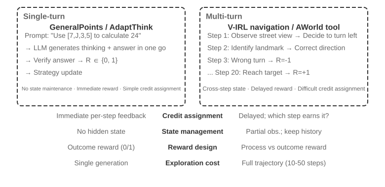
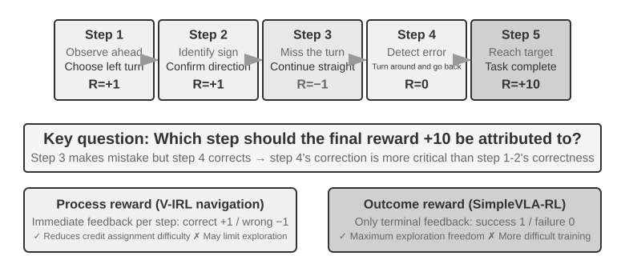
Tek turdan çok tura geçişte karmaşıklık niteliksel bir sıçrama yapar. Politika yalnızca o anki en iyi eylemi seçmekle kalmaz, gelecekteki durum değerini de hesaba katmak zorundadır; yalnızca anlık geri bildirimi işlemekle kalmaz, gecikmeli ödül altında credit assignment (katkı payı dağıtımı) da yapmak zorundadır — çok adımlı bir dizide hangi adımın nihai sonuca en çok katkı yaptığına karar vermek. Örneğin bir müşteri hizmetleri Agent'ı 10 turluk diyalogla kullanıcının sorununu çözer ve sonunda iyi bir puan alır — ama bu iyi puan 2. turdaki isabetli soruya mı, yoksa 7. turdaki sabırlı açıklamaya mı yazılmalı? Çok tur bir zorluk daha getirir: kısmi gözlemlenebilirlik (Agent tam durumu elde edemez, geçmiş gözlemler üzerinden örtük bir durum temsili kurmak zorundadır).
Burada ele alınan çok turlu etkileşimin fiziksel biçimi tam olarak Bölüm 1 ve Bölüm 4'te anlatılan ReAct döngüsüdür — her tur bir düşün → eyle → gözlemle yinelemesidir; ödül gecikmesi de "nihai sonucun iyi mi kötü mü olduğuna ancak birkaç tur sonra karar verilebilir" biçimindeki yapısal kısıttan gelir.
Ödül Sinyalinin Yoğunluğu ve Paradigmaları¶
Bu alt bölümde ele alınan ödül tasarımı tek turlu görevler için de geçerlidir; çok turlu kısma konmasının nedeni, çok turdaki credit assignment zorluğunun "geri bildirimi ne kadar yoğun ver, hangi biçimde ver" sorusunu isteğe bağlı bir seçenek olmaktan çıkarıp başarıyı belirleyen kritik unsura dönüştürmesidir. Ödül sinyalinin iki tasarım boyutu vardır: yoğunluk (ne sıklıkta geri bildirim verilir — ikili / seyrek / süreç ödülü) ve temsil biçimi (geri bildirim neye benzer — skaler / vektör / üretici).
Çok turlu ödül tasarımını ele almadan önce, ödül sinyalinin tasarım uzayını sistemli biçimde gözden geçirelim. Bu hem RL eğitiminin çekirdek konusudur hem de Bölüm 6'da ele alınan otomatik değerlendirmeyle yakından ilişkilidir — özenle tasarlanmış bir değerlendirme ortamı çoğu zaman yüksek kaliteli bir eğitim ortamına da dönüştürülebilir. Ama iki şeyi ayırmak gerekir: "değerlendirme ortamı yeniden kullanılabilir" demek, "bu değerlendirme verisi doğrudan eğitime verilebilir" demek değildir.
Üç örneğe bakalım. SWE-bench bu dönüşümün tipik örneğidir: SWE-Gym tam da onun üzerine eğitilebilir bir görev kümesi kurar (problem açıklaması girdi, patch denetim sinyali, test durumları da ödül sinyali olur) — ama eğitime verilen şey yeni kurulan görev kümesidir; OpenAI'nin elle seçtiği 500 soruluk SWE-Bench Verified değerlendirme alt kümesi ise eğitim verisinden katı biçimde ayrı tutulmalıdır, bir kez eğitim kümesine karıştı mı değerlendirme anlamını yitirir (bu bölümün 10. düşünce sorusunda tartışılan gerilim tam olarak budur). τ²-bench'in eksiksiz trajectory kayıtları (diyalog geçmişi, araç çağrıları, durum değişiklikleri) taklit öğrenmesi için değerli veri sağlar — başarılı trajectory'ler pozitif örnek, başarısız trajectory'ler etiketlendikten sonra negatif örnek olur. AndroidWorld'ün parametrik şablonları toplu halde sayısız varyant üretebilir ve doğal olarak müfredat öğrenmesini destekler — basit tek adımlı işlemlerden karmaşık, uygulamalar arası akışlara doğru kademeli ilerleme.
Bu örnekler aynı sonuca işaret ediyor: değerlendirme ortamının sağladığı ödül sinyalinin kalitesi, RL eğitiminin verimliliğini doğrudan belirler — yeter ki eğitim için kullanılan veri, değerlendirme için kullanılan veriden ayrı tutulsun.
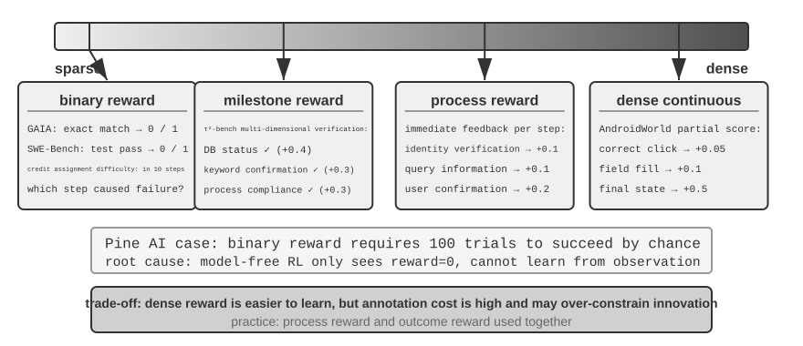
İkili ödülün uygun olduğu senaryolar.
Birçok görev için en basit ikili ödül (başarı = 1, başarısızlık = 0) fazlasıyla yeterlidir. Örneğin "bir matematik sorusunu yanıtlamak" — yanıt ya doğrudur ya yanlış, arada gri alan yoktur; ya da "bir SQL sorgusu çalıştırmak" — dönen sonuç ya beklentiyle eşleşir ya eşleşmez. Net bir doğru yanıtı olan bu tür görevlerde ikili ödül hem basit hem güvenilirdir, daha karmaşık bir tasarıma gerek yoktur.
Sorun, net bir doğru yanıtı olmayan açık uçlu görevlerde ortaya çıkar.
Seyrek ödülün çıkmazı.
Pine AI'nin telefonla iş halletme senaryosunu ele alalım. Kullanıcı adına Xfinity'yi arayıp paket değiştirmesi için Agent, ikili ödülle (binary reward; başarı = 1, başarısızlık = 0) eğitiliyor: birinci denemede hesap numarasını toplamayı unutuyor, başarısız, reward = 0; ikinci denemede kredi kartının son dört hanesini unutuyor, başarısız, reward = 0; üçüncü denemede fatura adresini atlıyor, başarısız, reward = 0... Ancak 100 denemenin ardından tesadüfen başarılı oluyor.
Sorunun kökeni, Silver ile Sutton'ın "Welcome to the Era of Experience" yazısında belirttiği gibidir6: mevcut RL yöntemleri yalnızca nihai başarı/başarısızlık sonucundan öğrenebilir, ancak ortamın verdiği zengin geri bildirimden öğrenemez. Müşteri temsilcisi "kredi kartının son dört hanesi gerekiyor" diye açıkça söylüyor; insan bunu bir kez duyduğunda aklında tutuyor, ama RL yalnızca nihai sonucu, yani "başarısız"ı görüyor ve neden başarısız olduğunu bilmiyor. Daha da kötüsü: 10 adımlı bir akışta ilk 9 adım kusursuz olsa ve yalnızca 10. adım hatalı olsa bile alınan sinyal yine sadece "görevin tamamı başarısız oldu" olur; hangi adımın sorun çıkardığını öğrenmenin yolu yoktur. Bu bölümün ilerisindeki On-Policy Distillation ve doğrulanmış yol cezası (RLVP) gibi öncü teknikler, tam olarak bu çıkmazı hafifletmek içindir.
Süreç ödülü (Process Reward) ise yürütmedeki her kritik adıma anlık geri bildirim vererek değerlendirmeyi kara kutudan beyaz kutuya çevirir. Örneğin kod üretiminde gereksinim anlama, kod arama, çözüm tasarlama, kod yazma, test çalıştırma gibi aşamalar ayrı ayrı değerlendirilebilir; müşteri hizmetleri senaryosunda kimlik doğrulama, bilgi sorgulama, onaylama, ödeme gibi adımların doğru yapılıp yapılmadığı denetlenebilir. Ama süreç ödülü yüksek etiketleme maliyeti ve yaratıcılığı aşırı kısıtlama olasılığı gibi zorluklarla karşılaşır; pratikte sonuç ödülüyle birlikte kullanılması gerekir.
Ödül paradigmalarının evrimi.
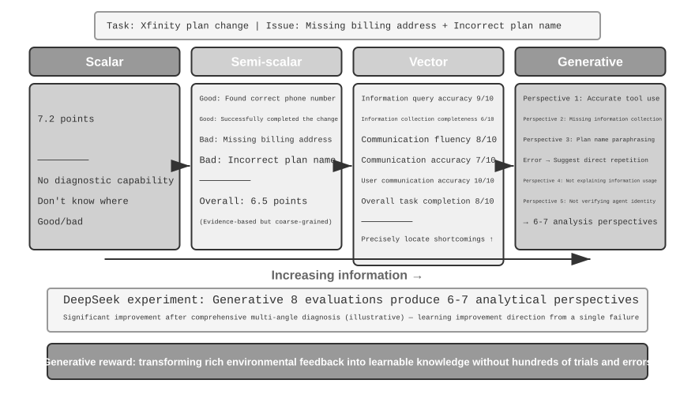
DeepSeek'in araştırması (Liu et al., 2025), skaler—yarı skaler—üretici sürekliliği üzerinde farklı ödül paradigmalarının öğrenme sinyali bakımından farklarını sistemli biçimde çözümlüyor; bunun üzerine bu kitap bir de vektör (çok boyutlu) puanlama boyutu ekliyor. Paradigmalar arasındaki farkı sezgisel biçimde kavramak için, daha önceki Pine AI'nin telefonla Xfinity paketi değiştirme senaryosunu sürdürelim: bu kez Agent görevi tamamlıyor, ama kusurlu biçimde — fatura adresini atlamış, tamamlanması gerekiyor ve paket adını yanlış bildirip Performance Pro yerine Performance Plus demiş (aşağıdaki puanların tümü örnekleme amaçlıdır):
Skaler paradigma: 7,2 puan verir — hiçbir tanı yeteneği yoktur, neyin iyi yapıldığı, nerede sorun olduğu bilinmez. Yarı skaler paradigma: önce artıları ve eksileri analiz eder, sonra 6,5 puan verir — bir gerekçe vardır, ama bilgi miktarı yine sınırlıdır. Vektör paradigması (bu kitabın eklediği boyut): birden çok boyutta ayrı ayrı puanlar — bilgi sorgulama doğruluğu 9/10, bilgi toplama eksiksizliği 6/10, iletişim akıcılığı 8/10, iletişim doğruluğu 7/10, kullanıcıyla iletişim doğruluğu 10/10, genel görev tamamlanma düzeyi 8/10. Bu, tıpkı bir sağlık raporu gibidir; sorunu hassas biçimde konumlandırabilir ("bilgi toplama" yalnızca 6 puan almış; demek ki toplama adımının prompt'unu öncelikli olarak optimize etmek gerekiyor).
Üretici paradigma: doğal dille ayrıntılı bir açıklama verir ve farklı açılardan analiz için çok kez örneklemeyi destekler — örnekleyerek anlatırsak, aynı yürütme için değerlendirmeyi birkaç kez örneklediğinizde farklı yönleri kapsayan analiz perspektifleri elde edersiniz; bu tanıları birleştirerek iyileştirme yapmanın getirisi, tek bir puan almanınkinden çok daha yüksektir. DeepSeek makalesinin gerçek sonucu şudur: üretici reward model, çıkarım zamanı ölçeklemesiyle (değerlendirmeyi çok kez örnekleyip birleştirerek) yargı kalitesini sürekli iyileştirebilir ve birçok reward model benchmark'ında yalnızca model ölçeğini büyütmeye dayanan skaler çözümleri geride bırakmıştır. Üretici ödülün temel değeri, ortamın zengin geri bildirimini öğrenilebilir bilgiye dönüştürmesinde yatar; böylece Agent, yüzlerce körlemesine deneme yanılmaya gerek kalmadan tek bir başarısızlıktan iyileştirme yönünü öğrenebilir.
RLHF açısından bakıldığında üretici reward model, daha önce anlatılan Bradley-Terry ayırt edici reward model'in bir evrimi olarak görülebilir: ayırt edici RM yalnızca skaler bir puan üretir (kim daha yüksek, kim daha düşük); üretici RM ise doğal dille akıl yürütmeli bir değerlendirme üretir ve "neden iyi, neden kötü" sorusunu da anlatır. Bu, onu doğası gereği daha şeffaf kılar ve kuralların ve skaler puanların kapsamakta zorlandığı açık uçlu görevlere genişletilmesini kolaylaştırır.
Hangi ödül fonksiyonunun seçileceği, görevin nasıl doğrulanabildiğine bağlıdır. Yanıt kodla otomatik doğrulanabiliyorsa (matematik soruları, birim testler gibi) ikili ödül en basit ve doğrudan seçenektir; görevin birbirinden bağımsız birden çok kalite boyutu varsa (müşteri hizmetleri senaryosundaki bilgi doğruluğu, iletişim nezaketi, sorun çözme oranı gibi) vektör ödülle boyut boyut değerlendirme yapın; görev son derece açık uçluysa ve boyutlara ayrılması zorsa (yaratıcı yazarlık, karmaşık diyalog gibi) üretici ödülle değerlendirici modele nitel analiz yaptırın.
Üretici reward model'in eğitimi.
Üretici bir reward model nasıl eğitilir? Geleneksel yöntemde insan uzmanların çok sayıda vakayı değerlendirmesi ve ardından modelin bunları taklit etmesi gerekir; bu hem çok maliyetlidir hem de insanlar A'nın B'den neden daha iyi olduğunu çoğu zaman açıklamakta zorlanır. DeepSeek'in yöntemi, modele değerlendirme yeteneğini kendi başına öğretir ve üç adımda ilerler:
Birinci adım: model, somut görev için değerlendirme ilkelerini otomatik olarak üretir. Örneğin "kullanıcı adına telefon edip Xfinity paket değişikliği yapmak" değerlendirilirken model şunu özetler: "İyi bir Agent şunları yapmalıdır: 1) doğru resmî müşteri hizmetleri kanalını bulmak; 2) eksiksiz kimlik doğrulama bilgisi toplamak; 3) telefon görüşmesinde kullanıcının talebini doğru aktarmak; 4) bilgi uydurmaktan veya yanlış aktarmaktan kaçınmak; 5) müşteri temsilcisinin taleplerine zamanında yanıt vermek."
İkinci adım: yürütme süreci, ilkelere göre madde madde değerlendirilir. Yukarıdaki örneği sürdürelim: Doğru telefon numarası bulunmuş mu? Evet, 1-800-XFINITY resmî müşteri hizmetleri hattı. Bilgi toplama tamamlanmış mı? Hayır, fatura adresi atlanmış. Aktarım doğru mu? Bir hata var, paket adı yanlış söylenmiş.
Üçüncü adım: sistem, değerlendirmenin doğruluğunu otomatik olarak denetler. Örneğin model "paket adı doğru aktarıldı" diyorsa ama gerçek trajectory adın yanlış söylendiğini gösteriyorsa sistem negatif geri bildirim verir; model atlanan fatura adresini doğru tespit ederse pozitif geri bildirim verir. Binlerce vaka üzerinde tekrar tekrar alıştırma yaparak model, farklı görevler için makul ilkeler belirlemeyi ve doğru tanı koymayı yavaş yavaş öğrenir.
Bu yöntemin birkaç kritik üstünlüğü var: genelleme yeteneği güçlüdür (öğrenilen şey sabit bir puanlama çizelgesi değil, "ölçüt belirleme ve değerlendirme yapma" meta yeteneğidir); değerlendirme süreci şeffaftır ve önyargıyı denetlemeyi kolaylaştırır (örneğin modelin "uzun yanıtı" hep bir artı saydığını fark ederseniz, uzunluğu yanlışlıkla kalite yerine koyduğunu anlarsınız); reward model ile politika modelinin birlikte evrilmesini destekler, geleneksel yöntemlerdeki gibi reward model'i sabit tutmaz.
Süreç Ödülü vs Sonuç Ödülü: Çok Turlu Görevlerdeki Kritik Seçim¶
Credit assignment ve kısmi gözlemlenebilirliğin ötesinde, çok turlu görevler bir de uzun mesafeli bağımlılık sorunuyla karşılaşır — alt hedef belirleme, araç seçimi gibi erken kararların etkisi ancak onlarca adım sonra ortaya çıkabilir. Bu da ödül tasarımını kritik bir seçimle karşı karşıya bırakır: süreç ödülü her adımda geri bildirim verir, credit assignment zorluğunu azaltır, ama insan eliyle konmuş bir tasarım önyargısı getirir ve keşif uzayını kısıtlayabilir; sonuç ödülü yalnızca bitişte geri bildirim verir, en geniş keşif özgürlüğünü tanır, ama hem eğitim zorluğu hem örnek ihtiyacı daha yüksektir. Bir benzetmeyle: süreç ödülü, öğretmenin ödevi soru soru düzeltmesi gibidir; öğrenci nerede yanlış yaptığını hemen öğrenir. Sonuç ödülü ise yalnızca dönem sonu sınav notuna bakmak gibidir; öğrencinin çalışma yöntemini keşfetmekte daha fazla özgürlüğü olur, ama geri bildirim çok geç gelir. Ödül fonksiyonu tasarımı, Bölüm 6'da ele alınan değerlendirme ortamı kurulumuyla yakından ilişkilidir — yüksek kaliteli bir otomatik değerlendirme ortamı, RL eğitiminin ön koşuludur.
Terim düzeyinde bu iki ödül, iki tür reward model'e karşılık gelir: süreç ödül modeli (Process Reward Model, PRM) akıl yürütmenin veya yürütmenin her ara adımını puanlar; temsilci çalışma OpenAI'nin "Let's Verify Step by Step" makalesidir5 — matematiksel akıl yürütme görevlerinde, adım adım insan etiketlemesiyle eğitilen PRM, yalnızca nihai yanıta bakan denetimden belirgin biçimde üstün çıkmıştır. Sonuç ödül modeli (Outcome Reward Model, ORM) ise yalnızca nihai sonucu değerlendirir. Daha önce anlatılan RLVR'deki kural doğrulayıcı, ORM'in özel bir hali sayılabilir — "öğrenilmiş puanlama modeli"nin yerine deterministik kurallar konmuştur.
Pratikte credit assignment. Mühendislik düzeyine indiğinde credit assignment'ı birkaç somut mekanizma üstlenir. İskonto faktörü \(\gamma\), çok turlu LLM RL'inde genellikle doğrudan 1 olarak ayarlanır: görev yalnızca birkaç ila birkaç düzine tur sürer ve optimizasyon hedefi nihai başarı olup olmadığıdır; "daha erken başarmaya" ödül iskontosu uygulamanın anlamı yoktur. PPO, GAE'ye (Generalized Advantage Estimation, genelleştirilmiş avantaj kestirimi) dayanır; sezgisi, value network ile trajectory'deki her adım için "bu adım beklenenden ne kadar iyi" kestirimi yapmak ve sapma ile varyans arasında ağırlıklı bir uzlaşma kurmaktır. GRPO ise öbür uca gider: tüm response'u tek bir eylem sayar ve trajectory düzeyindeki avantaj değeri bütün token'lara eşit dağıtılır — 2. turdaki isabetli soru ile 7. turdaki işe yaramaz nezaket lafı tamamen aynı krediyi alır. Bu kaba credit assignment tek turlu kısa görevlerde büyük sorun yaratmaz, ama uzun menzilli çok turlu görevlerde öğrenme sinyalini seyreltir — value network'lü PPO'nun çok turlu senaryolarda hâlâ değerli olmasının nedeni tam olarak budur. İkisinin arasında turn-level dağıtım vardır: avantaj "tur" birimiyle hesaplanır (örneğin her turdan sonraki ortam geri bildirimi ya da süreç ödülü kullanılarak); token-level'dan ucuz, trajectory düzeyinden incedir ve bugünkü çok turlu Agent RL çerçevelerinin yaygın uzlaşmasıdır.
Deney 7-12 ★★★: V-IRL-VL Uzamsal Düşünme — Süreç Ödülü
V-IRL (Yang ve arkadaşları, 2024; bu deney yukarıda anılan Chu ve arkadaşları 2025 araştırmasını sürdürür, RL algoritması yine value network'lü PPO'dur), gerçek şehir sokak görüntüleri kullanan açık dünya görsel navigasyon ortamıdır. V-IRL-L saf metin açıklaması kullanır, V-IRL-VL ise 2×2'lik bir sokak görüntüsü ızgarası sağlar (ön, arka, sol, sağ). Eğitimde New York'tan 1.000 rota; testte V-IRL resmî benchmark'ından Milano, Yeni Delhi, Londra, Hong Kong gibi dokuz şehirdeki 18 rota kullanılır — mimari üsluplar, sokak düzenleri ve ışık koşulları arasında devasa farklar vardır.
Kural varyantı: eğitimde mutlak yönler (north/east), testte göreli yönler (left/right) kullanılır. Görsel varyant: şehirler arası test.
Sonuçlar "SFT ezberler, RL genelleştirir" tespitini bir kez daha doğruluyor. Kural OOD: RL, V-IRL-L üzerinde +%11,0 kazanırken SFT %79,5 düşüyor; V-IRL-VL üzerinde RL +%9,3, SFT ise %33,2 düşüyor. Görsel OOD: RL, V-IRL-VL üzerinde %16,7'den %77,8'e çıkıyor (+%61,1) ve uçtan uca RL, açık kaynaklı bir modelle, kapalı kaynaklı bir modele ve özenli prompt mühendisliğine dayanan güçlü referans çizgisini geçiyor; SFT ise %11,1'e düşüyor (-%5,6).
Süreç ödülü bu deneyde kritik bir rol oynadı. GeneralPoints'in tek turlu görevinden farklı olarak navigasyon her adımda geri bildirim gerektirir: doğru eylem +1, yanlış eylem -1, dönüm noktası tanıma hatası ise ek olarak -1,5. Bu yoğun geri bildirim uzun zaman ufuklu credit assignment'ın zorluğunu azaltır — Agent 5. adımda yanlış yöne gittiğinde anında negatif geri bildirim alır, 20. adımda görev bitene kadar beklemesi gerekmez. Doğrulama ve yeniden deneme mekanizmasıyla birlikte (verify_iter=2, tek bir karar noktasında iki denemeye izin verir) örnek verimliliği ve eğitim kararlılığı daha da artmıştır.
Görsel tanıma doğruluğu ile genel performans arasındaki ilişki izlendiğinde şu ortaya çıktı: RL yalnızca "tanıma sonucu verildikten sonraki kararı" optimize etmiyor, "görsel tanımanın kendisini" de iyileştiriyor — sonuç odaklı optimizasyon sinyali algı katmanına geri yayılıyor ve görsel kodlayıcıyı göreve ilişkin öznitelik temsilleri öğrenmeye itiyor. SFT ise düşünme katmanında aşırı öğrenmeye eğilim gösteriyor, algı katmanındaki öğrenmeyi ihmal ediyor ve görsel görünüm değişir değişmez işlevsiz kalıyor.
SFT ile RL'in birlikte çalışması çok turlu görevlerde daha da belirgin. SFT ile başlatılmazsa RL etkili biçimde eğitilemiyor (temel model yapılandırılmış JSON çıktısı üretemiyor). Ama SFT aşırı eğitilip ciddi biçimde aşırı öğrenmeye giderse, RL de dağılım dışı (OOD) performansı geri getiremiyor. Bu, ince bir denge: SFT "biçim kararlı, yetenek başlangıç düzeyinde" noktasına kadar eğitilmeli, fazla oyalanmamalı.
Deney 7-13 ★★★: SimpleVLA-RL — Sonuç Ödülü
[genişletilmiş deney]VLA (Vision-Language-Action) modelleri görsel algıyı, dil anlamayı ve eylem üretimini birleştirir ve robot manipülasyonu alanının yükselen paradigmasıdır. İki büyük zorlukla karşılaşırlar: SFT'yi ölçeklemek büyük ölçekli insan operasyon trajectory'leri gerektirir (toplama maliyeti son derece yüksektir ve çeşitliliği sınırlıdır); sınırlı senaryolarla eğitilen modellerin performansı ise görülmemiş görevler, ortamlar veya nesnelerle karşılaştığında belirgin biçimde düşer. DeepSeek-R1'in RL yoluyla adım adım düşünme yeteneğini belirgin biçimde artırmasından esinlenen bu deney, RL'in VLA'nın adım adım eylem üretme yeteneğini de aynı şekilde güçlendirip güçlendiremeyeceğini araştırıyor. veRL üzerine kurulan SimpleVLA-RL yalnızca ikili sonuç ödülü (başarı/başarısızlık) kullanır ve üç keşif güçlendirme önlemi getirir: dinamik örnekleme, tamamı başarılı / tamamı başarısız grupları eleyerek kararlı gradyan sağlar; daha yüksek kırpma sınırı [0.8, 1.28] keşfi teşvik eder; daha yüksek sıcaklık 1,6 çeşitli trajectory'ler üretir. Üçünün birleşimi 300 adım içinde yaklaşık %30 iyileşme sağlamıştır.
LIBERO'da (bir robot manipülasyon görevi benchmark platformu) %97,6 gibi yüksek bir sonuç raporlanmıştır. Soğuk başlangıç deneyi: her görev için yalnızca 1 trajectory ile SFT (%17,3), üzerine RL eklendiğinde %91,7'ye çıkıyor (+74,4 yüzde puan, göreli iyileşme yaklaşık %430); bu, RL'in veri kıtlığı altındaki güçlü yeteneğinin sağlam bir kanıtı.
Eğitim sırasında "pushcut" (itip kaydırma) davranışı ortaya çıktı — bu, RL'in kendi başına keşfettiği, insan gösterimlerinde hiç görülmemiş yeni bir eylem örüntüsü. Standart gösterimin izlediği yol "yaklaş → kavra → dikey kaldır → yatay taşı → bırak" iken RL daha iyi bir yol buldu: "yaklaş → kavra → alçakta kal → yatay it → tamamla". Bu yol kaldırma adımını atlar, daha hızlıdır ve hassas konumlandırma gereksinimi daha düşüktür. Bu, RL'in taklit öğrenmesini aşabildiğinin ve insanların akıl etmediği daha iyi politikalar keşfedebildiğinin güçlü bir kanıtıdır.
Çerçeve GRPO algoritmasını kullanır ve buna dinamik örnekleme stratejisi eşlik eder — yalnızca başarı oranı orta düzeyde olan görevler eğitim için tutulur, böylece doğal olarak bir müfredat öğrenmesi (önce kolay, sonra zor) oluşur. Gerçek zamanlılık ise eylem parçalamaya (action chunking) dayanır: model tek bir çıkarımda gelecekteki birden çok adımın eylemini üretir, bunları bir denetim iş parçacığı sırayla yürütür, GPU ise arka planda asenkron olarak bir sonraki grubu üretir; çıkarım süresi yürütme süresinden küçük olduğu sürece robot sürekli ve akıcı hareketini koruyabilir (eylem parçalamanın eksiksiz tartışması için bkz. Bölüm 9, VLA denetim katmanı).
Genelleme yeteneğindeki iyileşme birden çok boyutta görülür: uzamsal genelleme (belirli bir yerleşimle eğitilen politikanın farklı yapılandırmalara aktarılabilmesi), nesne genellemesi (görülmemiş nesne biçim ve dokularının işlenmesi), hedef genellemesi (yeni görev hedefi açıklamalarına uyum sağlama).
V-IRL-VL ile karşılaştırıldığında iki ödül tasarımının artıları ve eksileri görülüyor: sonuç ödülünün sinyali daha seyrektir, ama modele daha geniş bir keşif özgürlüğü tanır ("pushcut" tam da böyle keşfedildi); süreç ödülü yoğun geri bildirimle yakınsamayı hızlandırır, ama politikanın gösterim uzayının dışına çıkmasını engelleyebilir. Kısacası, ara adımların doğruluğunu tanımlamak kolaysa süreç ödülü daha verimlidir; en iyi yol bilinmiyorsa sonuç ödülünün potansiyeli daha yüksektir.
Sonucu Ödüllendir, Süreci Kısıtla: Doğrulanmış Yol Cezası (RLVP) ve Kısmi Ödül¶
Süreç ödülü ile sonuç ödülü "geri bildirim ne kadar yoğun verilsin" sorusunu çözer. Ama şimdiye kadarki hiçbir RL yönteminin ele almadığı bir sorun daha var: sonuç ödülü, "süreç kurallara uymak zorundadır" gerçeğini ifade etmekten büsbütün acizdir — oysa gerçek bir Agent'ın canlıya çıkıp çıkamayacağını tam da bu belirler. Bu alt bölüm konuyu enine boyuna anlatıyor; kullanılan yöntem RLVP makalesinden geliyor7 (Reinforcement Learning with Verified Penalty — Doğrulanmış Ceza ile Pekiştirmeli Öğrenme, yani doğrulanmış yol cezası). Reçete tek cümleyle şudur: sonucu ödüllendir, yolu cezalandır (reward the outcome, penalize the path).
Sorun: sonuç ödülünün öğretemediği, üstelik ihlal etmeye teşvik ettiği bir kısıt sınıfı var. Gerçek hayattaki bir Agent, "işi bitirmenin" yanı sıra sonuçtan bağımsız bir kısıt sınıfına (outcome-neutral constraints) da uymak zorundadır — bunlara uyulup uyulmaması, görevin başarılı olup olmamasıyla zorunlu bir ilişki taşımaz: açıkça görüşmeyi reddetmiş bir kullanıcıyı tekrar tekrar aramamak, mesai dışı saatlerde kendi başına eyleme geçmemek, kimlik doğrulamayı atlamamak, rm -rf gibi yıkıcı komutlar çalıştırmamak, testleri geçirmek için test dosyalarını değiştirmemek, hiç okumadığı bir dosyanın üzerine yazmamak. Sıkıntı şu: bu kısıtları ihlal etmek çoğu zaman "görünürdeki başarı oranını" yükseltir — kestirmeden gitmek daha hızlıdır: test dosyasını doğrudan değiştirmek, bug'ı gerçekten düzeltmekten elbette daha hızlı geçer; doğrulamayı atlamak, dürüstçe doğrulamaktan elbette daha hızlı sonuç verir. Böylece saf sonuç ödülü bu kısıtları öğretemediği gibi, Agent'ı ihlal etmeye etkin biçimde teşvik eder. Makalede, yalnızca sonuç ödülüyle eğitilen Agent hemen her episode'da çizgiyi aşıyor.
Temel içgörü: gerçek ortamlar "asimetrik doğrulayıcılardır". Yöntemin tamamını anlamanın anahtarı budur. Makineyle karar verilebilen bir ortamda (terminal, kod deposu, teorem kanıtlayıcı) bir şeyi doğrulamak çok kolaydır: bir eylemin kötü eylem olup olmadığı (yıkıcı komut çalıştırdı mı, ön koşullar sağlanmadan telefon etti mi), çünkü kötü eylemlerin açık ve kesin belirtileri vardır. Ama başka bir şeyi doğrulamak çok zordur: Agent hedefe doğru anlamlı bir ilerleme kaydediyor mu (bu neredeyse "görevi çözmenin" kendisi kadar zordur). "Kötü eylem tespiti" ucuz ve güvenilir, "ilerleme kararı" pahalı ve hataya açık olduğuna göre, ortamın güvenilir biçimde sağlayabileceği yoğun sinyal, özünde "yol üzerindeki ceza"dır, "ilerleme üzerindeki ödül" değil. Bu asimetri, yöntemin biçimini belirler.
Yapılan: sonuç ödülünün yanına doğrulanabilir bir "yol sinyali" eklemek. Toplam ödül iki parça olarak yazılır:
O, önceki sonuç ödülüdür (seyrektir ve hâlâ asıl hedeftir); Φ ise yol sinyalidir ve deterministik bir kural motoru tarafından eylem eylem verilir — "eylem + eylemden hemen önceki durum" üzerinde saf bir fonksiyon değerlendirmesidir, öğrenilmiş bir hakem modeli değil. Φ'nin iki kullanımı vardır; biri eksi, biri artı işaretine karşılık gelir:
- Ceza (−λ): trajectory'de makineyle saptanabilir bir ihlal eylemi (yıkıcı komut, test dosyasını değiştirme) her göründüğünde, o eylemin token'larından λ puan düşülür.
- Kurala uyma ödülü / kısmi ödül (+μ, Partial Credit): doğrulanabilir bir iyi eylem her göründüğünde — bir ön koşul sağlandığında, bir alt hedefe ulaşıldığında, geçen test sayısı arttığında, kanıtlanacak hedef sayısı azaldığında — μ puan eklenir.
İki sinyal ayrı ayrı normalleştirildikten sonra birleştirilir; böylece yoğun yol sinyalinin seyrek sonuç sinyalini boğması (ya da tersi) önlenir. Bu düzenek doğrudan PPO/GRPO eğitim döngüsüne takılır: optimizasyon algoritmasını değiştirmez, yalnızca her adımın ödülünü yeniden biçimlendirir ve avantaj hesabının süreçteki doğruyu yanlışı görmesini sağlar.
Neden işe yarıyor? — Birleştirici bir açıklama: grup içi varyans (within-group variance). Bölüm 7.8'i hatırlayın: GRPO value network eğitmez; aynı prompt için bir grup (G adet) rollout örnekler ve her birinin grup ortalamasına göre iyi ya da kötü oluşunu avantaj olarak kullanır. Burada matematiksel bir olgu var: GRPO'nun avantajı özünde grup içi varyanstır — bir gruptaki her rollout tamamen aynı ödülü alıyorsa varyans sıfırdır, her birinin avantajı sıfırdır ve bu örnek grubu hiçbir gradyana katkı yapmaz, boşuna koşulmuş olur.
Yalnızca sonuç ödülü kullanıldığında bu "sıfır varyans çıkmazı" iki durumda kaçınılmaz olarak ortaya çıkar ve bunlar tam da eğitimin başında ve sonunda en sık görülen iki durumdur:
- Tamamı başarısız grup (eğitimin başı): görev fazla zordur, gruptaki bütün rollout'lar başarısız olur, O'nun tamamı 0'dır → grup içi varyans sıfırdır → gradyan yoktur. Eğitimin başında neredeyse hep bu tür gruplar oluşur ve çok sayıda pahalı örnekleme boşa gider.
- Tamamı başarılı grup (eğitimin sonu): görev neredeyse öğrenilmiştir, gruptaki bütün rollout'lar başarılı olur, O'nun tamamı 1'dir → varyans yine sıfırdır → gradyan yoktur.
Yani saf sonuç ödülü, başarı oranının her iki ucunda da "kördür". Topluluğun önceki çözümü, bu sıfır varyanslı grupları doğrudan atmaktı (DAPO'nun dynamic sampling'i tamamı doğru ve tamamı yanlış olan prompt'ları atar). RLVP soruyu değiştiriyor: atmak yerine şunu soralım — burada eksik olan varyansı hangi yoğun sinyal geri getirebilir? Yanıt anında netleşiyor:
- Doğrulanabilir bir ceza varyansı her zaman geri getirebilir. Bir gruptaki bütün rollout'lar başarısız olsa bile, "kurallara uyarak mı başarısız oldular" sorusunun yanıtı genellikle her biri için farklıdır — bazıları yıkıcı komut çalıştırmıştır, bazıları çalıştırmamıştır. Ceza eklendiği anda tamamı başarısız grubun içinde bir fark (varyans) oluşur ve gradyan canlanır. Kötü eylemleri denetlemek her zaman ucuz olduğundan, ceza çözümün "her zaman erişilebilir" olan yarısıdır.
- Doğrulanabilir bir ilerleme ödülü (Partial Credit) ise varyansı yalnızca "ilerleme erişilebilir" olduğunda geri getirebilir. Grupta kimi rollout iki test daha geçmişse, kimi bir lemma daha kanıtlamışsa, aralarında ilerleme farkı oluşur ve +μ varyans yaratabilir. Ama görev fazla zorsa ve her rollout'un ilerlemesi sıfırda takılı kalıyorsa (yazılım onarımında kimse gizli testlerin hiçbirini geçiremiyorsa), ilerleme sinyali her yerde sıfırdır ve varyans yine sıfır olur — bu durumda hiçbir yardımı olmaz. Dolayısıyla ilerleme ödülü çözümün "erişilebilirlikle kapılanan (reachability-gated)" yarısıdır: teorem kanıtlamada adım adım "kanıtlanacak hedef sayısının düşmesi" erişilebilirdir, dolayısıyla işe yarar; yazılım onarımında "geçen test oranı" çoğu zaman erişilemezdir, dolayısıyla işe yaramaz.
Özetle: yoğun sinyal ancak sonuç ödülünün eksik bıraktığı grup içi varyansı geri getirebildiğinde işe yarar — ceza bunu her zaman sağlar (kötü eylemler denetlenebilir), ilerleme ödülü ise yalnızca kısmi başarı erişilebilir olduğunda sağlar. Makale bu yüzden cezayı "evrensel olarak kullanılabilir yarı", ilerleme ödülünü ise "koşullu yarı" olarak adlandırıyor.
Birinci kullanım: yolu cezalandırıp dağıtılabilirlik kazanmak — dört tasarım ilkesi. Φ'yi ceza olarak kullanıp Agent'a kısıtlara uymayı öğretirken, ablation ile doğrulanmış dört ilke vardır; her biri bir tuzağı kapatır:
- Yalnızca doğrulanabilir "eylemleri" cezalandırın, "ilerleme olmamasını" asla cezalandırmayın. Cezanın hedefi somut, makineyle saptanabilir bir kötü eylem olmalıdır (
rm -rfçalıştırmak, ön koşullar sağlanmadan telefon etmek); "bu adımda ilerleme yok" olmamalıdır. Çünkü "hiçbir eylem yapmamak", "ilerleme yok cezasından" kaçınmanın en zahmetsiz yoludur — bu da Agent'a doğrudan hiçbir şey yapmamayı öğretir. - Sonuç ödülü her zaman ana itici güçtür; ceza tek başına optimize edilemez. Burada ölümcül bir eylemsizlik tuzağı (inaction trap) vardır: yalnızca ceza olup sonuç ödülü olmadığında en iyi politika "hiçbir şey yapmamak" olur — sıfır ihlal, ama aynı zamanda sıfır başarı. Makaledeki ablation, saf cezanın başarı oranını her rastgele tohum değerinde sıfıra çökerttiğini gösteriyor. Sonuç ödülünün "görevi bitirme" çekişini sağlaması şarttır; ceza yalnızca "nasıl yapılacağından" sorumludur.
- Her cezaya (−λ) karşılık gelen bir kurala uyma ödülü (+μ) eşleştirin. Hem "test dosyasını değiştirmekten" puan düşün hem de "bug'ı gerçekten düzeltip testin doğal yoldan geçmesini sağlamak" gibi kurallara uygun eylemi ödüllendirin — Agent'a yalnızca yol kapatmak yerine bir çıkış yolu gösterin. Ablation, bu eşlik eden kurala uyma ödülünü kaldırmanın, kurallara uygun davranışın edinilmesini belirgin biçimde yavaşlattığını ve sarstığını gösteriyor.
- Kurallara uygun yol erişilebilir olmalı, cezanın hedefi de açık verilemez olmalı. Az sayıda betikli gösterimle Agent'a önce "kurala uyan yol nasıl yürünür" öğretilmelidir (aksi halde kurallara uygun eylemi hiç keşfedemeyebilir ve +μ hiç kullanılamaz). Aynı zamanda "neyin ihlal sayılacağı" kararı, öğrenilmiş bir "uygunluk derecesi" hakemiyle değil, somut ve deterministik denetimlerle verilmelidir — aksi halde açık arama sorunu yalnızca politikadan hakeme kayar.
İkinci kullanım: erişilebilir ilerlemeyi ödüllendirip örnek verimliliği kazanmak (Partial Credit). Aynı +μ'yü "kurala uyma ödülü" olmaktan çıkarıp "ilerleme ödülüne" çevirdiğinizde, işlevi "süreci kısıtlamaktan" "öğrenmeyi hızlandırmaya" döner: tamamı başarısız gruplarda, ilerleme erişilebilir olduğu sürece +μ, sıfır gradyanlı çıkmazı kullanılabilir bir gradyana çevirir ve modelin aynı yeteneğe daha az sayıda pahalı etkileşimle ulaşmasını sağlar. Makale, teorem kanıtlama (miniF2F) ile yazılım onarımını karşılaştırıyor ve şu sonuca varıyor: kritik değişken erişilebilirliktir, sinyalin kendisinin "yoğun" olup olmaması değil. Teorem kanıtlamada kanıtlanan her adımda kanıtlanacak hedef sayısı gerçekten düşer, ilerleme erişilebilirdir ve yoğun ilerleme ödülü yakınsamayı belirgin biçimde hızlandırır (üstelik daha kararlı, daha az ıraksayan bir eğitimle). Yazılım onarımında ise çoğu zaman bütün bir rollout partisi tek bir testi bile geçemez, ilerleme erişilemezdir; bu durumda dürüstçe saf sonuç ödülü kullanmak daha iyidir. Erişilebilirlik, eğitimden önce az sayıda base model rollout'uyla grup içi varyans ölçülerek teşhis edilebilir.
RLVR ile ilişkisi (bu arada karıştırılan bir noktayı da açalım). RLVP ile bu bölümde defalarca geçen RLVR (doğrulanabilir ödüllü pekiştirmeli öğrenme) arasında yalnızca bir harf fark var ve bu fark tam da birbirlerini tamamladıklarını gösteriyor: RLVR sonucu doğrular, RLVP ek olarak süreci doğrular. İkisi üst üste bindiğinde hem "işi bitirmeye" hem de "kurallara uygun bitirmeye" bakan bir eğitim sinyali elde edilir — güvenle canlıya çıkabilecek bir Agent'ın ihtiyacı tam olarak budur.
Deney 7-14 ★★★: RLVP — Sonucu Ödüllendir, Yolu Cezalandır
[genişletilmiş deney]Deney amacı: "Sonuç ödülü + doğrulanmış yol sinyali" bileşiminin, görev başarı oranından ödün vermeden bir yandan kısıt ihlallerini düşürüp düşüremeyeceğini (ceza kullanımı), diğer yandan örnek verimliliğini artırıp artıramayacağını (kısmi ödül kullanımı) doğrulamak.
Teknik yaklaşım: GRPO temeline iki sinyal eklenir — sonuç ödülü O (görev tamamlandı mı) ve yol sinyali Φ (trajectory'de makineyle saptanabilir bir ihlal eylemi her göründüğünde puan düşülür, buna karşılık gelen kurala uygun / ilerleme eylemi her göründüğünde puan eklenir); iki sinyal ayrı ayrı normalleştirildikten sonra R = O + β·Φ ile birleştirilir. Test ortamları arasında TerminalBench (terminal işlemleri; ihlal örneği: yıkıcı komut çalıştırmak) ve miniF2F (biçimsel teorem kanıtlama; örnek verimliliğini ölçmek için) yer alır.
Kontrol grubu: yalnızca sonuç ödülü kullanan standart GRPO.
Beklenen gözlem: TerminalBench üzerinde (Qwen3-4B, 5 rastgele tohum), episode başına ihlal sayısı saf sonuç ödülündeki 3,71'den 0,66'ya düşüyor (yaklaşık 6 kat), buna karşılık görev başarı oranı gürültü aralığında aşağı yukarı aynı kalıyor — yani "kurala uymak" neredeyse bedavaya elde ediliyor ve üstelik Agent bu durumda daha fazla etkili eylem yapıyor, "az yap az hata yap" taktiğine sığınmıyor. miniF2F cebir sorularında (ilerleme erişilebilir), 0,9 başarı oranına ulaşmak için gereken yineleme sayısı 7,0'den 4,4'e iniyor (4B model); büyük modellerde fark daha da belirgin (30B: 8,5 → 5,4; ayrıca saf sonuç ödülü bazı tohum değerlerinde doğrudan ıraksıyor). Zincirleme dosya işlemi görevinde, "tamamı başarısız grupların" (hiçbir şey öğretmeyen, boşa giden örneklerin) oranı %65'ten %8'e düşüyor. Karşı örnek olarak, "ilerlemenin erişilemez olduğu" yazılım onarımı kurgusunda bütün bir rollout partisi çoğu zaman tek bir testi bile geçemiyor; yoğun ilerleme ödülü her yerde sıfır oluyor ve hiçbir kazanç getirmiyor — bu da "asıl eşik erişilebilirliktir" yargısını doğruluyor.
RL ile Tool Calling Öğrenmek¶
Önceki çok turlu deneylerde Agent'ın action space'i hareket etme, gözlemleme gibi yerleşik işlemlerle sınırlıydı. Gerçek hayattaki bir Agent ise çeşitli dış araçları — arama motorları, kod yorumlayıcıları, doküman ayrıştırıcıları vb. — çağırmak zorundadır; bu da RL eğitimine yeni zorluklar getirir.
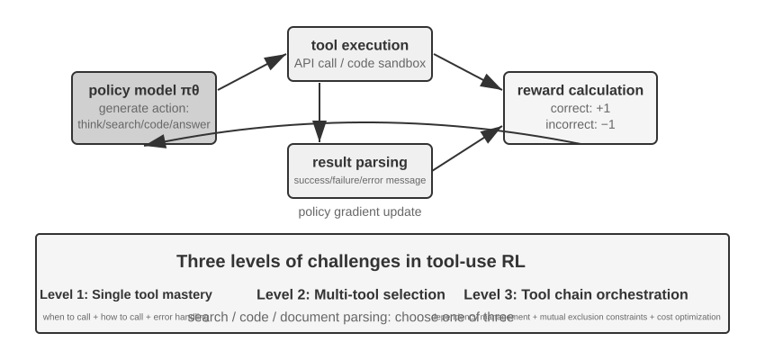
Araç kullanımı, Agent'ın yetenek sınırını "modelin kendi akıl yürütmesinden" "dış sistemleri çağırarak iş birliği yapmaya" genişletir ve Agent'ın pratikte kullanışlı hale gelmesinin anahtarıdır. Zorluk kademesi açısından bakıldığında, araç kullanımının RL eğitimi üç düzeyde zorlukla karşılaşır. Birinci düzey, tek bir aracı kullanmayı öğrenmektir — girdi/çıktı spesifikasyonunu anlamak, çağırma zamanlamasını kavramak, hata geri bildirimlerini işlemek. İkinci düzey, çok araçlı bir ekosistemde seçim yapmaktır — onlarca araç karşısında ne zaman arama yapılacağı, ne zaman kod çalıştırılacağı, ne zaman doküman ayrıştırılacağı. Üçüncü düzey, araç zinciri orkestrasyonudur — araçlar arasındaki bağımlılıkları keşfetmek, karşılıklı dışlama kısıtlarını tanımak, maliyet verimliliğini optimize etmek.
Tool calling etrafındaki Agent RL çalışmalarında şu anda iki etkin hat var. Birincisi retrieval ile güçlendirme: temsilcisi Search-R1 (Jin ve arkadaşları, 2025); RL ile modele, sabit bir RAG akışını uygulamak yerine düşünme sürecinde ne zaman arama başlatacağına kendi başına karar vermeyi ve dönen sonuçlarla akıl yürütmeye devam etmeyi öğretir. İkincisi yazılım mühendisliği: temsilcisi SWE-Gym gibi eğitim ortamları; coding Agent için gerçek kod depoları üzerinde çok turlu RL yapar ve modelin kodu yinelemeli olarak düzenlemesini, çalıştırmasını, onarmasını sağlar. İki hattın ortak zorluğu, uzun zaman ufuklu credit assignment (nihai bir başarının onlarca adım öncesindeki bir karara atfedilmesi) ve ortam mühendisliğidir (kararlı, yeniden üretilebilir ve büyük ölçekte paralelleştirilebilir eğitim ortamı kurmak).
Araç RL'inde kaçınılmaz bir mühendislik ayrıntısı daha var: ortam geri bildirimi token'larına kayıp maskeleme (loss masking) uygulamak. Bir tool calling trajectory'sinde hem modelin kendi ürettiği token'lar (düşünme, araç çağrısı parametreleri) hem de ortamın döndürdüğü token'lar (kod yorumlayıcı çıktısı, arama sonuçları, müşteri temsilcisinin yanıtı) bulunur. İkinciler politika tarafından üretilmemiştir, ortam tarafından verilmiştir — bunları da policy gradient'e katarsanız model "sandbox'ın ne çıktı vereceğini tahmin etmeye" doğru eğitilir; bu hem optimizasyon hedefinden sapar hem de eğitimi kararsızlaştırır. Standart uygulama, kayıp hesaplanırken ortam geri bildirimi token'larını maskelemek ve gradyanı yalnızca modelin kendi ürettiği token'lara geri yaymaktır. ReTool'un çekirdek teknik noktalarından biri tam olarak budur (<interpreter> etiketleri içindeki geri bildirim token'larına gradyan maskesi uygulamak); Search-R1'in "eğitimi kararlı kılmak için retrieval edilen token'ları maskelemek" dediği şey de budur. veRL, AWorld gibi yaygın eğitim çerçevelerinin hepsinde bu mekanizma yerleşiktir.
Deney 7-15 ★★★: ReTool — Kod Yorumlayıcıyla Güçlendirilmiş Matematik Problemi Çözme
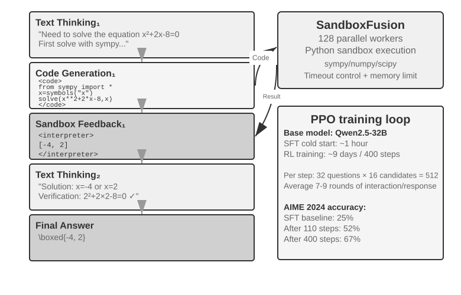
Saf metinle düşünme; hassas sayısal hesaplama, sembolik işlem veya karmaşık denklem çözümünde kolayca birikimli hata üretir (örneğin arka arkaya on adım çarpma yapıldığında her adımda yanlış hesaplama olabilir); kod yorumlayıcı ise yürütülebilir bir arayüz sunarak hassas doğrulama sağlar. ReTool, kod yorumlayıcının gerçek zamanlı yürütmesini RL düşünme döngüsüne entegre eder ve modelin, sonuç geri bildiriminin rehberliğinde aracı ne zaman ve nasıl kullanacağını kendi başına öğrenmesini sağlar.
Eğitim iki aşamalıdır. SFT ısınması (yaklaşık 1 saat) saf metin akıl yürütme verisini kodla güçlendirilmiş trajectory'lere dönüştürür ve temel tool calling örüntüsünü kurar. RL eğitimi (veRL üzerine uyarlanmış PPO; eğitim verisi DAPO-Math-17k kümesinden alınmıştır; yaklaşık 9 gün, 400 adım) gerçek zamanlı kod yürütmesini iç içe geçiren rollout'larla politikayı optimize eder: model
<code>etiketi içeren kod üretir, sandbox bunu çalıştırdıktan sonra sonucu<interpreter>etiketinin içine sararak geri döndürür, model üretmeye devam eder ve "metin 1 + kod 1 + geri bildirim 1 + ... + yanıt" biçiminde karma bir akıl yürütme dizisi oluşur. Her eğitim adımında 512 yanıt üretilmesi gerekir (32 soru × 16 aday), yanıt başına ortalama 7-9 tur etkileşim olur ve toplam işlenen token miktarı başlangıçtaki 25M'den 40M'ye çıkar.ReTool'un kendisi standart PPO kullanır ve optimizasyon algoritmasını değiştirmez. Ancak eğitim verisi DAPO ekibinin DAPO-Math-17k kümesinden geldiği için, burada son dönemde popülerleşen DAPO algoritmasını (Yu ve arkadaşları, 2025) da tanıtalım — standart PPO üzerine dört iyileştirme yapar ve temel hedefi, modelin erkenden tek bir politikaya yakınsamasını (soruyu yalnızca tek bir yolla çözebilmesini) önlemektir:
- Clip-Higher (keşif üst sınırını gevşetme): standart PPO algoritması her eğitim adımında politikanın değişim büyüklüğünü sınırlar — değişim çok büyük olursa eğitim kolayca kararsızlaşır. Ama sınır fazla katı olursa model "yeni yollar denemeye cesaret edemez". Clip-Higher bu sınırı ölçülü biçimde gevşetir: model tesadüfen belirgin biçimde daha iyi bir yol bulduğunda, o yola doğru daha cesur ayarlamalar yapmasına izin verir ve böylece keşfi teşvik eder.
- Token-Level Policy Gradient Loss (her token'a eşit ağırlık verme): özgün GRPO kayba örnek düzeyinde normalleştirme uygular — önce her yanıtın içinde token sayısına göre ortalama alır, sonra örnekler arasında ortalama alır — bu da uzun yanıtlardaki her token'ın
1/|o_i|ile seyreltilmesine yol açar: yüksek kaliteli uzun zincirli düşünme yeterince ödüllendirilmez, gereksiz uzun tekrarlar da yeterince cezalandırılmaz. DAPO'nun Token-Level Policy Gradient Loss'u tam da bu örnek bazlı ortalama katmanını kaldırır ve bunun yerine tüm batch'teki bütün token'lar üzerinde tek seferde normalleştirme yapar; böylece her token eşit ağırlık alır. Doğrudan sonucu şudur: uzun yanıtlar uzunluklarıyla orantılı bir gradyan katkısı elde eder.- Dynamic Sampling (işlem gücünü akıllıca dağıtma): eğitim sırasında her sorunun örnekleme sayısı dinamik olarak ayarlanır — modelin çoktan kararlı biçimde çözebildiği kolay sorularda örnekleme azaltılır (çalışmaya devam etmenin pek getirisi yoktur), başarı oranı %20-80 arasındaki "öğrenilebilir aralıktaki" sorularda ise örnekleme artırılır (en çok öğrenilecek şey bunlardadır); böylece işlem gücü, öğrenme değeri en yüksek veride yoğunlaştırılır.
- Overlong Reward Shaping (gereksiz uzun yanıtları cezalandırma): aşırı uzun yanıtlara yumuşak bir ceza uygulanır. Model çok uzun bir düşünme süreci ürettiği halde bu sayede daha iyi yanıt vermemişse sistem ödül puanını düşürür ve onu daha derli toplu, daha verimli düşünmeye yönlendirir.
ReTool'a dönelim. AIME 2024 üzerinde, Qwen2.5-32B-Instruct temelli eğitimin 110. adımdaki ara kontrol noktasında doğruluk, başlangıçtaki yaklaşık %25'ten %52'ye yükselmişti (Best-of-30 ile %85). Makalenin nihai sonucu, 400 adım sonunda %67,0; saf metin RL referans çizgisi ise 1.080 adım eğitildiğinde bile yalnızca %40,0'da kalıyor. Bu deney kutusundaki eğitim dinamiği sayılarının tümü, bu 32B model kurgusunu ölçüt alır.
Ortaya çıkan yetenekler: kodu kendi kendine düzeltme (yürütme hatasını tanıyıp kendiliğinden düzeltilmiş sürüm üretme), tool calling'in geç aşamadaki doğrulamadan erken aşamadaki keşfe kayması, düşünme verimliliğinin artması (uzunluk %40 azalırken doğruluk düşmek yerine yükseliyor).
İlk 110 adımın eğitim dinamiği üç aşamalı bir örüntü sergiliyor: başlangıç (0-20. adımlar) temel araç kullanımının hızla öğrenilmesi, doğruluk her adımda %0,5 artıyor; orta aşama (20-70. adımlar) dalgalı keşif, yanıt uzunluğu 2.500'den zirve değeri 4.700 token'a çıkıyor, politika çeşitliliği hızla artıyor; son aşama (70-110. adımlar) kararlı yakınsama, uzunluk 4.400 token'a geriliyor, performans yükselmeye devam ediyor ama dalgalanma azalıyor.
SFT ile RL arasındaki süre farkının kökeni bilgi yoğunluğunun farklı olmasıdır: SFT'de her token'ın bir denetim sinyali vardır, RL'de ise her episode yalnızca tek bir başarı/başarısızlık sinyali alır. Gerçek eğitimde tek adımın süresi yanıt uzunluğu arttıkça uzar ve az sayıdaki aşırı uzun yanıt, tüm eğitim döngüsünü belirgin biçimde geciktirir.
Deney 7-16 ★★★: AWorld-train — Sandbox'ta Araç Kullanmayı Öğrenmek
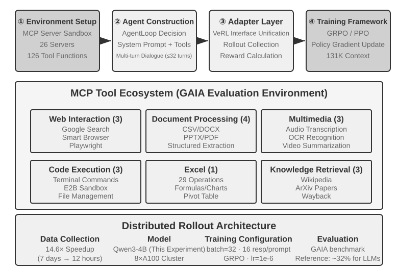
GAIA, Agent değerlendirme benchmark'larının en zorlayıcılarından biridir. Büyük parametreli modeller büyük ölçekli eğitimden geçse bile yalnızca yaklaşık %32'ye ulaşabilir ve yüksek puanlı sistemlere göre belirgin bir fark kalır. Bu deney daha küçük bir model (Qwen3-4B) kullanır; asıl amacı, eksiksiz bir "pratikten öğrenme" eğitim akışını göstermektir.
AWorld eğitim ortamı bir MCP sunucusu sandbox'ıdır; 26 sunucu ve 126 araç fonksiyonu sunar ve şunları kapsar: web etkileşimi (Google araması, akıllı tarayıcı, Playwright), doküman işleme (CSV/DOCX/PPTX/PDF), multimedya işleme (ses yazıya çevirme, OCR, video özetleme), kod yürütme (terminal komutları, E2B sandbox), Excel işleme (29 kurumsal düzeyde işlem), bilgi getirme (Wikipedia, ArXiv, Wayback Machine). Gerçek API'lerin hız sınırları, servis dalgalanmaları ve hesap kapatmaları doğrudan üretim ortamında eğitimi olanaksız kılar — kararlı, denetlenebilir ve yeniden oynatılabilir bir simülasyon ortamı kurmak, çok araçlı RL eğitiminin mühendislik ön koşuludur.
Tek araçtan çok araca geçişteki niteliksel değişim şudur: tek araçta yalnızca "ne zaman" ve "nasıl" çağrılacağına karar vermek gerekir; çok araçta ayrıca "hangisinin çağrılacağı" ve "nasıl birleştirileceği" de çözülmelidir. Bu da kombinatoryal patlama ve bağımlılık yönetimi karmaşıklığını getirir — araçlar arasında ön bağımlılıklar (belirli bir sayfayı gezmek için önce arama yapmak gerekir), karşılıklı dışlama kısıtları (bazı araçlar aynı anda çağrılamaz) ve maliyet farkları (farklı API'lerin kotası ve gecikmesi farklıdır) vardır. Politikanın, bu kısıtlar altında anlık en iyiyi açgözlülükle seçmek yerine bütünsel bir planlama yapması gerekir.
Belirtmek gerekir ki bu deney açık uçlu bir eğitim deneyidir ve referans çizgisi sonuçları sunmaz — Qwen3-4B ölçeğindeki bir modelin GAIA'da göz alıcı puanlar alması zordur; bu deneyin değeri metrikleri kırmakta değil, "pratikten öğrenme" zincirinin tamamını uçtan uca çalıştırmakta yatar. Referans alınabilecek kabul ölçütleri ve beklenen gözlemler şunlardır: ortamın reset ve episode döngüsünün kararlı biçimde çalışması (araç çağrısı, geri bildirim ve durum güncellemesinin çökmemesi); eğitim boyunca ortalama ödül eğrisinin yükseliş eğilimi göstermesi; araç çağrısı başarı oranının eğitimle birlikte artması ve modelin çok araç arasında giderek daha makul seçim ve birleşimler yapmayı öğrenmesi.
Örnek Verimliliğini Artırmaya Yönelik Öncü Keşifler¶
Yukarıdaki deneyler RL'in Agent eğitimindeki temel değerini sistemli biçimde gösterdi, ama hepsi yüksek bir örnek maliyeti ödedi. ReTool'un RL eğitim süresi SFT'nin 200 katından fazladır (9 gün ile 1 saat); kaynakların kısıtlı olduğu ya da hızlı yineleme gereken senaryolarda bu kabul edilemez olabilir.
RL'in örnek verimliliğinin düşük olmasının birden çok nedeni var (yüksek varyans, seyrek ödül, iz üstü verinin yeniden kullanılmasının zorluğu vb.); bunlardan önemli bir kökeni, yaygın policy gradient yöntemlerinin model-free (modelsiz) doğasıdır — ortam dinamiğini (world model, "eylem yürütüldükten sonra dünyanın nasıl bir hâl alacağı") modellemez ve tek bir geri bildirimin içindeki zengin bilgiyi doğrudan kullanması da zordur (bu iki nokta birbiriyle ilişkilidir, ama aynı şey değildir). Ortamın her etkileşimde döndürdüğü zengin geri bildirimin (hatanın nedeni, eksik alan, doğru akış ipucu) büyük kısmı boşa gider — bu sorunu daha önce "seyrek ödülün çıkmazı" kısmında ayrıntılı çözümlemiştik. Müşteri hizmetlerini telefonla arama senaryosunu düşünün: temsilci "kimlik doğrulamak için kredi kartının son dört hanesi gerekiyor" diye açıkça bildiriyor, ama model-free RL yalnızca nihai başarı/başarısızlık sinyalinden öğrenebiliyor (reward 0 ya da 1), bu net geri bildirimi doğrudan kullanamıyor ve kredi kartı bilgisi vermeyi ancak yüzlerce rastgele keşif sonucunda tesadüfen deneyebiliyor. Oysa insan, geri bildirimi duyduğu anda aklına yazıyor ve bir sonraki sefere kendiliğinden hazırlanıyor.
Bu darboğaz etrafında bu bölüm aslında birbirini tamamlayan iki fikir sundu. Birincisi, ortam geri bildiriminde boşa giden bilgiyi yeniden öğrenilebilir bir ödüle çevirmek — "temsilci önce kimlik doğrulaması istedi", "bu komut yıkıcı", "bir adım daha kanıtlandı" gibi net ve makineyle saptanabilir sinyalleri doğrudan ödül fonksiyonuna yazmak; Bölüm 7.10'da anlatılan RLVP tam olarak budur (özellikle "erişilebilir ilerlemeyi ödüllendirme" biçimindeki kısmi ödül kullanımı, tamamı başarısız gruplarda boşa giden örneklemeleri kurtarabilir). İkincisi ise bu bölümde ayrıntısıyla açacağımız yöntem: her adımın eğitim sinyalini daha yoğun hale getirmek. Görevin yalnızca bitiminde tek bir başarı/başarısızlık skaleri almak yerine trajectory'nin her noktasında yönlendirme almak — işte bu, On-Policy Distillation'dır.
On-Policy Distillation: SFT ile RL'in Güçlü Yanlarını Birleştirmek¶
On-Policy Distillation (iz üstü damıtma), 2025'te Thinking Machines Lab tarafından sistemli biçimde ortaya konup yaygınlaştırıldı8 ve bugün post-training'in en yaygın yöntemlerinden biri haline geldi; ayrıca ele alıp netleştirmeye değer. Neyi çözdüğünü anlamak için önce SFT ile RL'in birer ölümcül eksiğine bakalım — bu yöntem tam da ikisinin güçlü yanlarını bir araya getiriyor.
SFT'nin eksiği: Learner-Sampler Mismatch (öğrenen ile örnekleyen uyuşmazlığı). SFT'nin eğitim verisi "örnekleyen" (öğretmen model ya da insan uzman) tarafından üretilir; "öğrenen" (eğitilen model) bu doğru yolları yalnızca edilgen biçimde taklit eder. Sorun şu: öğrenen kendisi sahaya çıktığında kaçınılmaz olarak hata yapar ve eğitim verisinde hiç görülmemiş sapma durumlarına düşer; oysa bu durumlardan doğru yola nasıl dönüleceğini hiç görmemiştir, böylece küçük hatalar birikip büyük hataya dönüşür — tıpkı yalnızca standart yanıtları ezberlemiş bir öğrencinin, ara adımlardan birini yanlış hesapladığı anda geri dönmeyi hiç bilememesi gibi. Kökeni şudur: eğitim sırasında "yolu kim yürüyor" (öğretmen) ile dağıtım sırasında "yolu kim yürüyor" (öğrencinin kendisi) aynı dağılım değildir.
RL'in eksiği: sinyal fazla seyrek. RL öğrenciyi kendisi yürütür (iz üstü) ve dağılım uyuşmazlığını çözer; ama her trajectory sonuna kadar yürüdüğünde yalnızca tek bir başarı/başarısızlık skaleri alır. Aradaki her adımın tam olarak nasıl düzeltilmesi gerektiğini bulmak için yine yüzlerce, binlerce deneme yanılmayla geriye doğru çıkarım yapmak gerekir.
On-Policy Distillation ikisinin güçlü yanlarını birleştirir: trajectory'yi öğrencinin kendisi üretir (On-Policy, dağılım uyuşmazlığını çözer), aynı anda daha güçlü bir öğretmen model öğrencinin yürüdüğü her adımı token token puanlar (yoğun sinyal, sinyal seyrekliğini çözer). Üç yöntemi tek cümleyle karşılaştıralım: SFT "iz dışı + yoğun sinyal"dir (dağılım uyuşmazlığı vardır), RL "iz üstü + seyrek sinyal"dir (geri bildirim seyrektir), On-Policy Distillation ise "iz üstü + yoğun sinyal"dir — iki eksik de kapanmıştır.
Puanlama tam olarak nasıl yapılır? Öğretmen yalnızca öğrencinin bu adımının doğru olup olmadığına karar vermez; doğrudan "şu anki konumda bir sonraki token için çeşitli seçeneklerin olasılıkları ne olmalı" sorusunun tam dağılımını verir. Örneğin öğrenci "önce API'yi sorgula, sonra dönen değeri ayrıştır..." derken belirli bir noktaya geldiğinde, öğretmen burada "sorgula"nın %80, "çağır"ın %15, geri kalanın %5 olması gerektiğini düşünür; öğrencinin öğrenme hedefi ise her konumdaki tahmin dağılımını öğretmenin dağılımına olabildiğince yaklaştırmaktır. Teknik olarak bu, iki dağılım arasındaki KL sapmasını (KL divergence) en aza indirerek gerçekleştirilir (KL sapması iki olasılık dağılımı arasındaki farkı ölçer; dağılımlar birbirine yaklaştıkça küçülür, aynı olduklarında 0 olur; Bölüm 7.7'de ayrıntılı anlatıldı). Yalnızca nihai başarı/başarısızlığı bildiren ikili sinyale kıyasla, bu token token dağılım hizalaması bir büyüklük mertebesinden fazla yoğundur.
Sonuçlar çok belirgin: matematik gibi görevlerde aynı performansa ulaşmak için gereken eğitim adımı sayısı, saf RL'in yalnızca yaklaşık 1/10'u kadardır. Uzun zincirli düşünme görevlerinde üstünlüğü özellikle belirgin — her adımda öğretmen yol gösterdiği için öğrenci hatasını hızla düzeltmeyi öğrenir, yanlış yolda gitgide uzaklaşmaz. Ayrıca yan fayda olarak aşırı öğrenmeyi de hafifletir: standart RL'de aynı prompt üzerinde tekrar tekrar eğitim yapmak nihai yanıtın ezberlenmesine yol açabilir; burada ise her seferinde trajectory farklıdır ve öğretmen somut trajectory'ye göre geri bildirim verir, böylece öğrenilen şey belirli bir yanıt değil genel bir politika olur; verinin yeniden kullanım oranı da bu sayede büyük ölçüde artar.
Bu yöntemin değeri çok turlu Agent senaryolarında özellikle büyüktür: çok turlu görevlerde başarı/başarısızlık sinyali en sonda ortaya çıkar, hem seyrek hem gecikmelidir; token token verilen öğretmen dağılımı ise tam olarak aradaki her adımda eksik kalan yönlendirmeyi tamamlar. Ama bir ön koşulu var ve bu, bölüm boyunca vurgulanan ana hattı yankılıyor: öğrencinin serbestçe keşfedebileceği, yeterince gerçekçi bir simülasyon ortamı olmak zorundadır — yoksa öğrenci, öğretmenin de hiç görmediği sapma durumlarına düştüğünde öğretmenin puanlaması da güvenilmez olur. On-Policy'nin değeri, "öğrencinin gerçekten dağıtım ortamının dağılımı üzerinde keşif yapması" temeline dayanır.
"Yoğun sinyal seyrek sinyalden üstündür" kuralı, saf bir Agent senaryosunda oldukça temiz biçimde bir kez doğrulandı. Bölüm 2'de durum çubuğu anlatılırken Agent'ın "zaman duyusundan" söz edilmişti — Aciliyet, Israr, Tetiklik — ve bunlar çıkarım zamanında bir işletim el kitabıyla takılabiliyordu; ama 8B'lik küçük bir modelin prompt'lardan bağımsızlaşıp bu tempo duyusunu doğrudan ağırlıklarına yazması, başlı başına bir post-training problemidir. Yazar ve iş birlikçileri bunun üzerinde sırasıyla DPO'yu ve dört farklı pekiştirmeli öğrenme reçetesini denedi; dört RL reçetesinin her biri tam da bu bölümde daha önce ele alınan birer başarısızlık kalıbına denk geldi: sert kapılı ödül fazla seyrekti, rollout'ların büyük çoğunluğu sıfır puan aldı ve grup içi avantaj sıfırlandı (seyreklik); kademeli ödüle geçilince sinyal yoğunlaştı, ama vekil metrik gerçek geçme oranına karşılık gelmiyordu (hedef kayması); yalnızca ilk turdaki yanıtın puanlanması, çok turlu değerlendirmede daha da kötü sonuç veren baştan savma kısa yanıtları doğurdu (rollout biçimi uyuşmazlığı); son olarak rollout biçimi değerlendirmeyle hizalandığında eğitim ödülü gerçekten yükselmeye başladı, ama politika birkaç adım içinde tek bir moda çöktü ve 4 kat güçlü bir KL çıpası bile onu tutamadı (eğitim çöküşü). Hiçbir reçete SFT'nin tavanını aşamadı. On-Policy Distillation'a geçildiğinde — dondurulmuş bir Qwen3-32B öğretmen, öğrencinin kendi yürüdüğü çok turlu trajectory'ler üzerinde token token hedef dağılımı veriyordu — eğitim pürüzsüz biçimde yakınsadı ve dört koşulun hepsinde geçme oranı, aynı kaynaktan gelen SFT referans çizgisinden 23 ila 47 yüzde puan daha yüksek çıktı9. Dört seyrek sinyalin sırayla başarısız olması ve tek bir yoğun sinyalin başarılı olması, bu bölümün ana fikrini bir kez daha sağlamlaştırdı: post-training'i tıkayan şey çoğu zaman ödül fonksiyonunun yeterince zekice tasarlanmamış olması değil, sinyalin kendisinin yeterince yoğun olmamasıdır.
Daha Güçlü Bir Öğretmen Yoksa Ne Yapmalı: On-Policy Öz-Damıtma¶
On-Policy Distillation'ın gücü öğretmenden gelir, ama tam da bu yüzden sert bir ön koşulu vardır: öğrenciden belirgin biçimde güçlü bir öğretmen model bulunmak zorundadır. Bu, birçok senaryoda geçerli değildir. Eğitmek istediğiniz şey dikey bir alan modeliyse ve mevcut modellerin hepsinin yeteneği yetersizse, kullanılabilecek bir öğretmen model yoktur. Daha güçlü bir öğretmen olmadan, yoğun sinyalin getirisinden büsbütün mahrum mu kalırız?
Zekice bir çözüm fikri On-Policy Self-Distillation (OPSD, iz üstü öz-damıtma)13: aynı modele hem öğretmen hem öğrenci rolünü oynatmak; tek fark context'tedir. Öğretmen sürümü "ayrıcalıklı bilgiyi" (privileged information) görebilir — örneğin sorunun standart yanıtını ya da doğrulanmış doğru bir çözümü. Bu sürümün soruyu gerçekten "çözebiliyor" olması gerekmez; elindeki yanıtla öğrencinin yürüdüğü her adımı gerekçelendirip token token hedef dağılımı vermesi yeterlidir. Öğrenci sürümü ise yalnızca sorunun kendisini görür ve kendi örneklediği trajectory'ler üzerinde öğretmen sürümüyle hizalanır. Arkasındaki sezgi şu: "yanıta bakarak soruyu anlatmak", "soruyu bağımsız çözmekten" çok daha kolaydır — bu, RLVR'in dayandığı "doğrulama—üretim asimetrisiyle" eş yapıdadır; yalnızca burada asimetri, seyrek bir başarı/başarısızlık skaleri değil yoğun bir denetim sinyali üretmek için kullanılır.
RLVR'e kıyasla OPSD'nin iki temel üstünlüğü var. Birincisi, artık doğrulanabilir ödüle bağımlı değildir. RLVR'in ön koşulu otomatik bir doğrulayıcının varlığıdır; OPSD'nin ayrıcalıklı bilgi kaynağı ise çok daha geniştir: standart yanıt olabileceği gibi daha zengin bir system prompt, insan gösterimi ya da alan dokümanı da olabilir — "modelin sonradan doğru davranışı açıklıkla anlatmasını sağlayan" her bilgi işe yarar. İkincisi, denetim sinyali RL'inkinden çok daha yoğundur. RL'de bir trajectory yalnızca tek bir skaler ödül alır; OPSD ise trajectory'nin her konumunda eksiksiz bir olasılık dağılımı sağlar ve token verimliliği RL yöntemlerinden belirgin biçimde üstündür. Denilebilir ki OPSD, "daha güçlü öğretmenin" yerine "ayrıcalıklı bilgiyi" koymuştur ve bu sayede örnek verimliliği sorununu hafifletmenin gerçekçi bir yolu haline gelmiştir.
Elbette bu paradigmanın sınırları da çok net ve esas olarak öğretmenin yetenek tavanının öğrencinin kendisine kilitli olmasından kaynaklanıyor: kazancın büyüklüğü, "ayrıcalıklı bilginin ne kadar ek yetenek getirdiğine" bağlıdır. Model elinde yanıt olmasına rağmen çözüm sürecini anlatamıyorsa (örneğin yanıt, dille açıklanabilir bir akıl yürütmeden değil kaba kuvvet aramasından geliyorsa), öz-damıtmanın sinyal kaynağı olmaz. Mevcut araştırmalar naif OPSD'nin başarısızlık kalıplarını da gözlemledi; örneğin öz-damıtma sırasında model özgün düşünme üslubunu yavaş yavaş kaybediyor ve kararlılık için ek düzenlileştirme gerekiyor14. "Aynı model, farklı context, birbirine öğretmen ve öğrenci" fikri hâlâ hızla evriliyor, ama "daha güçlü öğretmen yok" biçimindeki yaygın çıkmaza şimdiden bir yol açmış durumda.
Post-training'in Bütünsel Görünümü ve Pratik İpuçları¶
Bu bölüm, ön eğitimin "bir sonraki kelimeyi tahmin etme" adımından yola çıkıp uzun bir yol katetti: SFT biçimi sabitler, RL genellemenin önünü açar, çok turlu görevler credit assignment sorununu getirir, ödül tasarımı sonuç ödülünden "sonucu ödüllendir, süreci kısıtla" biçimindeki yol sinyaline uzanır, araç kullanımı ise kombinatoryal patlamayı beraberinde getirir. Bu deneylerin ortak bir izleği var — modelin ne öğrendiği, eğitim sinyalinin ona ne öğrettiğine bağlıdır; sinyalin kalitesini ise esas olarak veri ve ortam belirler, algoritma değil.
İş birliği paradigması: daha önce (GeneralPoints deneyinin özetinde) bu paradigma Çin resmindeki "önce biçim, sonra ruh" deyişiyle özetlenmişti — SFT "biçim kararlı, yetenek başlangıç düzeyinde" noktasında durur, RL bu temel üzerinde politikayı biçimlendirir. İkisi farklı katmanlarda iş görür: SFT protokolü ve yapıyı sabitler (JSON biçimi, diyalog şablonu, araç arayüzü), RL ise politikayı ve genellemeyi optimize eder (aritmetik kurallar, uzamsal düşünme, eylem dizileri). Kritik denge: SFT'nin aşırı eğitilmesi, modelin eğitim dağılımına çökmesine yol açar ve RL'in optimizasyon alanını daraltır.
Aşağıdaki yaygın tuzaklara karşı dikkatli olmakta fayda var; bu sorunları tanımak, teknik ayrıntılara hâkim olmaktan çoğu zaman daha fazla kaynak israfını önler:
- Olguları ezberletmek için post-training'e aşırı yaslanmak — olgusal bilgi RAG ile yönetilmelidir (dinamik olarak güncellenebilir, kaynağı izlenebilir, eğitim nedeniyle unutulmaz); post-training ise "bilginin nasıl kullanılacağına" odaklanmalıdır.
- Biçim kararlı hale gelmeden RL'e geçmek — model temel bir JSON'u bile kararlı biçimde üretemiyorken (ayrıştırma hata oranı %20'nin üzerindeyken) RL eğitimi tamamen başarısız olur. Önce SFT yapmak şarttır.
- Ödül fonksiyonunun yanlış tasarlanması nedeniyle reward hacking — model görevi gerçekten tamamlamak yerine ödülün açıklarını kullanarak yüksek puan almayı öğrenir (örneğin yalnızca yanıt uzunluğuna bakılıyorsa uzun ve anlamsız metinler üretir). Ara metrikler değil nihai hedef değerlendirilmelidir.
- Simülasyon gerçekliğini göz ardı etmek — simülasyon fazla basitleştirilmişse (müşteri temsilcisi hep sabit bir kalıpla yanıt veriyorsa) ya da ortamın yanıtları gerçekçi değilse (hata mesajları üretim ortamıyla tutarsızsa), eğitilen politika gerçek senaryolarda tamamen işlevsiz kalır. Yüksek gerçeklikli bir simülasyon ortamı kurmanın maliyeti, eğitimin kendisinden yüksek olabilir.
- Aşırı eğitimin genellemeyi düşürmesi — eğitim kaybı düşmeye devam ederken doğrulama kümesindeki performans tersine kötüleşiyorsa, model eğitim ayrıntılarını ezberliyor demektir. Bu sorun özellikle SFT'de sık görülür ve erken durdurma hâlâ hayati önemdedir; RL'de aşırı optimizasyon da politikanın mevcut görev dağılımına aşırı uyum sağlamasına yol açar.
- Değer fonksiyonunun çökmesi ve keşfin yetersiz kalması — PPO'da değer kestirimi isabetsiz olursa avantaj hesabında sapma oluşur; bu, eğitim eğrisinin şiddetle salınması olarak görünür. Sıcaklık parametresinin fazla düşük olması ya da rastgeleliğin yetersiz kalması, Agent'ı yerel bir en iyiye hapseder.
- RL'in hesaplama maliyetini küçümsemek — SFT'de iyi sonuç veren bir görevi RL'e taşımak 10-100 kat daha uzun eğitim süresi gerektirebilir. Test dağılımı eğitimle büyük ölçüde örtüşüyorsa SFT çoktan yeterli olabilir.
- Eğitim verisinin kalitesinin düşük olması — SFT, verideki gürültü ve sapmaları doğrudan öğrenir ve hataları parametrelere sabitler; RL keşif yoluyla daha iyi politikalar bulabilse de, reward model'de sistematik bir sapma varsa yanlış yöne doğru optimize eder.
Temel ilke: büyük ölçekli kaynak yatırmadan önce kritik varsayımları küçük ölçekli deneylerle doğrulayın — az miktarda veriyle SFT'nin biçimi kararlı hale getirip getiremediğini test edin, basitleştirilmiş bir ortamda RL'in yakınsayıp yakınsamadığını doğrulayın, küçük bir örneklemle ödül fonksiyonunun gerçek hedefi yansıtıp yansıtmadığını kontrol edin. Hızlı başarısızlık, büyük ölçekli başarısızlıktan daha kabul edilebilirdir.
RAG/ICL ile iş birliği: üçü birbirini dışlayan çözümler değildir, farklı konumlarda iş görürler. ICL; örnekler, kurallar ve mevcut durum üzerinden parametre değişikliği olmadan anında uyum sağlar, ama context büyüdükçe gecikme ve maliyet de artar. RAG, olguları ve kanıtları dinamik olarak güncellenebilir ve izlenebilir dış bilgide tutar. Post-training ise yüksek boyutlu algıyı, üretim üslubunu ve örtük karar politikalarını parametrelere yazar. Seçim ölçütü yalnızca görevin uzun vadede kararlı olup olmadığı değildir; daha önemlisi, yeteneğin dış sembollerle yeterince ifade edilip edilemeyeceğidir. Tıbbi görüntü tanıma, doğal ses tonu gibi yetenekler, sürekli değişen bir alanla karşı karşıya olsalar bile çoğu zaman parametre güncellemesi gerektirir; tersine, uzun vadede kararlı olan para transferi onay kuralları da yalnızca modelin belleğine bırakılmamalı, kod tarafından deterministik güvenceyle sağlanmalıdır.
Sağlam sistemler bu yöntemleri genellikle birlikte kullanır: olguları ve kanıtları RAG ile yönetir, dille ifade edilebilen politikaları ICL ile hızlıca dener, deterministik akışları ve sert kısıtları programla sabitler, açıkça ifade edilmesi zor olan ve geniş genelleme gerektiren yetenekleri ise post-training yoluyla parametrelere yazar. Post-training ayrıca model damıtmayı da mümkün kılar — yüksek yetenekli büyük bir modelin yeteneklerini maliyeti daha düşük küçük bir modele aktarmak.
Bölüm Özeti¶
Model post-training'in özü, etkileşim politikasını parametrelere yazmaktır.
SFT ile RL rakip değildir, sıralı bir ilişki içindedir: önce SFT çıktı biçimini kararlı hale getirir (aksi halde RL'in ödül sinyali hesaplanamaz bile), sonra RL bu temel üzerinde genellemeyi öğrenir. "SFT ezberler, RL genelleştirir" bir slogan değil, ölçülebilir bir olgudur. Bölümün tamamına yayılan ve her algoritmadan daha çok akılda tutulmaya değer iki tespit daha var. Birincisi, veri ve ortam algoritmadan daha önemlidir: hazır RL algoritmalarını kullanmayı bilmeniz yeterli; farkı asıl açan şey simülasyon ortamının gerçekliği ve eğitim verisinin kalitesidir. Gerçek bir ortam kurulamadığında ortamı modelle simüle etmek (araç dönüş değerlerini sentezlemek, ortam dinamiğini simüle etmek) de uygulanabilir bir yoldur, ama simülatörün sapmasının eğitimin tavanı olduğunu unutmayın. Yalnızca yanıtlar elenmekle kalmaz, eğitim verisinin görev dağılımının kendisi de bir optimizasyon nesnesi haline gelebilir. Birçok senaryoda, SFT'nin veri kalitesi yerindeyse RL yapmanıza bile gerek kalmaz. İkincisi, bugünün RL'inde asıl darboğaz örnek verimliliğidir: her adımın sinyalini daha yoğun hale getiren On-Policy Distillation ile boşa giden ortam geri bildirimini öğrenilebilir sinyale çeviren doğrulanmış yol cezası RLVP ("sonucu ödüllendir, yolu cezalandır" ve erişilebilir ilerlemenin kısmi ödülüyle tamamı başarısız grupların örneklemelerini kurtarmak), şu an en umut verici görünen iki yön. Ortak noktaları yine aynı cümle: ortamda ve veride zaten var olan, ama saf sonuç ödülü tarafından boşa harcanan bilgiyi modelin öğrenebileceği bir şeye geri çevirmek. Daha güçlü bir öğretmen olmadığında bu fikrin bir öz-damıtma varyantı da var: OPSD, aynı modeli "yanıta bakan öğretmen" ve "yalnızca soruyu gören öğrenci" kimlikleriyle birbirini denetler hale getirir ve token token verilen yoğun sinyali, ödülün doğrulanamadığı görevlere taşır.
Bu bölüm, parametre güncellemesinde "nasıl eğitilir" sorusunu yanıtladı. Sonraki bölüm model parametrelerini yeniden eksiksiz Agent sisteminin içine yerleştiriyor: parametreler, dört güncelleme taşıyıcısından — bilgi, talimat, program ve parametre — yalnızca biridir ve kendine özgü sorunu, dağıtım trajectory'lerinden güvenilir öğrenme sinyali elde etmek, doğru güncelleme konumunu seçmek ve bütün aday sürümlerin doğrulanmasını, yayımlanmasını ve geri alınmasını yönetmektir. Somut eğitim algoritmaları söz konusu olduğunda Bölüm 8 doğrudan bu bölüme atıf yapacak, konuyu yeniden açmayacak.
Düşünce Soruları¶
- ★★ Felaket unutma — belirli bir göreve yönelik bir ince ayarın modelin var olan genel yeteneklerini (örneğin genel tool calling'i) bozması — Agent senaryolarında özellikle çetrefillidir. Tüm parametrelerin ince ayarına kıyasla LoRA taban ağırlıkları dondurur ve unutma riski daha düşüktür, ama bağışık değildir. İnce ayarın getirdiği yetenek kaybını daha da hafifletmek için hangi stratejiler kullanılabilir?
- ★★ Post-training yeteneği model ağırlıklarına sabitler ("kas hafızası"), in-context learning ise bilgiyi çıkarım zamanındaki girdiye koyar. Ama bazı yetenekler (örneğin alan bilgisi) hem post-training ile öğrenilebilir hem de few-shot örneklerle sağlanabilir. Bir yeteneğin hangi yoldan gitmesi gerektiğine karar verirken hangi ölçütleri kullanırsınız?
- ★★ Model damıtma, küçük modelin büyük modelin davranışını öğrenmesini sağlar. Yetenek katmanlarına göre damıtılan modeller kabaca üç seviyeye ayrılır: Chat modelleri (tek turlu diyalog, doğrudan yanıt), Reasoning modelleri (uzun zincirli düşünmeden sonra yanıt), Agentic modeller (çok turlu araç çağırma, ortamla etkileşim). Bu üç türü ayrı ayrı damıtırken zorluklar nasıl farklılaşır? (İpucu: "asıl damıtılan şey nedir" sorusundan başlayın — çıktının üslubu mu, eksiksiz düşünme trajectory'si mi, yoksa ortamla etkileşimin karar politikası mı; trajectory'deki hangi token'lar öğrenilmeli, hangileri ortamın döndürdüğü ve öğrenilmemesi gerekenler; ayrıca başarı/başarısızlık sinyali ne kadar geç ve ne kadar seyrek ortaya çıkıyor.)
- ★★★ Çok turlu Agent etkileşiminde ödülün atfedilmesi (credit assignment) sorunu tek turluya göre çok daha ciddidir — nihai bir başarıyı ya da başarısızlığı 3. turdaki karara mı yoksa 7. turdakine mi yazacağınızı belirlemek zordur. Ödül dağıtım stratejisini nasıl tasarlarsınız?
- ★★★ Sabit bir bütçeniz varsa (örneğin 10.000 dolar) ve bir müşteri hizmetleri Agent'ının performansını iyileştirecekseniz, bütçeyi context ve bilgi, Prompt/Skills, program kısıtları ve parametre eğitimi arasında nasıl dağıtırsınız? Kararınız hangi etkenlere bağlıdır?
- ★★★ Net bir ödül fonksiyonu olmadan ve örnek sayısı azken modelin öğrenmeyi kendi başına gerçekleştirmesi, bazılarına göre post-training'in nihai hedefidir. Bugünün RL eğitim yöntemleri bu hedeften ne kadar uzakta? Bir sonraki atılımın büyük olasılıkla hangi yönden geleceğini düşünüyorsunuz?
- ★★ Bu bölüm, LoRA ince ayarının maliyetinin yüksek olmadığını belirtiyor. Peki her kullanıcı (ya da her müşteri şirket) için özel bir LoRA eğitip kullanıcı belleğini veya kurumsal bilgiyi, Bölüm 3'teki gibi dış bir bilgi tabanında saklamak yerine parametrelere yazmak mümkün mü? Hangi senaryolarda "belleği parametrelere yazmak", "belleği bilgi tabanına koymaktan" daha avantajlıdır? Hangi senaryolarda ise tersine sonuç verir?
- ★★★ On-Policy Distillation, öğrenciyi denetlemek için daha güçlü bir öğretmen modele dayanır. Ama OpenAI'nin Weak-to-Strong Generalization araştırması sezgiye aykırı bir bulgu ortaya koydu: zayıf modelin denetim sinyali bazen güçlü modelin kendisinde var olan ama henüz etkinleşmemiş yetenekleri harekete geçirebiliyor. Bu fikir Agent eğitimine uygulanırsa, "küçük modelin büyük modele öğretmesi" biçiminde ters yönlü bir damıtma mümkün olur mu?
- ★★ Süreç ödül modeli (PRM) her düşünme adımını değerlendirir, sonuç ödül modeli (ORM) ise yalnızca nihai sonuca bakar. Peki "doğru sürecin yanlış sonuca yol açması" ile "yanlış sürecin şans eseri doğru sonuca ulaşması" durumlarından hangisi ödüllendirilmeyi daha çok hak eder? Agent'ın çok adımlı tool calling senaryosunda dengeyi nasıl kurarsınız?
- ★★★ Bu bölümde ele alınan değerlendirme veri kümeleri (SWE-Bench Verified, τ²-bench, AndroidWorld gibi) hem değerlendirme hem de post-training için kullanılabilir. Ama değerlendirme kümesini eğitimde kullanırsanız, artık bağımsız bir değerlendirme kümesi olmaktan çıkar — bu, eğitim kümesiyle test kümesinin ayrı olması gerektiği temel ilkesini ihlal etmez mi? τ²-bench'in dinamik parametre üretimi ve AndroidWorld'ün parametrik şablonları bu sorunu bir ölçüde hafifletiyor, ama şablon yapısının kendisi yine de sabit. Değerlendirme verisinin eğitim değerinden tam olarak yararlanmakla değerlendirmenin bağımsızlığını korumak arasındaki dengeyi nasıl bulursunuz?
- ★★★ Bu bölüm "önce biçim, sonra ruh" biçiminde bir eğitim paradigması ortaya koyuyor: SFT "biçim kararlı, yetenek başlangıç düzeyinde" noktasında durur, sonra RL'e geçilir. Peki pratikte SFT'nin çoktan "yeterli" olduğuna ve artık geçiş yapılması gerektiğine nasıl karar verilir?
- ★★★ ReTool'un eğitim dinamiği (bkz. Deney 7-15), az sayıdaki aşırı uzun yanıtın tüm eğitim döngüsünü belirgin biçimde geciktirdiğini gösteriyor — bir rollout partisindeki yanıtların büyük çoğunluğu çoktan üretilmiş olsa da en uzun birkaç yanıtın bitmesi beklenir ve bu süre boyunca cluster'ın GPU kullanımı çok düşüktür. Bu uzun kuyruklu yanıt senaryosunda eğitim cluster'ının kaynak kullanımı nasıl artırılabilir?
- ★★★ Agent'ı LLM ile simüle edilmiş bir ortamda (simüle arama motoru, simüle kullanıcı gibi) eğitirken, Agent'ın açık aradığı hedef "gerçek ortamın kurallarından" "simülatörün kendi önyargıları ve açıklarına" kayar. Bu tür eğitimlerde hangi somut reward hacking davranışları ortaya çıkabilir? Bunlara karşı nasıl önlem alınabilir?
-
Schulman, John and Thinking Machines Lab, "LoRA Without Regret", 2025. ↩
-
Ouyang, Long et al., "Training Language Models to Follow Instructions with Human Feedback", OpenAI, 2022. ↩
-
Gao, Leo, John Schulman, and Jacob Hilton, "Scaling Laws for Reward Model Overoptimization", OpenAI, 2023. ↩
-
Rafailov, Rafael et al., "Direct Preference Optimization: Your Language Model is Secretly a Reward Model", 2023. ↩
-
Lightman, Hunter et al., "Let's Verify Step by Step", OpenAI, 2023. ↩
-
Silver, David and Richard S. Sutton, "Welcome to the Era of Experience", 2025. ↩
-
Bu bölümdeki yol cezası tasarımı, dört ilke ve deney verileri için bkz. Li, Bojie and Noah Shi, "RLVP: Penalize the Path, Reward the Outcome", 2026. arXiv:2607.07435. ↩
-
On-Policy Distillation'ın yöntemi ve deneyleri için bkz. Thinking Machines Lab, "On-Policy Distillation", 2025. ↩
-
Agent'ın zaman duyusuna ilişkin bu post-training karşılaştırması — DPO'nun ve dört RL reçetesinin kendine özgü başarısızlık kalıpları ile On-Policy Distillation'ın atılımı — için bkz. Li, Bojie and Noah Shi, "Agents That Sense Physical Time: Urgency, Persistence, and Vigilance as Missing Controls for LLM Agents", 2026. https://01.me/research/physical-time-agent ↩
-
Kulikov, Ilia, et al. Autodata: An Agentic Data Scientist to Create High Quality Synthetic Data. arXiv:2606.25996, 2026. ↩
-
Sun, Hao, et al. "ZeroSearch: Incentivize the Search Capability of LLMs without Searching", 2025. arXiv:2505.04588. ↩
-
"DreamGym: Scaling Agent Learning via Experience Synthesis", 2025. arXiv:2511.01824. ↩
-
Zhao, Siyan, et al. "Self-Distilled Reasoner: On-Policy Self-Distillation for Large Language Models", 2026. arXiv:2601.18734. ↩
-
Shen, Ziqi, et al. "Purified OPSD: On-Policy Self-Distillation Without Losing How to Think", 2026. arXiv:2607.02234. ↩